Edition 2.0 2022-09
REDLINE VERSION
Medical electrical equipment –
Part 2-54: Particular requirements for the basic safety and essential
performance of X-ray equipment for radiography and radioscopy
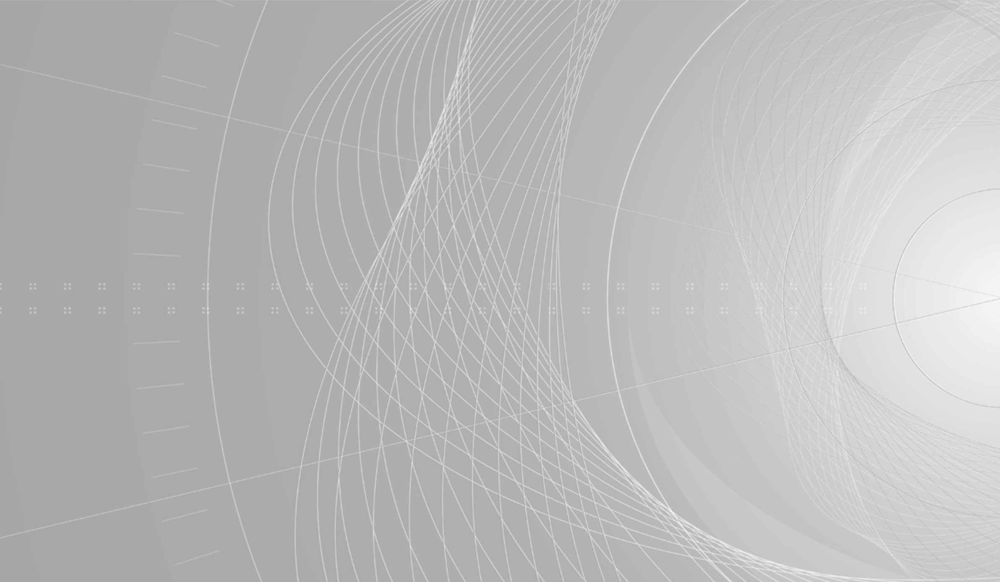
THIS PUBLICATION IS COPYRIGHT PROTECTED
Copyright © 2022 IEC, Geneva, Switzerland
All rights reserved. Unless otherwise specified, no part of this publication may be reproduced or
utilized in any form
or by any means, electronic or mechanical, including photocopying and microfilm, without permission
in writing from
either IEC or IEC's member National Committee in the country of the requester. If you have any
questions about IEC
copyright or have an enquiry about obtaining additional rights to this publication, please contact
the address below or
your local IEC member National Committee for further information.
IEC Secretariat
3, rue de Varembé
CH-1211 Geneva 20
Switzerland
About the IEC
The International Electrotechnical Commission (IEC) is the leading global organization that
prepares and publishes
International Standards for all electrical, electronic and related technologies.
About IEC publications
The technical content of IEC publications is kept under constant review by the IEC. Please make
sure that you have the
latest edition, a corrigendum or an amendment might have been published.
The advanced search enables to find IEC publications by a variety of criteria (reference
number, text, technical
committee, …). It also gives information on projects, replaced and withdrawn
publications.
Stay up to date on all new IEC publications. Just Published details all new publications
released. Available online and
once a month by email.
If you wish to give us your feedback on this publication or need further assistance,
please contact the Customer Service
Centre: sales@iec.ch.
IEC Products & Services Portal -
products.iec.ch
Discover our powerful search engine and read freely all the publications previews. With
a subscription you will always
have access to up to date content tailored to your needs.
The world’s leading online dictionary on electrotechnology, containing more than 22 300
terminological entries in English
and French, with equivalent terms in 19 additional languages. Also known as the
International Electrotechnical Vocabulary
(IEV) online.
Edition 2.0 2022-09
REDLINE VERSION
Medical electrical equipment –
Part 2-54: Particular requirements for the basic safety and essential
performance of X-ray equipment for radiography and radioscopy
INTERNATIONAL
ELECTROTECHNICAL
COMMISSION
ICS 11.040.50
ISBN 978-2-8322-5784-5
Warning! Make sure that you obtained this publication from an
authorized distributor.
® Registered trademark of the International Electrotechnical Commission
INTERNATIONAL ELECTROTECHNICAL COMMISSION
MEDICAL ELECTRICAL EQUIPMENT –
Part 2-54: Particular requirements for the basic safety and essential
performance of X-ray equipment for radiography and radioscopy
The International Electrotechnical Commission (IEC) is a worldwide organization for standardization
comprising all national electrotechnical committees (IEC National Committees). The object of IEC is to
promote international co-operation on all questions concerning standardization in the electrical and
electronic fields. To this end and in addition to other activities, IEC publishes International
Standards, Technical Specifications, Technical Reports, Publicly Available Specifications (PAS) and
Guides (hereafter referred to as “IEC Publication(s)”). Their preparation is entrusted to technical
committees; any IEC National Committee interested in the subject dealt with may participate in this
preparatory work. International, governmental and non-governmental organizations liaising with the IEC
also participate in this preparation. IEC collaborates closely with the International Organization for
Standardization (ISO) in accordance with conditions determined by agreement between the two
organizations.
The formal decisions or agreements of IEC on technical matters express, as nearly as possible, an
international consensus of opinion on the relevant subjects since each technical committee has
representation from all interested IEC National Committees.
IEC Publications have the form of recommendations for international use and are accepted by IEC National
Committees in that sense. While all reasonable efforts are made to ensure that the technical content of
IEC Publications is accurate, IEC cannot be held responsible for the way in which they are used or for
any misinterpretation by any end user.
In order to promote international uniformity, IEC National Committees undertake to apply IEC
Publications transparently to the maximum extent possible in their national and regional publications.
Any divergence between any IEC Publication and the corresponding national or regional publication shall
be clearly indicated in the latter.
IEC itself does not provide any attestation of conformity. Independent certification bodies provide
conformity assessment services and, in some areas, access to IEC marks of conformity. IEC is not
responsible for any services carried out by independent certification bodies.
All users should ensure that they have the latest edition of this publication.
No liability shall attach to IEC or its directors, employees, servants or agents including individual
experts and members of its technical committees and IEC National Committees for any personal injury,
property damage or other damage of any nature whatsoever, whether direct or indirect, or for costs
(including legal fees) and expenses arising out of the publication, use of, or reliance upon, this IEC
Publication or any other IEC Publications.
Attention is drawn to the Normative references cited in this publication. Use of the referenced
publications is indispensable for the correct application of this publication.
Attention is drawn to the possibility that some of the elements of this IEC Publication may be the
subject of patent rights. IEC shall not be held responsible for identifying any or all such patent
rights.
This redline version of the official IEC Standard allows the user to identify the
changes made to the previous edition
IEC 60601-2-54:2009+AMD1:2015+AMD2:2018 CSV.
A vertical bar appears in the margin wherever a change has been made.
Additions are in green text,
deletions are in strikethrough red text.
IEC 60601-2-54 has been prepared by subcommittee 62B: Diagnostic imaging equipment, of IEC technical
committee 62: Electrical equipment in medical practice. It is an International Standard.
This second edition cancels and replaces the first edition published in 2009, Amendment 1:2015 and
Amendment 2:2018. This edition constitutes a technical revision.
This edition includes editorial and technical changes to reflect the IEC 60601-1:2005/AMD2:2020. It also
contains corrections and technical improvements. Significant technical changes with respect to the
previous edition are as follows:
-
A new specific term DOSIMETER is introduced to replace the general
term DOSIMETER;
-
Terms and definitions taken exclusively from IEC TR 60788:2004 and which are specifically applicable
in this document have been moved to 201.3;
-
The collateral standards IEC 60601-1-11:2015, IEC 60601-1-11:2015/AMD1:2020, IEC 60601-1-12:2014 and
IEC 60601-1-12:2014/AMD1:2020 are applicable if MANUFACTURER so
declares;
-
The subclause 201.11.101 “Protection against excessive temperatures of X-ray tube assemblies” has
been removed from this document as its requirements are sufficiently and clearly covered by IEC
60601-1:2005, IEC 60601-1:2005/AMD1:2012, IEC 60601-1:2005/AMD2:2020 and IEC 60601-2-28:2017;
-
To adopt changes which are introduced with respect to indicator lights in 7.8.1 of the IEC
60601-1:2005/AMD2:2020 clarification of requirements is provided to avoid conflicts with
requirements of indicator lights stipulated for X-Ray EQUIPMENTS;
-
Explanation of the term ESSENTIAL PERFORMANCE is provided in Annex AA
to emphasize the performance of the clinical function under NORMAL
and SINGLE FAULT CONDITIONS.
The text of this document is based on the following documents:
| Draft |
Report on voting |
| 62B/1285/FDIS |
62B/1293/RVD |
Full information on the voting for its approval can be found in the report on voting indicated in the
above table.
The language used for the development of this International Standard is English.
In this document, the following print types are used:
- – requirements and definitions: roman type;
- – test specifications: italic type;
-
– informative material appearing outside of tables, such as notes,
examples and references: in smaller
type. Normative text of tables is also in a smaller type;
-
– terms defined in clause 3 of IEC 60601-1:2005, IEC
60601-1:2005/AMD1:2012 and IEC
60601-1:2005/AMD2:2020, in this document or as noted: SMALL CAPITALS.
In referring to the structure of this document, the term
– “clause” means one of the seventeen numbered divisions within the table of
contents, inclusive of all
subdivisions (e.g. Clause 7 includes subclauses 7.1, 7.2, etc.);
-
– “subclause” means a numbered subdivision of a clause (e.g. 7.1, 7.2 and
7.2.1 are all
subclauses of Clause 7).
-
References to clauses within this document are preceded by the term “Clause” followed by the
clause number. References to subclauses within this document are by number only.
-
In this document, the conjunctive “or” is used as an “inclusive or” so a statement is true if any
combination of the conditions is true.
-
The verbal forms used in this document conform to usage described in Clause 7 of the ISO/IEC
Directives, Part 2. For the purposes of this document, the auxiliary verb:
-
–
“shall” means that compliance with a requirement or a test is mandatory for compliance with
this document;
-
–
“should” means that compliance with a requirement or a test is recommended but is not
mandatory for compliance with this document;
-
–
“may” is used to describe a permissible way to achieve compliance with a requirement or
test.
-
An asterisk (*) as the first character of a title or at the beginning of a paragraph or table title
indicates that there is guidance or rationale related to that item in Annex AA.
-
A list of all parts of the IEC 60601 and IEC 80601 series, published under the general title
Medical electrical equipment, can be found on the IEC website.
-
The committee has decided that the contents of this document will remain unchanged until the
stability date indicated on the IEC website under
webstore.iec.ch in the data related to the
specific document. At this date, the document will be
- • reconfirmed,
- • withdrawn,
- • replaced by a revised edition, or
- • amended.
IMPORTANT – The "colour inside" logo on the cover page of this document indicates that it
contains colours which are considered to be useful for the correct understanding of its
contents. Users should therefore print this document using a colour printer.
INTRODUCTIONS
This document has been prepared to provide, based on IEC 60601-1:2005 (third edition) and
its collaterals, a complete set of safety requirements for ME EQUIPMENT for RADIOGRAPHY and
RADIOSCOPY. The purpose of this second edition is to introduce changes to reference the second
amendment (2020) to IEC 60601-1:2005 and associated collateral standards. Moreover, in
Annex AA a clarification of the term for ESSENTIAL PERFORMANCE is provided. This document addresses the
system level of X-RAY EQUIPMENT, which consists of
a combination of an X-RAY GENERATOR, ASSOCIATED EQUIPMENT and ACCESSORIES. Component
functions are addressed as far as necessary.
The minimum safety requirements specified in this document are considered to provide for a
practical degree of safety in the operation of ME EQUIPMENT for RADIOGRAPHY and RADIOSCOPY.
Requirements for additional provisions for ME EQUIPMENT for interventional applications are
covered by IEC 60601-2-43.
MEDICAL ELECTRICAL EQUIPMENT –
Part 2-54: Particular requirements for the basic safety and essential
performance of X-ray equipment for radiography and radioscopy
201.1 Scope, object and related standards
Clause 1 of IEC 60601-1:2005, IEC 60601-1:2005/AMD1:2012 and
IEC 60601-1:2005/AMD2:2020 applies, except as follows:
201.1.1 Scope
Replacement:
This document applies to the BASIC SAFETY and ESSENTIAL PERFORMANCE of ME EQUIPMENT and
ME SYSTEMS intended to be used for projection RADIOGRAPHY and INDIRECT RADIOSCOPY.
IEC 60601-2-43 applies to ME EQUIPMENT and ME SYSTEMS intended to be used for interventional
applications and refers to applicable requirements in this document.
ME EQUIPMENT and ME SYSTEMS intended to be used for bone or tissue absorption densitometry,
computed tomography, mammography or dental or radiotherapy applications are excluded from
the scope of this document. The scope of this document also excludes radiotherapy simulators.
If a clause or subclause is specifically intended to be applicable to ME EQUIPMENT only, or to
ME SYSTEMS only, the title and content of that clause or subclause will say so. If that is not the
case, the clause or subclause applies both to ME EQUIPMENT and to ME SYSTEMS, as relevant.
201.1.2 Object
Replacement:
The object of this document is to establish particular BASIC SAFETY and ESSENTIAL PERFORMANCE
requirements for ME EQUIPMENT and ME SYSTEMS for RADIOGRAPHY and RADIOSCOPY.
201.1.3 Collateral standards
Addition:
This document refers to those applicable collateral standards that are listed in Clause 2 of
IEC 60601-1:2005, IEC 60601-1:2005/AMD1:2012 and IEC 60601-1:2005/AMD2:2020 as
modified in 201.2.
IEC 60601-1-2:2014 and IEC 60601-1-2:2014/AMD1:2020, IEC 60601-1-3:2008 and
IEC 60601-1-3:2008/AMD1:2013 and IEC 60601-1-3:2008/AMD2:2021 apply, as modified in
Clauses 202 and 203 respectively. If the MANUFACTURER declares that the ME EQUIPMENT or ME
SYSTEM is intended to be operated in a HOME HEALTHCARE ENVIRONMENT, then
IEC 60601-1-11:2015 and IEC 60601-1-11:2015/AMD1:2020 apply and if the MANUFACTURER
declares that the ME EQUIPMENT or ME SYSTEM is intended to be operated in an EMERGENCY
MEDICAL SERVICES ENVIRONMENT, then IEC 60601-1-12:2014 and
IEC 60601-1-12:2015/AMD1:2020 apply. IEC 60601-1-8, IEC 60601-1-9, IEC 60601-1-10 do not apply. All
other published collateral standards in
the IEC 60601-1 series apply as published.
NOTE 1 OPERATORS of X-RAY EQUIPMENT are used to audible signals as specified in this document
rather
than to the concepts of IEC 60601-1-8. Therefore IEC 60601-1-8 does not apply.
201.1.4 Particular standards
Replacement:
In the IEC 60601 series, particular standards may modify, replace or delete requirements
contained in IEC 60601-1:2005, IEC 60601-1:2005/AMD1:2012 and IEC 60601-
1:2005/AMD2:2020 and collateral standards as appropriate for the particular ME EQUIPMENT
under consideration, and may add other BASIC SAFETY and ESSENTIAL PERFORMANCE
requirements.
A requirement of a particular standard takes priority over IEC 60601-1:2005,
IEC 60601-1:2005/AMD1:2012 and IEC 60601-1:2005/AMD2:2020.
The numbering of clauses and subclauses of this document corresponds to that of
IEC 60601-1:2005, IEC 60601-1:2005/AMD1:2012 and IEC 60601-1:2005/AMD2:2020 with the
prefix “201” (e.g. 201.1 in this document addresses the content of Clause 1 of
IEC 60601-1:2005, IEC 60601-1:2005/AMD1:2012 and IEC 60601-1:2005/AMD2:2020) or
applicable collateral standard with the prefix “20x” where x is the final digit(s) of the collateral
standard document number (e.g. 202.4 in this document addresses the content of Clause 4 of
the IEC 60601-1-2 collateral standard, 203.4 in this document addresses the content of
Clause 4 of the IEC 60601-1-3 collateral standard, etc.). The changes to the text of the
IEC 60601-1:2005, IEC 60601-1:2005/AMD1:2012 and IEC 60601-1:2005/AMD2:2020 are
specified by the use of the following words:
“Replacement” means that the clause or subclause of IEC 60601-1:2005,
IEC 60601-1:2005/AMD1:2012 and IEC 60601-1:2005/AMD2:2020 or the applicable collateral
standard is replaced completely by the text of this document.
“Addition” means that the text of this document is additional to the requirements of
IEC 60601-1:2005, IEC 60601-1:2005/AMD1:2012 and IEC 60601-1:2005/AMD2:2020 or the
applicable collateral standard.
“Amendment” means that the clause or subclause of IEC 60601-1:2005,
IEC 60601-1:2005/AMD1:2012 and IEC 60601-1:2005/AMD2:2020 or the applicable collateral
standard is amended as indicated by the text of this document.
Subclauses, figures or tables which are additional to those of IEC 60601-1:2005,
IEC 60601-1:2005/AMD1:2012 and IEC 60601-1:2005/AMD2:2020 are numbered starting from
201.101. However, due to the fact that definitions in IEC 60601-1:2005,
IEC 60601-1:2005/AMD1:2012 and IEC 60601-1:2005/AMD2:2020 are numbered 3.1 through
3.139154, additional definitions in this document are numbered beginning from 201.3.201.
Additional annexes are lettered AA, BB, etc., and additional items aa), bb), etc.
Subclauses, figures or tables which are additional to those of a collateral standard are
numbered starting from 20x, where “x” is the number of the collateral standard, e.g. 202 for
IEC 60601-1-2, 203 for IEC 60601-1-3, etc.
Where there is no corresponding clause or subclause in this document, the clause or subclause
of IEC 60601-1:2005, IEC 60601-1:2005/AMD1:2012 and IEC 60601-1:2005/AMD2:2020 or the
applicable collateral standard, although possibly not relevant, applies without modification;
where it is intended that any part of IEC 60601-1:2005, IEC 60601-1:2005/AMD1:2012 and IEC
60601-1:2005/AMD2:2020 or the applicable collateral standard, although possibly relevant, is
not to be applied, a statement to that effect is given in this document.
201.2 Normative references
NOTE Informative references are listed in the Bibliography.
Clause 2 of IEC 60601-1:2005, IEC 60601-1:2005/AMD1:2012 and IEC 60601-
1:2005/AMD2:2020 applies, except as follows:
Addition:
IEC 60336:2020, Medical electrical equipment – X-ray tube assemblies for medical diagnosis –Focal spot
dimensions and related characteristics
IEC 60580:2019, Medical electrical equipment – Dose area product meters
IEC 60601-1:2005, Medical electrical equipment – Part 1: General requirements for basic safety
and essential performance
IEC 60601-1:2005/AMD1:2012
IEC 60601-1:2005/AMD2:2020
IEC TR 60788:2004, Medical electrical equipment – Glossary of defined terms
IEC 60806, Determination of the maximum symmetrical radiation field of
X-ray tube assemblies and X-ray source assemblies for medical diagnosis
IEC 61910-1:2014, Medical electrical equipment – Radiation dose documentation – Part 1:
Radiation dose structured reports for radiography and radioscopy
IEC 62494-1:2008, Medical electrical equipment – Exposure index of digital X-ray imaging
systems – Part 1: Definitions and requirements for general radiography
Addition:
IEC 60601-1-3:2008, Medical electrical equipment – Part 1-3: General requirements for basic
safety and essential performance – Collateral standard: Radiation protection in diagnostic X-ray
equipment
IEC 60601-1-3:2008/AMD1:2013
IEC 60601-1-3:2008/AMD2:2021
201.3 Terms and definitions
For the purposes of this document, the terms and definitions given in IEC 60601-1:2005,
IEC 60601-1:2005/AMD1:2012, and
IEC 60601-1:2005/AMD2:2020, IEC TR 60788:2004 and the following apply
ISO and IEC maintain terminological databases for use in standardization at the following
addresses:
NOTE: An Index of defined terms is found in the last part of this document.
Addition
201.3.201
APPARENT RESISTANCE OF SUPPLY MAINS
For diagnostic X-RAY GENERATOR, resistance of the SUPPLY MAINS determined under specific load conditions
201.3.202
AUTOMATIC INTENSITY CONTROL
In an X-RAY GENERATOR, mode of operation in which one or more LOADING FACTORS are controlled
automatically in order to obtain at a pre-selected location a desired rate of a RADIATION QUANTITY
201.3.203
DIRECT RADIOGRAPHY
RADIOGRAPHY in which the permanent recording is effected at an IMAGE RECEPTION AREA
Example: Film-screen or film RADIOGRAPHY.
201.3.204
DIRECT RADIOSCOPY
RADIOSCOPY in which the visible images are presented at the IMAGE RECEPTION AREA, or close to it, in the
RADIATION BEAM
201.3.205
DOSE AREA PRODUCT
Product of the area of the cross-section of an X-RAY BEAM and the averaged AIR KERMA over that
cross-section. The unit is the gray square metre (Gy⋅m²)
Note 1 to entry: This definition is equivalent to AIR KERMA area product.
201.3.206
DOSIMETER
EQUIPMENT which uses ionization chambers or semiconductor detectors for the measurement of AIR KERMA or
AIR KERMA RATE in the beam of an X-RAY EQUIPMENT used for diagnostic medical RADIOLOGICAL examinations
201.3.207
ENTRANCE FIELD SIZE
Dimensions of the field in the entrance plane of an X-RAY IMAGE RECEPTOR that can be used for the
transmission of an X-RAY PATTERN under specific conditions
201.3.208
EXAMINATION PROTOCOL
Full set of any programmed technical factors, control functions and settings, including image processing
settings, designed to optimize the image acquisition and DISPLAY
201.3.209
EXAMINATION PROTOCOL SELECTION CONTROL
Control to select a PRE-PROGRAMMED EXAMINATION PROTOCOL
201.3.210
HIGH-VOLTAGE GENERATOR
In an X-RAY GENERATOR, combination of all components for control and production of the electrical energy
to be supplied to an X-RAY TUBE, usually consisting of a high-voltage transformer assembly and a control
assembly
201.3.211
IMAGE RECEPTION PLANE
Plane containing the greatest dimensions of the IMAGE RECEPTION AREA
201.3.212
INDIRECT RADIOGRAPHY
RADIOGRAPHY in which the permanent recording is effected after TRANSFER of the information obtained at an
IMAGE RECEPTION AREA
Examples: CR systems, digital detector systems, image intensifier systems.
201.3.213
INDIRECT RADIOSCOPY
RADIOSCOPY in which the images are presented at a location outside the RADIATION BEAM after TRANSFER of
the information
201.3.214
INTERLOCK
Means preventing the start or the continued operation of ME EQUIPMENT unless certain predetermined
conditions prevail
201.3.215
ISOCENTRE
In RADIOLOGICAL equipment with several modes of movement of the REFERENCE AXIS around a common centre,
centre of the smallest sphere through which the X-RAY BEAM AXIS passes
201.3.216
LAST IMAGE HOLD RADIOGRAM (LIH RADIOGRAM)
Single image obtained by sampling or temporal processing of one or more images from the end of a
radioscopic IRRADIATION
Note 1 to entry: This note applies to the French language only.
201.3.217
NOMINAL ELECTRIC POWER
For a HIGH-VOLTAGE GENERATOR, highest constant electric power which can be delivered for a single X-RAY
TUBE load in a specific LOADING TIME
201.3.218
NOMINAL SHORTEST IRRADIATION TIME
Shortest LOADING TIME for which a required constancy of the controlled radiation quantity is maintained
Note 1 to entry: The IRRADIATION TIME is controlled by a HIGH-VOLTAGE GENERATOR with AUTOMATIC CONTROL
SYSTEMS.
201.3.219
PRE-PROGRAMMED EXAMINATION PROTOCOL
Single hardware or software setting, or both, which is associated with an EXAMINATION PROTOCOL
201.3.220
QUALITY CONTROL
Operational techniques and activities that are used to fulfil requirements for quality
201.3.221
RADIATION OUTPUT
AIR KERMA per CURRENT TIME PRODUCT (mGy/mAs) at a given distance from the FOCAL SPOT in the primary X-RAY
BEAM
201.3.222
RADIOSCOPY REPLAY IMAGE SEQUENCE
Series of the most recent images of the most recent RADIOSCOPY IRRADIATION-EVENT
201.3.223
REGION OF INTEREST
Localized part of an image, which is of particular interest at a given time
201.3.224
SERIAL RADIOGRAPHY
RADIOGRAPHY in which the information is obtained and recorded in a regular or irregular series of
LOADINGS with equal or unequal LOADING FACTORS
201.3.225
SIX-PEAK HIGH-VOLTAGE GENERATOR
HIGH-VOLTAGE GENERATOR for operation on a three-phase supply that delivers a rectified output voltage
with six peaks during each cycle of the supply
201.3.226
TIMING DEVICE
Device integrating and/or presenting time elapsed during an equipment function and optionally changing
the state of operation at the end of a predetermined time interval
201.3.227
TWELVE-PEAK HIGH-VOLTAGE GENERATOR
HIGH-VOLTAGE GENERATOR for operation on a three-phase supply that delivers a rectified output voltage
with twelve peaks during each cycle of the supply
201.3.228
X-RAY BEAM AXIS
For a symmetrical RADIATION BEAM, line through the centre of the RADIATION SOURCE and half way between
the effective edges of the BEAM LIMITING DEVICE
Note 1 to entry: Usually, the X-RAY BEAM AXIS coincides within required tolerances with the REFERENCE
AXIS of the RADIATION SOURCE.
201.4 GENERAL REQUIREMENTS
Clause 4 of IEC 60601-1:2005, IEC 60601-1:2005/AMD1:2012 and IEC 60601-1:2005/AMD2:2020 applies, except
as follows:
201.4.3 ESSENTIAL PERFORMANCE
Additional subclause:
201.4.3.101 * ADDITIONAL POTENTIAL ESSENTIAL PERFORMANCE REQUIREMENTS
Additional potential ESSENTIAL PERFORMANCE requirements are found in the subclauses listed in Table
201.101.
Table 201.101 – Distributed potential ESSENTIAL PERFORMANCE requirements
| Requirement |
Subclause |
| Accuracy of LOADING FACTORS |
203.6.4.3.104 |
| Reproducibility of the RADIATION output |
203.6.3.2 |
| AUTOMATIC CONTROL SYSTEM |
203.6.5 |
| Imaging performance |
203.6.7 |
201.4.10.2 Supply mains for ME EQUIPMENT and ME SYSTEMS
Addition:
The internal impedance of a SUPPLY MAINS is to shall be considered sufficiently low for the
operation of X-RAY EQUIPMENT for RADIOGRAPHY and RADIOSCOPY if the value of the APPARENT
RESISTANCE OF SUPPLY MAINS does not exceed the value specified in the ACCOMPANYING
DOCUMENTS.
Either the APPARENT RESISTANCE OF SUPPLY MAINS or other appropriate SUPPLY MAINS specifications used in
a
facility shall be specified in the ACCOMPANYING DOCUMENTS.
NOTE If a NOMINAL voltage is claimed for a mains power supply system, it is assumed that there is no
voltage
of a higher value between any of the conductors of the system or between any of these conductors and
earth.
An alternating voltage is considered in practice to be sinusoidal if any instantaneous value of the
waveform
concerned differs from the instantaneous value of the ideal waveform at the same moment by no more than
± 2
% of the peak value of the ideal waveform.
A three-phase SUPPLY MAINS is considered to have a practical symmetry if it delivers symmetrical
voltages
and produces, when loaded symmetrically, symmetrical currents.
The requirements of this document are based upon the assumption that three-phase systems have a
symmetrical
configuration of the MAINS VOLTAGE with respect to earth. Single-phase systems may can be derived from
such
three-phase systems. Where the supply system is not earthed at the source it is assumed that adequate
measures have been provided to detect, limit and remedy any disturbance of symmetry within a reasonably
short time.
X-RAY EQUIPMENT is considered to comply with the requirements of this document only if its specified
NOMINAL
ELECTRIC POWER can be demonstrated at an APPARENT RESISTANCE OF SUPPLY MAINS having a value not less
than
the APPARENT RESISTANCE OF SUPPLY MAINS specified by the MANUFACTURER in the ACCOMPANYING DOCUMENTS.
Compliance is checked by inspection of the accompanying documents.
201.5 General requirements for testing ME EQUIPMENT
Clause 5 of IEC 60601-1:2005, IEC 60601-1:2005/AMD1:2012 and IEC 60601-
1:2005/AMD2:2020 applies.
201.6 Classification of ME EQUIPMENT and ME SYSTEMS
Clause 6 of IEC 60601-1:2005, IEC 60601-1:2005/AMD1:2012 and IEC 60601-
1:2005/AMD2:2020 applies.
201.7 ME EQUIPMENT identification, marking and documents
Clause 7 of IEC 60601-1:2005, IEC 60601-1:2005/AMD1:2012 and IEC 60601-
1:2005/AMD2:2020 applies, except as follows:
201.7.2 Marking on the outside of ME EQUIPMENT or ME EQUIPMENT parts
201.7.2.7 Electrical input power from the SUPPLY MAINS
Addition:
For ME EQUIPMENT that is specified to be PERMANENTLY INSTALLED, the information may be stated
in the ACCOMPANYING DOCUMENTS only.
The information on the input power shall be specified in terms of combinations of
- the RATED MAINS VOLTAGE of the ME EQUIPMENT in volts; see 7.2.1 and 7.2.6 of
IEC 60601-1:2005, IEC 60601-1:2005/AMD1:2012 and IEC 60601-1:2005/AMD2:2020
- the number of phases; see 7.2.1 and 7.2.6 of IEC 60601-1:2005,
IEC 60601-1:2005/AMD1:2012 and IEC 60601-1:2005/AMD2:2020
- the frequency, in hertz; see 7.2.1 and 7.2.6 of IEC 60601-1:2005,
IEC 60601-1:2005/AMD1:2012 and IEC 60601-1:2005/AMD2:2020
- the maximum permissible value for APPARENT RESISTANCE OF SUPPLY MAINS, in ohms
- the characteristics of OVER-CURRENT RELEASES required in the SUPPLY MAINS
201.7.2 Marking on the outside of ME EQUIPMENT or ME EQUIPMENT parts
Addition:
If cooling is necessary for safe operation of ME EQUIPMENT, or a subassembly thereof, the cooling
requirements shall be indicated in the ACCOMPANYING DOCUMENT, including as appropriate:
-
the maximum heat dissipation into the surrounding air, given separately for each
subassembly that dissipates more than 100 W and might be separately located on
installation;
-
the maximum heat dissipation into forced air cooling devices, and the corresponding flow
rate and temperature rise of the forced air stream;
-
the maximum heat dissipation into a cooling medium utility and the permissible input
temperature range, minimum flow rate and pressure requirements for the utility.
Additional subclause:
201.7.2.101 Beam limiting device
BEAM LIMITING DEVICES shall be provided with the following markings:
-
those required in 7.2.2 of IEC 60601-1:2005, IEC 60601-1:2005/AMD1:2012 and IEC
60601-1:2005/AMD2:2020;
-
serial designation or individual identification;
-
QUALITY EQUIVALENT FILTRATION of all materials together that are permanently fixed and
intercept the X-RAY BEAM.
201.7.8.1 Colours of indicator lights
Addition:
The indication of X-RAY related states shall be excluded from 7.8 of IEC 60601-1:2005,
IEC 60601-1:2005/AMD1:2012 and IEC 60601-1:2005/AMD2:2020. Subclauses 203.6.4.2 and
203.6.4.101 shall apply instead. Yellow and green colors of lights which are listed in Table 2 of
IEC 60601-1:2005 and IEC 60601-1:2005/AMD2:2020 should only be used if they are clearly
distinguishable from the indication of the X-ray related states as required in these subclauses.
If applicable, conflicts which can arise from using same or similar colors for indication of X-RAY
related states and other functions of the ME EQUIPMENT shall be evaluated by using the USABILITY
ENGINEERING process.
Colors of indicator lights and alarm indicator lights for ME EQUIPMENT which are designated as
HIGH PRIORITY, MEDIUM PRIORITY, and LOW PRIORITY ALARM CONDITION listed in Table 2 of
IEC 60601-1:2005 and IEC 60601-1:2005/AMD2:2020 do not apply to X-RAY EQUIPMENT.
NOTE Even though 7.8 of IEC 60601-1:2005, IEC 60601-1:2005/AMD1:2012 and IEC 60601-1:2005/AMD2:2020
mentions the collateral standard IEC 60601-1-8 which application is excluded in 201.1.3 of this
document,
the
selected specified references therein are considered informative and help to understand the requirements
of
7.8 of
IEC 60601-1:2005, IEC 60601-1:2005/AMD1:2012 and IEC 60601-1:2005/AMD2:2020.
Compliance is checked by inspection of the USABILITY ENGINEERING FILE.
201.7.9 ACCOMPANYING DOCUMENTS
201.7.9.1 General
Addition:
The ACCOMPANYING DOCUMENTS shall contain instructions for MANUFACTURER-recommended
QUALITY CONTROL PROCEDURES and tests to be performed on the X-RAY EQUIPMENT by the
RESPONSIBLE ORGANIZATION. These shall include acceptance criteria for each test and frequency
for each test.
NOTE The intention is to perform these QUALITY CONTROL PROCEDURES and tests using
only the supplied information.
Additionally for X-RAY EQUIPMENT provided with an integrated digital X-RAY IMAGE RECEPTOR, the
ACCOMPANYING DOCUMENTS shall contain:
-
an identification of adjustable or selectable image processing applied to ORIGINAL DATA
including the version number or how to determine it;
-
a description of the file transfer format of the images acquired with this unit and of any data
associated with these images.
The performance of means required to present the images for diagnostic purpose shall be stated
according to the INTENDED USE.
If the test or PROCEDURE requires a device-specific TOOL that is only available from the
MANUFACTURER, the MANUFACTURER shall make this TOOL available to the RESPONSIBLE
ORGANIZATION.
Compliance is checked by inspection of the ACCOMPANYING DOCUMENTS.
201.7.9.2 Instructions for use
201.7.9.2.1 General
Additional subclauses:
201.7.9.2.1.101 LOADING FACTORS
In the instructions for use the LOADING FACTORS shall be stated as described below. The
following combinations and data shall be stated:
-
The corresponding NOMINAL X-RAY TUBE VOLTAGE for RADIOSCOPY and RADIOGRAPHY together
with the highest X-RAY TUBE CURRENT obtainable from the ME EQUIPMENT when operated at
that X-RAY TUBE VOLTAGE.
-
The corresponding highest X-RAY TUBE CURRENT for RADIOSCOPY and RADIOGRAPHY together
with the highest X-RAY TUBE VOLTAGE obtainable from the ME EQUIPMENT when operating at
that X-RAY TUBE CURRENT.
-
The corresponding combination of X-RAY TUBE VOLTAGE for RADIOSCOPY and RADIOGRAPHY,
and X-RAY TUBE CURRENT which results in the highest electric power in the high-voltage
circuit (see 203.4.101).
-
The NOMINAL ELECTRIC POWER given as the highest constant electric power in kilowatts which
the ME EQUIPMENT can produce/generate, for a LOADING TIME of 0,1 s at an X-RAY TUBE
VOLTAGE of 100 kV or, if these values are not selectable, with nearest parameters (see
203.4.101).
The NOMINAL ELECTRIC POWER shall be given together with the combination of X-RAY TUBE
VOLTAGE and X-RAY TUBE CURRENT and the LOADING TIME.
-
For ME EQUIPMENT indicating precalculated or measured CURRENT TIME PRODUCT, the lowest
CURRENT TIME PRODUCT or the combinations of LOADING FACTORS resulting in the lowest
CURRENT TIME PRODUCT.
If the value of the lowest CURRENT TIME PRODUCT depends upon the X-RAY TUBE VOLTAGE or
upon certain combinations of values of LOADING FACTORS, it is possible that the lowest
CURRENT TIME PRODUCT may be given as a table or curve showing the dependence.
-
The NOMINAL SHORTEST IRRADIATION TIME used in AUTOMATIC EXPOSURE CONTROL systems of
ME EQUIPMENT.
If the NOMINAL SHORTEST IRRADIATION TIME depends upon LOADING FACTORS such as X-RAY
TUBE VOLTAGE and X-RAY TUBE CURRENT, the ranges of these LOADING FACTORS for which the
NOMINAL SHORTEST IRRADIATION TIME is valid shall be stated.
The maximum possible range of the X-RAY TUBE VOLTAGE and/or the X-RAY TUBE CURRENT
during IRRADIATIONS, controlled with the AUTOMATIC EXPOSURE CONTROL SYSTEMS, shall be
stated in the instructions for use.
201.7.9.2.1.102 X-ray source assembly
The instructions for use shall state the maximum symmetrical RADIATION FIELD of the
integrated X-RAY SOURCE ASSEMBLY determined according to IEC 60806.
201.7.9.2.1.103 Integrated X-RAY IMAGE RECEPTOR
For X-RAY EQUIPMENT provided with an integrated X-RAY IMAGE RECEPTOR, the instructions for
use shall contain a description of the particular handling and maintenance of the X-RAY IMAGE RECEPTOR.
Compliance is checked by inspection of the instructions for use.
201.7.9.2.17 ME EQUIPMENT emitting radiation
Replacement: For X-RAY EQUIPMENT the instructions for use shall provide information as
required in 203.5.
201.7.9.3 Technical description
Additional subclauses:
201.7.9.3.101 X-ray source assembly
The technical description of the integrated X-RAY SOURCE ASSEMBLIES shall specify the following,
in addition to the data required to be marked according to 7.2 of IEC 60601-1:2005,
IEC 60601-1:2005/AMD1:2012 and IEC 60601-1:2005/AMD2:2020:
- REFERENCE AXIS;
- TARGET ANGLE(s);
- Position and tolerances of the FOCAL SPOT(s);
- FOCAL SPOT size(s):
If the FOCAL SPOT size(s) are in the range of NOMINAL FOCAL SPOT VALUES in IEC 60336, then state the
FOCAL SPOT size(s) as NOMINAL FOCAL SPOT VALUE(S) according to IEC 60336.
NOTE These requirements are adapted from 201.7.9.3.101 of IEC 60601-2-28:2017.
201.7.9.101 Additional statements in ACCOMPANYING DOCUMENTS
Additional requirements for statements in ACCOMPANYING DOCUMENTS (which include instructions
for use and technical description) are found in the subclauses listed in Table 201.C.102.
201.8 Protection against electrical HAZARDS from ME EQUIPMENT
Clause 8 of IEC 60601-1:2005, IEC 60601-1:2005/AMD1:2012 and IEC 60601-
1:2005/AMD2:2020 applies, except as follows:
201.8.4 Limitation of voltage, current or energy
201.8.4.3 ME EQUIPMENT intended to be connected to a power source by a plug
Additional subclauses:
201.8.4.3.101 High-voltage cable connections
Detachable high-voltage cable connections shall either be designed so that the use of TOOLS is
required to disconnect them or they shall be provided with INTERLOCKS so that at all times when
protective covers or high-voltage connections are removed:
- the ME EQUIPMENT is disconnected from its power supply, and
- capacitances in the high-voltage circuit are discharged within the minimum time
necessary to gain
access to the high-voltage circuit, and
- the discharged state is maintained.
Compliance is checked by inspection and by measurement.
201.8.4.101 Limitation of X-RAY TUBE VOLTAGE
ME EQUIPMENT shall be designed so as not to deliver in INTENDED USE, to any connected X-RAY
TUBE ASSEMBLY, a voltage greater than the NOMINAL X-RAY TUBE VOLTAGE for the X-RAY TUBE
concerned or greater than the NOMINAL X-RAY TUBE VOLTAGE the X-RAY TUBE ASSEMBLY is
designed for, whichever is the lower voltage.
201.8.5 Separation of parts
201.8.5.1 Means of protection (mop)
Additional subclause:
201.8.5.1.101 Additional limitation of voltage, current or energy
Provision shall be made to prevent the appearance of an unacceptably high voltage in the MAINS
PART or in any other low-voltage circuit.
NOTE This can be achieved for example
-
by provision of a winding layer or a conductive screen connected to the PROTECTIVE EARTH TERMINAL
between
high-voltage and low-voltage circuits;
-
by provision of a voltage limiting device across terminals to which external devices are connected
and between
which an excessive voltage might arise if the external path becomes discontinuous.
Compliance is checked by inspection of design data and construction.
201.8.5.4 WORKING VOLTAGE
Additional subclause:
201.8.5.4.101 Stator and stator circuit dielectric strength testing
The test voltage for the dielectric strength testing of stator and stator circuit used for the
operation of the rotating anode of the X-RAY TUBE is to shall be referred to the voltage existing
after reduction of the stator supply voltage to its steady state operating value.
201.8.6 Protective earthing, functional earthing and potential equalization of
ME EQUIPMENT
201.8.6.4 Impedance and current-carrying capability
Addition:
The flexible conductive screen shall not be recognized as satisfying a requirement for a
PROTECTIVE EARTH CONNECTION between the devices connected by the cable.
Additional subclause:
201.8.6.101 X-RAY TUBE ASSEMBLY
-
Accessible high-voltage cables connecting X-RAY TUBE ASSEMBLIES to their associated HIGHVOLTAGE
GENERATOR shall incorporate a flexible conductive screen, having a resistance per
unit length not exceeding 1 Ω m-1, and covered with a non-conductive material capable of
protecting the screen against mechanical damage. The screen shall be connected to the
conductive ENCLOSURE of the HIGH-VOLTAGE GENERATOR.
Compliance is checked by visual inspection and by measurement.
-
In all cases, there shall be electrical continuity between the screen of a fitted high-voltage
cable and the ACCESSIBLE METAL PARTS of its receptacle on the X-RAY TUBE ASSEMBLY.
Compliance is checked by visual inspection and by measurement.
201.8.7 LEAKAGE CURRENTS and PATIENT AUXILIARY CURRENTS
201.8.7.3 * Allowable values
Item c) is amended as follows:
For MOBILE X-RAY EQUIPMENT and TRANSPORTABLE X-RAY EQUIPMENT, the TOUCH CURRENT under
SINGLE FAULT CONDITION shall not exceed 2 mA.
Item d) is replaced with:
For MOBILE X-RAY EQUIPMENT and TRANSPORTABLE X-RAY EQUIPMENT, the allowable values of the
EARTH LEAKAGE CURRENT are 2,5 mA in NORMAL CONDITION and 5 mA in SINGLE FAULT CONDITIONS.
For PERMANENTLY INSTALLED ME EQUIPMENT, the allowable value of EARTH LEAKAGE CURRENT is
10 mA in NORMAL CONDITION and in SINGLE FAULT CONDITIONS.
Item e) is amended as follows:
For PERMANENTLY INSTALLED ME EQUIPMENT including HIGH-VOLTAGE GENERATORS, the allowable
value of EARTH LEAKAGE CURRENT is 20 mA in NORMAL CONDITION and SINGLE FAULT CONDITION.
201.8.8.3 Dielectric strength
Amendment to the compliance test for high-voltage circuit:
The high-voltage circuit of the ME EQUIPMENT is tested by applying no more than half the
test voltage, and then the test voltage is gradually raised over a period of 10 s to the full value,
which is maintained for 3 min in RADIOGRAPHY and 15 min in RADIOSCOPY.
Addition to the test conditions for high-voltage circuit:
The test for the high-voltage circuit shall be made without an X-RAY TUBE ASSEMBLY connected
and with a test voltage of 1,2 times the NOMINAL X-RAY TUBE VOLTAGE of the ME EQUIPMENT.
If the ME EQUIPMENT can be tested only with the X-RAY TUBE ASSEMBLY connected and if the
X-RAY TUBE does not allow the ME EQUIPMENT to be tested with a test voltage of 1,2 times the NOMINAL X-
RAY TUBE VOLTAGE, the test voltage may be lower but not less than 1,1 times that voltage.
For ME EQUIPMENT in which the NOMINAL X-RAY TUBE VOLTAGE for RADIOSCOPY does not exceed 80 %
of that for RADIOGRAPHY, the test voltage for the high-voltage circuit shall be referred to the value
for RADIOGRAPHY, and the test shall be carried out in that mode only.
If during the dielectric strength test there is a RISK of overheating a transformer under
test, it is permitted to carry out the test at a higher supply frequency.
During the dielectric strength test, the test voltage in the high-voltage circuit should be kept as
close as possible to 100 %, and is not to be outside the range of 100 % and 105 % of the value
required.
During the dielectric strength test, slight corona discharges in the high-voltage circuit are to
shall be disregarded if they cease when the test voltage is lowered to 110 % of the voltage to
which the test condition is referred.
Additions:
-
HIGH-VOLTAGE GENERATORS or subassemblies thereof, that are integrated with an X-RAY TUBE ASSEMBLY
shall be tested with an appropriately loaded X-RAY TUBE;
-
If such HIGH-VOLTAGE GENERATORS do not have separate adjustment of the X-RAY TUBE CURRENT, the
duration of the dielectric strength test shall be reduced to such an extent that the allowable
X-RAY TUBE LOAD at the increased X-RAY TUBE VOLTAGE will not be exceeded.
-
If the high-voltage circuit is not accessible for the measurement of the test voltage applied,
appropriate measures should be taken to ensure that the values are kept as close as possible to 100
%, and are not outside the range of 100 % and 105 % of the value required.
201.9 Protection against MECHANICAL HAZARDS of ME EQUIPMENT and ME SYSTEMS
Clause 9 of IEC 60601-1:2005, IEC 60601-1:2005/AMD1:2012 and IEC 60601-
1:2005/AMD2:2020 applies, except as follows:
201.9.2.2.4.4 Other RISK CONTROL measures
Additional subclause:
201.9.2.2.4.4.101 Collision protection
If anti-collision features are provided with the X-RAY EQUIPMENT, the instructions for use shall
describe the anti-collision features. In addition, the measures provided to prevent unnecessary
interruption and to allow continuation of an examination shall be described.
Means shall be provided or warnings given in the ACCOMPANYING DOCUMENTS, to prevent injuries
that could result from collision of power-driven ME EQUIPMENT parts with other moving or
stationary items likely to be in proximity.
Compliance is checked by inspection of the instructions for use.
201.9.2.2.5 Continuous activation
Amendment:
The movement of ME EQUIPMENT or ME EQUIPMENT parts which could cause physical injury to the
PATIENT or OPERATOR in NORMAL USE shall require the continuous control of the OPERATOR.
The motorized movement of ME EQUIPMENT or ME EQUIPMENT parts which could crush or
otherwise cause physical injury to the PATIENT or OPERATOR, and for which the response of the
OPERATOR to actuate an emergency stop cannot be relied on to prevent an injury, shall be operated only by
continuous actuation of two switches by the OPERATOR. Each switch shall be capable of interrupting
independently the movement.
The two switches may be designed into a single control, and one switch may be in a circuit which is common
to all motions.
These switches shall be in a location such that possible injury to the PATIENT can be observed by the
OPERATOR. At least one set of switches shall be so located as to require the presence of the OPERATOR close
to the PATIENT, to observe the moving parts of the ME EQUIPMENT.
The motorized movement of ME EQUIPMENT parts which could indirectly cause physical injury, such as a table
angulation which could cause a PATIENT to fall, is not required to be controlled by two switches.
For ME EQUIPMENT designed to be set up or pre-positioned automatically, a control requiring continuous
actuation which stops the mechanical motions on release shall be located at the position where movements can
be visually observed. If safety can be achieved by other means and if justified in the RISK MANAGEMENT FILE,
continuous actuation is not required.
The MANUFACTURER shall identify by RISK MANAGEMENT the motorized movements which could cause the HAZARD.
Compliance is checked by inspection of the risk management file and by functional test.
201.9.2.2.6 Speed of movement(s)
Addition:
The overtravel of such movement, occurring after actuation of a control to stop the motion, shall not
exceed 10 mm in NORMAL USE. If safety can be achieved by other means and if justified in the RISK
MANAGEMENT FILE, overtravel may exceed 10 mm.
Except for MOBILE ME EQUIPMENT, when movement of power-driven ME EQUIPMENT towards the PATIENT is within
300 mm of the PATIENT table top, or 100 mm of the table side, the speed should be limited to half the
maximum speed. If safety can be achieved by other means and if justified in the RISK MANAGEMENT FILE,
the speed limitation is not required.
Compliance is checked by inspection of the risk management file and by functional test and measurement.
201.9.2.3 Other MECHANICAL HAZARDS associated with moving parts
201.9.2.3.1 Unintended movement
Addition:
Means shall be provided to minimize the possibility of unintended motion, which could result in
physical injury to the PATIENT or OPERATOR, in NORMAL USE and SINGLE FAULT CONDITION. The
following shall apply
-
Where failure, such as welded relay contacts, would result in uncontrolled motion, redundant
control or other such protection shall be provided. A failure of one of the redundant controls
shall be indicated to the OPERATOR, either directly or by a test according to the instructions
for use.
-
Switching elements shall not be connected on the earthed side of a motion controlling circuit.
Compliance is checked by inspection of the circuit diagram, visual inspection and functional test.
For PERMANENTLY INSTALLED ME EQUIPMENT or PERMANENTLY INSTALLED ME EQUIPMENT parts, the following shall
apply:
When placement or movement of an object or PATIENT against any motion control can actuate both switches,
there shall be a motion disabling switch that permits disabling of the motion controls.
NOTE This switch can be located in the examination room and not necessarily at the table side.
It can be helpful to the OPERATOR to have the motion disabling switch located near the IRRADIATION
disabling switch.
The operation of the motion disabling switch shall not, in itself, be capable of initiating motions.
There shall be an indication of the motion disabling switch state at the working position of the
OPERATOR.
The location, function and operation of the motion disabling switch shall be described in the
instructions for use.
The motion disabling switch shall be separate from the IRRADIATION disabling switch.
The switch should be readily accessible to the OPERATOR and configured to minimize the likelihood of
accidental operation.
The configurations shall be considered in the USABILITY ENGINEERING PROCESS.
Compliance is checked by functional tests and by inspection of the instructions for use and the
USABILITY ENGINEERING FILE.
201.9.2.3.1.101 Unintended movement during PATIENT loading/unloading
Means shall be provided to prevent unintended movement of ME EQUIPMENT or ME EQUIPMENT
parts during PATIENT loading and unloading that could cause injury to the PATIENT or OPERATOR.
Compliance is checked by functional test taking into account the maximum NOMINAL PATIENT
weight.
201.9.2.3.101 Pressure and force limitation
The pressure or force allowed to be applied to the PATIENT for diagnostic purposes shall be
analysed with respect to the body part which can come in contact with the ME EQUIPMENT,
to application requirements and the potential for injury. As a general guideline, the pressure on
the PATIENT should be limited to 70 kPa maximum and the force to 200 N.
NOTE Higher limits of COMPRESSION DEVICE may can be allowed by different local regulations
For motorized compression movements, means shall be provided which limit the force applied
to the PATIENT, according to the values given in the instructions for use.
Compliance is checked by visual inspection, functional test, measurement and inspection of the
instructions for use.
201.9.2.3.102 Motion INTERLOCK for compression devices
When a compression force is applied to the PATIENT and the movements are not directly
controlled by an OPERATOR in the vicinity of the PATIENT, movements which could be hazardous
to the PATIENT and are not needed for the examination shall be interlocked. In case override of
this INTERLOCK is necessary for the ongoing examination, provision may be given to
override this INTERLOCK through a dedicated control. Visual indication shall be given to the
OPERATOR as long as the INTERLOCK override is active.
Information shall be given in the instructions for use warning the OPERATOR against possible RISK
resulting from the use of this INTERLOCK override.
Compliance is checked by functional test and by inspection of the ACCOMPANYING DOCUMENTS.
201.9.2.4 Emergency stopping devices
Additional subclause:
201.9.2.4.101 Controls
All power-driven motions which could cause physical injury shall be provided with an emergency
stop control. In the event of an emergency stop, means shall be provided for PATIENT access
and removal while the ME EQUIPMENT is disabled. If safety can be achieved by other means and
if justified in the RISK MANAGEMENT FILE, an emergency stop control is not required.
If in NORMAL USE a power-driven ME EQUIPMENT part is intended or likely to contact the PATIENT,
and when appropriate for the designed application, means shall be provided to detect PATIENT
contact and stop the motion if the contact could cause physical injury to the PATIENT.
Compliance is checked by functional test and by inspection of the RISK MANAGEMENT FILE.
201.9.8 MECHANICAL HAZARDS associated with support systems
201.9.8.3.3 Dynamic forces due to loading from persons
Addition:
NOTE The mass is accelerated for 150 mm, and then decelerates during compression of the 60 mm of foam,
resulting in a force equivalent from 2 to 3 times the SAFE WORKING LOAD.
Where mechanical analysis proves that the following alternate static load test is more severe
than the dynamic load test specified in IEC 60601-1, it is possible to waive the dynamic load
test based on RISK MANAGEMENT. If the dynamic load test is passed, the static test may is not
necessary.
Prior to performing this test, a PATIENT support/suspension system is positioned horizontally in
its most disadvantageous position in NORMAL USE.
For the area of support/suspension where a PATIENT or OPERATOR can sit, adequate multiples
of mass (as defined in Figure 33 of IEC 60601-1:2005, IEC 60601-1:2005/AMD1:2012 and IEC
60601-1:2005/AMD2:2020) equivalent to SAFE WORKING LOAD representing the PATIENT or
OPERATOR as defined in instructions for use is applied to the area for at least 1 min. Any loss of
function or structural damage that could result in unacceptable RISK constitutes a failure.
201.9.8.4 Systems with MECHANICAL PROTECTIVE DEVICES
Additional subclauses:
201.9.8.4.101 Mechanical protective device
Ropes, chains or bands running parallel to other rope, chains or bands may be regarded as a
MECHANICAL PROTECTIVE DEVICE if they are not loaded during NORMAL USE.
Ropes, chains or bands used as a MECHANICAL PROTECTIVE DEVICE shall be accessible for
inspection and the ACCOMPANYING DOCUMENTS shall give appropriate instructions for inspection.
Compliance is checked by functional test and inspection of ACCOMPANYING DOCUMENTS.
201.9.8.101 Shock absorbing means
Appropriate damping means shall be provided in cases where in NORMAL USE high dynamic loads
occur, for example as a result of rapid acceleration or deceleration.
Compliance is checked by functional test.
201.10 Protection against unwanted and excessive radiation HAZARDS
Clause 10 of IEC 60601-1:2005, IEC 60601-1:2005/AMD1:2012 and IEC 60601-1:2005/AMD2:2020
applies, except Subclause 10.3 (Microwave radiation), which does not apply.
NOTE The collateral standard IEC 60601-1-3 is referenced in IEC 60601-1 and is covered under
Clause 203 of this document.
201.11 Protection against excessive temperatures and other HAZARDS
Clause 11 of IEC 60601-1:2005, IEC 60601-1:2005/AMD1:2012 and IEC 60601-1:2005/AMD2:2020
applies, except as follows:
201.11.1.1 Maximum temperature during NORMAL USE
Addition:
NOTE Restrictions on allowable maximum temperature in Table 22 of IEC 60601-1:2005 for parts in
contact with oil shall do not apply to parts wholly immersed in oil.
201.11.8 Interruption of the power supply/SUPPLY MAINS to ME EQUIPMENT
Replacement of the first paragraph modified by IEC 60601-1:2005 and IEC
60601-1:2005/AMD1:2012:
ME EQUIPMENT shall be so designed that an interruption and restoration of the power supply
shall not result in the loss of BASIC SAFETY and that restoration of the power shall not result in the
loss of ESSENTIAL PERFORMANCE.
Additional subclause:
201.11.101 Protection against excessive temperatures of BEAM LIMITING DEVICES
BEAM LIMITING DEVICES incorporating a LIGHT FIELD-INDICATOR shall be provided with one of
the following means to reduce the possible temperature rise occurring if the lamp remains energized
while the BEAM LIMITING DEVICE is covered with drapes or other material, reducing the normal heat
dissipation:
-
a THERMAL CUT-OUT preventing the lamp being energized if the allowable maximum
temperature, according to subclause 11.1.1 of IEC 60601-1:2005 and IEC 60601-1:2005/AMD2:2020, of
any ACCESSIBLE SURFACE of the BEAM LIMITING DEVICE has been exceeded;
-
a time-limiting device preventing the lamp from remaining energized for a period
exceeding 2 min after the most recent action by the OPERATOR to energize it;
-
a statement in the ACCOMPANYING DOCUMENTS giving details of the time-limiting switch to be
externally connected to perform the function described in the item b) above.
Compliance is checked by functional test and inspection of ACCOMPANYING DOCUMENTS.
201.12 Accuracy of controls and instruments and protection against hazardous outputs
Clause 12 of IEC 60601-1:2005, IEC 60601-1:2005/AMD1:2012 and IEC 60601-1:2005/AMD2:2020
applies, except as follows:
Addition:
NOTE According to subclause 12.4.5 of IEC 60601-1:2005, IEC 60601-1:2005/AMD1:2012 and IEC
60601-1:2005/AMD2:2020, the dose related aspects of this question are addressed under 203.6.4.3 of this
document.
201.13 HAZARDOUS SITUATIONS and fault conditions for ME EQUIPMENT
Clause 13 of IEC 60601-1:2005, IEC 60601-1:2005/AMD1:2012 and IEC 60601-1:2005/AMD2:2020 applies.
201.14 PROGRAMMABLE ELECTRICAL MEDICAL SYSTEMS (PEMS)
Clause 14 of IEC 60601-1:2005, IEC 60601-1:2005/AMD1:2012 and IEC 60601-
1:2005/AMD2:2020 applies.
201.15 Construction of ME EQUIPMENT
Clause 15 of IEC 60601-1:2005, IEC 60601-1:2005/AMD1:2012 and IEC 60601-1:2005/AMD2:2020 applies.
201.16 ME SYSTEMS
Clause 16 of IEC 60601-1:2005, IEC 60601-1:2005/AMD1:2012 and IEC 60601-1:2005/AMD2:2020
applies, excepts as follows.
201.16.8 Interruption of the power supply to parts of an ME SYSTEM
An ME SYSTEM shall be so designed that an interruption and restoration of the power to the ME SYSTEM as
a
whole, or any part of the ME SYSTEM, shall not result in the loss of BASIC SAFETY and that restoration
of the power shall not result in the loss of ESSENTIAL PERFORMANCE.
201.17 Electromagnetic compatibility of ME EQUIPMENT and ME SYSTEMS
Clause 17 of IEC 60601-1:2005, IEC 60601-1:2005/AMD1:2012 and IEC 60601-1:2005/AMD2:2020
applies.
202 Electromagnetic compatibility disturbances – Requirements and tests
IEC 60601-1-2:2014 and IEC 60601-1-2:2014/AMD1:2020 apply, except as follows.
202.101 * Immunity testing of ESSENTIAL PERFORMANCE
The MANUFACTURER may minimize the test requirements of the additional potential ESSENTIAL
PERFORMANCE requirements listed in Table 201.101 to a practical level through the RISK MANAGEMENT
PROCESS.
When selecting the requirements to be tested, the MANUFACTURER needs to shall take into
account the sensitivity to the EMC environment, probability of EMC condition and SEVERITY, and
probability and contribution to unacceptable RISK through the RISK MANAGEMENT PROCESS.
The accuracy of the test instruments used to assess the immunity of the ME EQUIPMENT shall
not be affected by the electromagnetic conditions for the test.
The test instrument shall not have an influence on the immunity of the ME EQUIPMENT.
Only non-invasive measurements shall be performed.
ME EQUIPMENT being tested shall not be modified to perform this immunity test.
Compliance is checked by the inspection of the RISK MANAGEMENT FILE.
203 RADIATION PROTECTION in diagnostic X-RAY EQUIPMENT
IEC 60601-1-3:2008, IEC 60601-1-3:2008/AMD1:2013 and IEC 60601-1-3:2008/AMD2:2021 apply, except as
follows:
203.4 General requirements
203.4.1 Statement of compliance
Replacement:
If for ME EQUIPMENT, or a sub-assembly, compliance with this document is to be stated, the
statement shall be made in the following form:
X-RAY EQUIPMENT for RADIOGRAPHY and/or RADIOSCOPY ... ++) IEC 60601-2-54:2022
++) MODEL OR TYPE
REFERENCE
Additional subclauses:
203.4.101 Qualifying conditions for defined terms
203.4.101.1 Electric power
The electric power in the high-voltage circuit, mentioned in this document in subclause
201.7.9.2.1.101, items c) and d), is calculated according to the formula:
P = f U I
- P is the electric power;
-
f is the factor depending on the waveform of the X-RAY TUBE VOLTAGE, selected as
below and is
- 0,95 for ME EQUIPMENT including a SIX-PEAK HIGH-VOLTAGE GENERATOR, or
-
1,00 for ME EQUIPMENT including a TWELVE-PEAK HIGH-VOLTAGE GENERATOR or a CONSTANT POTENTIAL
HIGH-VOLTAGE GENERATOR; or
-
for other ME EQUIPMENT the most appropriate value, chosen according to the waveform of the X-RAY
TUBE VOLTAGE, with a statement of the value selected;
- U is the X-RAY TUBE VOLTAGE;
- I is the X-RAY TUBE CURRENT.
203.4.101.2 PERCENTAGE RIPPLE in CONSTANT POTENTIAL HIGH-VOLTAGE GENERATORS
The PERCENTAGE RIPPLE of the output voltage for ME EQUIPMENT with a CONSTANT POTENTIAL
HIGHVOLTAGE GENERATOR shall not exceed 4 %.
NOTE See also 7.2 of IEC 60601-1-3:2008.
203.4.101.3 LOADING TIME
The LOADING TIME is measured as the time interval between:
-
the instant that the X-RAY TUBE VOLTAGE has risen for the first time to a value of
75 % of the peak value; and
-
the instant at which it finally drops below the same value
For ME EQUIPMENT in which LOADING is controlled by electronic switching of the HIGH VOLTAGE,
using a grid in an electronic tube or in the X-RAY TUBE, the LOADING TIME may be determined as
the time interval between the instant when the TIMING DEVICE generates the signal to start the
IRRADIATION and the instant when it generates the signal to terminate the IRRADIATION.
For ME EQUIPMENT in which LOADING is controlled by simultaneous switching in the primaries of
both the high-voltage circuit and the heating supply for the filament of the X-RAY TUBE, the
LOADING TIME shall be determined as the time interval between the instant when the X-RAY TUBE
CURRENT first rises above 25 % of its maximum value and the instant when it finally falls below
the same value.
NOTE See also definition 3.37 of IEC 60601-1-3:2008.
203.4.101.4 NOMINAL SHORTEST IRRADIATION TIME
The NOMINAL SHORTEST IRRADIATION TIME is determined according to 203.6.5.101 as the shortest
LOADING TIME:
-
for a LOADING during which the average AIR KERMA attained does not differ by more than 20
% from the average AIR KERMA attained for a LOADING TIME at least 50 times greater, when
measured in accordance with 203.6.3.2.103, and
-
which is no shorter than the shortest LOADING TIME for which the requirements for
consistency are met in accordance with 203.6.3.2.102 c) 2) and reproducibility in
accordance with 203.6.3.2.102 d).
203.5 ME EQUIPMENT identification, marking and documents
203.5.2.1 References in subclauses
Amendment:
In Table 2 of IEC 60601-1-3:2008, the line about Clinical protocols, Subclause 5.2.4.4, does
not apply.
203.5.2.4 Instructions for use
203.5.2.4.4 Clinical protocols
Subclause 5.2.4.4 of IEC 60601-1-3:2008 does not apply.
203.5.2.4.5 Deterministic effects
Additional subclauses:
203.5.2.4.5.101 Dosimetric information for X-RAY EQUIPMENT specified for
RADIOSCOPY and/or SERIAL RADIOGRAPHY
-
Skin dose levels
The instructions for use shall draw attention to the RISK of local skin dose levels that cause
deterministic effects (tissue reactions) under the INTENDED USE in case of repetitive or
prolonged exposure. The effect of the various selectable settings available in both
RADIOSCOPY and RADIOGRAPHY on the RADIATION QUALITY, the delivered REFERENCE AIR KERMA
or REFERENCE AIR KERMA RATE shall be described.
Compliance is checked by inspection of the instructions for use.
-
Available settings
In the instructions for use, information shall be provided on the available configurations
delivered by the MANUFACTURER such as MODES OF OPERATION, settings of LOADING FACTORS
and other operating parameters that affect the RADIATION QUALITY or the prevailing value of
REFERENCE AIR KERMA (RATE) in the INTENDED USE. If applicable this information shall include:
-
the MODES OF OPERATION in RADIOSCOPY designated e.g. as normal, low or high resolution, or
normal, low or high dose mode;
-
the settings in a typical MODE OF OPERATION, as described in item 1), giving the default
values, and the available ranges of factors that can be varied after the MODE OF OPERATION
has been selected;
-
the settings of LOADING FACTORS and other operating parameters in RADIOSCOPY delivering the
highest available REFERENCE AIR KERMA RATE;
-
the settings of LOADING FACTORS and other operating parameters in RADIOGRAPHY delivering the
highest available REFERENCE AIR KERMA per frame;
-
the settings of the FOCAL SPOT TO IMAGE RECEPTOR DISTANCE, corresponding to minimal and
typical values of REFERENCE AIR KERMA or REFERENCE AIR KERMA RATE.
Compliance is checked by inspection of the instructions for use.
-
* RADIATION data
In the instructions for use, for the MODES OF OPERATION and sets of values described in
accordance with the settings of item b) above, representative values of REFERENCE AIR
KERMA (RATE) shall be given, based on measurement by the method described in
203.5.2.4.5.102.
In addition, representative values of REFERENCE AIR KERMA (RATE) based on measurement
by the method described in 203.5.2.4.5.102 shall be given in the instructions for use, for
respectively the MODES OF OPERATION and sets of values described in accordance with the
settings of b) 1) and b) 2) of this subclause, and if they are adjustable by the OPERATOR in
the MODE OF OPERATION concerned, for two settings of the following factors:
• selectable ADDED FILTERS;
• ENTRANCE FIELD SIZE;
• X-RADIATION pulse repetition frequency.
Information shall be given on the configurations of the ME EQUIPMENT and the test
geometries that can be used in the PROCEDURE described in 203.5.2.4.5.102 to verify the
values given.
Although it is required to provide details to enable verification by measurement in
accordance with 203.5.2.4.5.102, the stated values may be determined originally by other
methods, including calculation, leading to values that are in compliance, subject to the
permitted tolerances, when verified by the method given in 203.5.2.4.5.102.
The MEASURED VALUES shall not deviate from stated values by more than 50 %.
NOTE 1 The measured values are to be compared with stated values in the instruction
for use,
therefore a deviation of 50 % is appropriate.
Compliance is checked by functional tests and inspection of the instructions for
use.
these values are verified by the method described in 203.5.2.4.5.102, using configurations
and test geometries described in the instructions for use.
-
*PATIENT ENTRANCE REFERENCE POINT
In the instructions for use, the location of the PATIENT ENTRANCE REFERENCE POINT shall be
described as specified for the type of RADIOSCOPY EQUIPMENT:
The PATIENT ENTRANCE REFERENCE POINT is located:
203.5.2.4.5.102 * Test for dosimetric information
Use the following test PROCEDURE to determine dosimetric information:
NOTE 2 If measurements are involving AUTOMATIC EXPOSURE CONTROLS, verify the LOADING FACTORS that would
prevail without the measuring detector and then perform the dose measurements by setting these LOADING
FACTORS in the manual mode.
-
For each setting, the AIR KERMA (RATE) shall be measured, using the described PHANTOM, for
two settings of the following factors:
- selectable ADDED FILTERS,
- representative OPERATOR selectable ENTRANCE FIELD SIZES,
- X-RADIATION pulse repetition frequency.
203.5.2.4.101 EXAMINATION PROTOCOLS
When EXAMINATION PROTOCOLS are proposed by the MANUFACTURER, and preloaded on the
EQUIPMENT, the instructions for use shall state if they constitute recommendations to be applied
directly so as to allow optimized operation or if they are only examples/starting points, to be
replaced by more specific protocols developed by the RESPONSIBLE ORGANIZATION.
Compliance is checked by inspection of the instructions for use.
203.6 RADIATION management
203.6.1 General
Additional subclauses:
203.6.1.101 Management of RADIOSCOPY image storage
X-RAY EQUIPMENT specified for RADIOSCOPY should provide the capability to store a RADIOSCOPY
REPLAY IMAGE SEQUENCE for DISPLAY. This capability may be limited to storage of images as
follows:
- at pulse rates up to 10 pulses per second, the last 30 seconds of RADIOSCOPY;
- for pulse rates greater than 10 pulses per second, the last 300 images;
- for continuous RADIOSCOPY, the last 10 seconds of RADIOSCOPY.
Compliance is checked by functional test
203.6.1.102 Management of EXAMINATION PROTOCOLS
If EXAMINATION PROTOCOLS are preloaded and if the INTENDED USE of the X-RAY EQUIPMENT covers
both adult and paediatric applications, the designation of these protocols shall clearly
distinguish between adult and paediatric applications.
For equipment without an AUTOMATIC CONTROL SYSTEM:
-
at least three PATIENT size choices should be selectable by the OPERATOR for adult PATIENTS;
-
if the INTENDED USE includes paediatric applications, at least three PATIENT size choices
should be selectable by the OPERATOR for paediatric PATIENTS.
Compliance is checked by inspection or by the appropriate functional tests.
203.6.2 Initiation and termination of the IRRADIATION
203.6.2.1 Normal initiation and termination of the IRRADIATION
Addition:
-
It shall not be possible to initiate any subsequent IRRADIATION or, in SERIAL RADIOGRAPHY,
any subsequent series without releasing the control by which the previous IRRADIATION was initiated.
-
Means shall be provided for the OPERATOR to terminate each LOADING at any time before its
intended completion, except during SERIAL RADIOGRAPHY or for single LOADINGS with a
LOADING TIME of 0.5 s or less.
During SERIAL RADIOGRAPHY, the OPERATOR shall be able to terminate the LOADINGS at any
time, but means may be provided to permit completion of any single LOADING of the series
in progress.
-
For operation in RADIOSCOPY, when the duration of IRRADIATION is determined by the
OPERATOR while it is in progress, a TIMING DEVICE shall be provided to give an audible
warning signal to the OPERATOR of the completion of accumulated periods of LOADING.
The TIMING DEVICE shall have the following characteristics:
-
it shall be possible to set the timing period of the device so as to permit LOADINGS with
a maximum cumulative duration of 5 min without any warning being given...
-
it shall be possible to reset the device, without prevention or interruption of LOADING...
-
any control for setting or resetting the time period shall be separate from any IRRADIATION
SWITCH.
-
In addition to the TIMING DEVICE required in item c) above, means shall be provided to ensure
automatic termination in the event of LOADING in RADIOSCOPY having continued without
interruption for a period exceeding 10 min...
-
* For a RADIOSCOPY IRRADIATION-EVENT of more than 0.5 s, the X-RAY EQUIPMENT shall
terminate the LOADING within 0.1 s from the time the OPERATOR releases the control...
For a RADIOSCOPY IRRADIATION-EVENT of 0.5 s or less, the X-RAY EQUIPMENT shall terminate
the LOADING within 0.5 s from the time the OPERATOR releases the control...
The instructions for use shall indicate the RADIOSCOPY IRRADIATION-EVENT times for which
RADIOSCOPY can continue after the control is released, as described in 203.6.2.1 e), and the
maximum amount of time that RADIOSCOPY can continue in each of the described cases.
Compliance is checked by inspection and by the appropriate functional tests.
Additional subclauses:
203.6.2.1.101 Charging mode INTERLOCK
Every MOBILE X-RAY EQUIPMENT having an incorporated battery charger shall be provided with
means whereby powered movements and the generation of X-RADIATION by unauthorized
persons can be prevented without preventing the charging of batteries.
NOTE An example of suitable means to comply with this requirement is the provision of a key operated
switch
arranged so that powered movements and the generation of X-RADIATION are possible only when the key is
present
but battery charging is also possible in the absence of the key.
Compliance is checked by inspection.
203.6.2.1.102 Connections of external INTERLOCKS
X-RAY EQUIPMENT, except MOBILE X-RAY EQUIPMENT, shall be provided with connections for
external electrical devices separate from the ME EQUIPMENT that either
- can prevent the X-RAY GENERATOR from starting to emit X-RADIATION,
- can cause the X-RAY GENERATOR to stop emitting X-RADIATION,
- or both.
If the state of the signals from these external electrical devices is not displayed on the CONTROL
PANEL, the ACCOMPANYING DOCUMENTS shall contain information for the RESPONSIBLE
ORGANISATION that this state should be indicated by visual means in the installation.
NOTE An example of the use of this facility would be to ensure the presence of PROTECTIVE SHIELDING
during
RADIOSCOPY.
Compliance is checked by inspection and by the appropriate functional tests.
203.6.2.2 Safety measures against failure of normal termination of the IRRADIATION
Addition:
If the normal termination depends upon a RADIATION measurement
-
the safety measure shall comprise means for termination of IRRADIATION in the event of a
failure of the normal termination, and
-
either the product of X-RAY TUBE VOLTAGE, X-RAY TUBE CURRENT and LOADING TIME shall be
limited to not more than 60 kWs per IRRADIATION, or the CURRENT TIME PRODUCT shall be
limited to not more than 600 mAs per IRRADIATION.
Compliance is checked by inspection and by the appropriate functional tests
203.6.3 RADIATION dose and RADIATION quality
203.6.3.1 Adjustment of RADIATION dose and RADIATION QUALITY
Addition:
-
Systems for automatic control of LOADING FACTORS shall provide an adequate range of
combinations of preselectable LOADING FACTORS, so that the automatic control is applied in
ranges enabling the requirement of the collateral standard to be met.
-
In systems for automatic control of LOADING FACTORS and/or automatically controlled
ADDITIONAL FILTRATION in RADIOSCOPY, the requirement of the collateral standard shall be
considered to be met if
-
the safety measure shall comprise means for termination of IRRADIATION in the event of a
failure of the normal termination, and
-
either the product of X-RAY TUBE VOLTAGE, X-RAY TUBE CURRENT and LOADING TIME shall be
limited to not more than 60 kWs per IRRADIATION, or the CURRENT TIME PRODUCT shall be
limited to not more than 600 mAs per IRRADIATION.
Compliance is checked by inspection and by the appropriate functional tests
203.6.3.2 Reproducibility of the RADIATION output
Additional subclauses:
203.6.3.2.101 Reproducibility of the RADIATION output in RADIOGRAPHY
The coefficient of variation of MEASURED VALUES of AIR KERMA shall be not greater than 0,05 for
any combination of LOADING FACTORS.
Compliance is checked by the following test PROCEDURE:
Make 10 measurements of air kerma in 1 h under the test conditions according to subclause
203.6.3.2.103, at each of the test settings A, B, C and D according to Table 203.101.
Calculate the coefficient of variation for each of the measurement series and the average AIR
KERMA for test settings C and D, to verify compliance.
203.6.3.2.102 Linearity and constancy in RADIOGRAPHY
-
Linearity of AIR KERMA over limited intervals of LOADING FACTORS
For operation in RADIOGRAPHY the quotients of the average of the MEASURED VALUES of AIR
KERMA divided by the preselected values or the indicated values of CURRENT TIME PRODUCT,
or the product of the values of X-RAY TUBE CURRENT and LOADING TIME, obtained
-
at either two consecutive settings of lOADING TIME or X-RAY TUBE CURRENT or CURRENT
TIME PRODUCT,
-
or at any two settings of the above LOADING FACTORS when preselection is continuous
and the preselected values differ by a factor as close as possible to but not exceeding 2,
shall not differ by more than 0,2 times the mean value of these quotients:
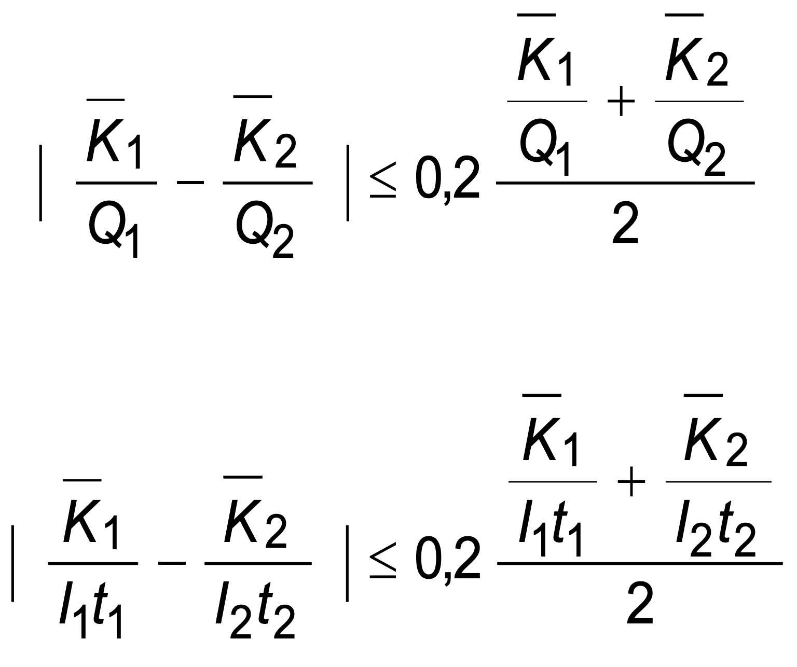
where
K
1
,
K
2
are the averages of the MEASURED VALUES of AIR KERMA;
Q
1
and
Q
2
are the indicated CURRENT TIME PRODUCTS;
I
1
and
I
2
are the indicated X-RAY TUBE CURRENTS;
t
1
and
t
2
are the indicated LOADING TIMES.
Compliance is checked by the following test PROCEDURE:
Make 10 measurements of AIR KERMA in 1 h under the test conditions according to
203.6.3.2.103, at each of the test settings E and F according to Table 203.101.
Calculate the average value of AIR KERMA for the two measurements series. Use these
average values and those for test settings C and D to verify compliance according to the
formula.
Table 203.101 – Tests for verifying reproducibility and linearity
| Test setting |
A |
B |
C |
D |
E |
F |
| X-RAY TUBE VOLTAGE |
Lowest |
Highest |
50 % of highest |
80 % of highest |
50 % of highest |
80 % of highest |
X-RAY TUBE CURRENT or
CURRENT TIME PRODUCTa |
Highest |
Lowest |
Giving
1 µGy to 5 µGyb |
Adjacent to
setting for C and D |
| LOADING TIME |
Between 0,01 s and 0,32 s for all settings |
-
Reproducibility of automatic exposure controls for direct radiography
In the operation of an AUTOMATIC EXPOSURE CONTROL in RADIOGRAPHY to control IRRADIATION
for DIRECT RADIOGRAPHY, the reproducibility shall comply with the following requirements, either:
-
the coefficient of variation of MEASURED VALUES of AIR KERMA shall be not greater than 0.05; or
- the variation of optical density in the resultant RADIOGRAMS shall not exceed
0.10...
Compliance is checked by the following test PROCEDURES:
-
Compliance of coefficient of variation of MEASURED VALUES OF AIR KERMA
– Test conditions:
Use the test conditions according to 203.6.3.2.103... Make 10 measurements of AIR KERMA...
-
Compliance of variation of optical density
See test PROCEDURE in item c).
-
Consistency of automatic exposure controls for direct radiography
In the operation of an AUTOMATIC EXPOSURE CONTROL in RADIOGRAPHY to control IRRADIATION
for DIRECT RADIOGRAPHY, the variation of optical density in the resultant RADIOGRAMS shall not
exceed:
-
0,15 arising from changes of the X-RAY TUBE VOLTAGE, the thickness of the irradiated
object being constant,
-
0,20 arising from changes in the thickness of the irradiated object, the X-RAY TUBE
VOLTAGE being constant,
-
0,20 arising from changes in both the X-RAY TUBE VOLTAGE and the thickness of the
irradiated object.
Compliance is checked by the following test PROCEDURE:
-
Method
Measure the optical density of RADIOGRAMS of PHANTOMS made of water or other
tissue equivalent material, produced with the AUTOMATIC EXPOSURE CONTROL in
operation. Determine the variations of density for different PHANTOM thicknesses and
for different X-RAY TUBE VOLTAGES.
-
Test arrangement
Use a test arrangement with the following characteristics:
-
a FOCAL SPOT TO IMAGE RECEPTOR DISTANCE of 1 m or corresponding to the
INTENDED USE, remaining unchanged for all tests in a series;
-
an 18 cm x 24 cm RADIOGRAPHIC CASSETTE as X-RAY IMAGE RECEPTOR, the same
cassette being used for all tests in a series;
-
an X-RAY SOURCE ASSEMBLY of a type specified for use with the HIGH-VOLTAGE
GENERATOR under test. The X-RAY FIELD is aligned and adjusted to 18 cm x 24 cm
at the ENTRANCE SURFACE of the cassette and remains unchanged for all tests in
a series;
-
provision for mounting the measuring chamber of the AUTOMATIC EXPOSURE
CONTROL in a manner and position corresponding to the INTENDED USE;
-
provision of PHANTOMS of three different thicknesses, 10 cm, 15 cm and 20 cm,
each of a size to cover the cassette fully, the PHANTOM in use for a particular test
being mounted as close as possible to the ENTRANCE SURFACE of the cassette;
-
provision of a focused grid having the appropriate application limits;
-
provision for accurate and reproducible film processing and for measuring the
optical density of the processed films.
-
Radiographic film and intensifying screen
Use a combination of RADIOGRAPHIC FILM and INTENSIFYING SCREEN of a type specified
to be suitable for the INTENDED USE of the AUTOMATIC EXPOSURE CONTROL.
For any one series of tests, select pieces of film from the same batch, for which
consistency of characteristics has been verified.
-
Setting the automatic exposure control
-
Select the central field of the measuring chamber of the AUTOMATIC EXPOSURE
CONTROL.
-
Make any adjustments required in accordance with the instructions for use to
apply the density correction for the type of film-screen combination in use and to
produce a measured optical density in the processed film of 1,1 to 1,3, when
operating at an X-RAY TUBE VOLTAGE of 80 kV, using the 15 cm PHANTOM.
-
Selecting the X-RAY TUBE CURRENT
Except when testing an AUTOMATIC EXPOSURE CONTROL that operates with a fixed
LOADING TIME, select a value of X-RAY TUBE CURRENT that will result in LOADING TIMES
during the tests exceeding three times the shortest specified LOADING TIME but not
exceeding 1 s. Record any selected value.
If no suitable value of X-RAY TUBE CURRENT can be selected, use a different FOCAL
SPOT TO IMAGE RECEPTOR DISTANCE to enable the stated range of LOADING TIMES to be
achieved with the available setting of X-RAY TUBE CURRENT closest to the determined
suitable value.
-
Test LOADINGS
Make eight test LOADINGS, using the combinations of X-RAY TUBE VOLTAGE and
PHANTOM thickness indicated in Table 203.102 and four additional LOADINGS at 80 kV
with 15 cm PHANTOM thickness. Process the films; measure and record the optical
density of each image.
Table 203.102 – LOADINGS for testing automatic exposure controls
| X-RAY TUBE VOLTAGE a |
PHANTOM thicknesses |
| kV |
cm |
| 60 b |
10 and 15 |
| 80 |
15 and 20 |
| 100 |
15 and 20 |
| 120 b |
10 and 15 |
-
Compliance criteria
Compliance is achieved if
-
for the four LOADINGS made with the 15 cm PHANTOM with different X-RAY TUBE
VOLTAGES, no MEASURED VALUE of optical density differs by more than 0,15 from
the mean of the four values and no value differs by more than 0,15 from the value
for an adjacent step of X-RAY TUBE VOLTAGE,
-
for each of the four pairs of LOADINGS made at the same X-RAY TUBE VOLTAGE (with
PHANTOMS of different thickness), no MEASURED VALUE of optical density differs by
more than 0,2 from the other value in the pair,
-
for the whole series of eight LOADINGS, no MEASURED VALUE of optical density
differs by more than 0,2 from the mean of the eight values,
-
for five LOADINGS at constant test parameters, 80 kV with 15 cm PHANTOM
thickness, no MEASURED VALUE of optical density differs by more than 0,1 from the
mean value of the five values.
-
Reproducibility of automatic exposure controls for indirect radiography
In the operation of an AUTOMATIC EXPOSURE CONTROL in RADIOGRAPHY to control IRRADIATION
for INDIRECT RADIOGRAPHY with DIGITAL X-RAY IMAGING DEVICES, the reproducibility shall
comply with one of the following requirements:
-
either the ratio between the highest and the lowest MEASURED VALUES of AIR KERMA shall
be less than 1,2; or
-
with integrated DIGITAL X-RAY IMAGING DEVICES the ratio between the highest and the
lowest mean LINEARIZED DATA on a constant REGION OF INTEREST shall be less than 1,2
for constant X-RAY TUBE VOLTAGE and constant thickness of the irradiated object; or
-
with integrated DIGITAL X-RAY IMAGING DEVICES and if the EXPOSURE INDEX according to
IEC 62494-1:2008 is displayed the ratio between the highest and the lowest EXPOSURE
INDEX in the RELEVANT IMAGE REGION shall be less than 1,2 for constant X-RAY TUBE
VOLTAGE and constant thickness of the irradiated object.
Compliance is checked by the following test PROCEDURES:
-
Compliance of ratio of MEASURED VALUES of AIR KERMA:
-
Test conditions
-
Use the test conditions according to 203.6.3.2.103 with an X-RAY TUBE VOLTAGE
representative of the specified INTENDED USE, or 80 kV if manually adjustable.
-
Make 10 measurements of AIR KERMA in 1 h. Calculate the ratio between the
highest
and the lowest MEASURED VALUES of AIR KERMA.
-
Acquire 10 images per set of conditions. Calculate the ratio between the highest
and
the lowest mean LINEARIZED DATA or EXPOSURE INDEX.
203.6.3.2.103 Conditions for measuring AIR KERMA
203.6.3.2.103.1 Measuring arrangements
Arrange the HIGH-VOLTAGE GENERATOR or subassembly under test in a suitable combination with
an X-RAY SOURCE ASSEMBLY (and, if applicable, with other subassemblies needed to constitute
an X-RAY GENERATOR) specified in the ACCOMPANYING DOCUMENTS of the unit under test as
suitable for this purpose.
Align the X-RAY SOURCE ASSEMBLY, the DIAPHRAGM and the RADIATION DETECTOR under NARROW
BEAM CONDITION.
Arrange the attenuating material needed near the X-RAY SOURCE ASSEMBLY or select the
attenuating material specified in 203.6.3.2.103.2 b). Verify the RADIATION QUALITY according to
203.6.3.2.103.2 a).
203.6.3.2.103.2 ATTENUATION and RADIATION QUALITY for measurement of AIR KERMA
-
Radiation quality
-
Ensure that the RADIATION QUALITY of the X-RAY BEAM emerging from the X-RAY SOURCE
ASSEMBLY complies with applicable specified conditions for NORMAL USE. If no such
conditions are specified, ensure that the TOTAL FILTRATION in the X-RAY SOURCE ASSEMBLY is
such as to comply with the HALF-VALUE LAYER requirements in IEC 60601-1-3:2008, Table 3,
as applicable.
-
Attenuation
To simulate the presence of a PATIENT during the measurement of AIR KERMA, add a layer of
aluminium with a thickness related to the selected X-RAY TUBE VOLTAGE in accordance with
Table 203.103 and of sufficient size to intercept the whole of the X-RAY BEAM.
Table 203.103 – ATTENUATION for the measurement of AIR KERMA
X-RAY TUBE VOLTAGE
up to and including |
Thickness of aluminium |
| kV |
mm |
| 40 |
4 |
| 50 |
10 |
| 60 |
16 |
| 70 |
21 |
| 80 |
26 |
| 90 |
30 |
| 100 |
34 |
| 120 |
40 |
| 150 |
45 |
203.6.3.101 Limitation of the REFERENCE AIR KERMA RATE in RADIOSCOPY
ME EQUIPMENT designed for RADIOSCOPY shall be provided with means for the available
combinations of LOADING FACTORS in RADIOSCOPY to be restricted to correspond, in particular
installations, to any limit on the maximum AIR KERMA RATE that is necessary to comply with local
regulations.
Compliance is checked by inspection and by the appropriate functional tests.
1) Figures in square brackets refer to the bibliography.
203.6.3.102 * High-level control (HLC)
If X-RAY EQUIPMENT specified for RADIOSCOPY include MODES OF OPERATION designed to produce
REFERENCE AIR KERMA RATES greater than 88 mGy/min or than those REFERENCE AIR KERMA RATES
specified in 203.6.3.101, these MODES OF OPERATION, described as high-level controls, shall be
operable only when the OPERATOR provides continuous manual activation. When a high-level
control is provided, a continuous signal audible to the OPERATOR shall indicate that the highlevel
control is being activated. When high-level controls are activated, the X-RAY EQUIPMENT
shall not be operable at any combination of X-RAY TUBE VOLTAGE and X-RAY TUBE CURRENT that
will result in a REFERENCE AIR KERMA RATE in excess of 176 mGy/min.
For the application of this requirement to C-arm X-RAY EQUIPMENT, the REFERENCE AIR KERMA
RATE shall be replaced by the AIR KERMA RATE measured at 30 cm from the ACCESSIBLE SURFACE
of the X-RAY IMAGE RECEPTOR.
NOTE Lower limits can be applicable according to different local regulations.
Compliance is checked by inspection and tests. Tests shall be performed by measurement of
the maximum entrance REFERENCE AIR KERMA RATE at the PATIENT ENTRANCE REFERENCE POINT
for non-C-arm X-RAY EQUIPMENT, and, for C-arm X-RAY EQUIPMENT, at the point specified above.
203.6.4 Indication of operational states
203.6.4.2 Indication of LOADING STATE
Addition: The LOADING STATE shall be indicated by a yellow indicator on the CONTROL PANEL.
Compliance is checked by inspection.
203.6.4.3 Indication of loading factors and modes of operation
203.6.4.3.101 General requirements for the indication of LOADING FACTORS
The units of indication shall be as follows:
- for X-RAY TUBE VOLTAGE, kilovolts;
- for X-RAY TUBE CURRENT, milliamperes;
- for LOADING TIME, seconds and/or milliseconds;
- for CURRENT TIME PRODUCT, milliampereseconds;
-
in RADIOSCOPY, the LOADING TIME may be indicated in minutes and seconds or
decimally in minutes.
If pulse rate or pulse width in pulsed RADIOSCOPY is selectable, then the units of indication shall
be as follows:
- for duration of X-RADIATION pulse, milliseconds;
- for X-RADIATION pulse repetition frequency, number of pulses per second.
Compliance is checked by inspection.
203.6.4.3.102 Shortened indication of LOADING FACTORS
-
For HIGH-VOLTAGE GENERATORS operating with one or more fixed combinations of LOADING
FACTORS the indication on the CONTROL PANEL may be confined to the value of only one of the
significant LOADING FACTORS for each combination, for example the value of X-RAY TUBE
VOLTAGE.
In this case, the indication of the corresponding values of the other LOADING FACTORS in each
combination shall be given in the instructions for use.
In addition, these values shall be listed in a form suitable to be displayed at a prominent
location on or near the CONTROL PANEL.
-
For HIGH-VOLTAGE GENERATORS operating with fixed combinations of semi-permanently
preselectable (such as anatomic programmable) LOADING FACTORS, the indication on the
CONTROL PANEL may be confined to a clear reference to the identity of each combination.
In this case, provisions shall be made to enable
-
the values of each combination of semi-permanently preselected LOADING FACTORS set
at the time of installation to be recorded in the instructions for use, and in addition to
enable
-
the values to be listed in a suitable form to be displayed at a prominent location on or
near the CONTROL PANEL.
Compliance is checked by inspection.
203.6.4.3.103 Indication of varying LOADING FACTORS
For HIGH-VOLTAGE GENERATORS operating with AUTOMATIC INTENSITY CONTROL in RADIOSCOPY,
continuous indication of the LOADING FACTORS that vary shall be given at the CONTROL PANEL.
Compliance is checked by inspection.
203.6.4.3.104 Accuracy of LOADING FACTORS
203.6.4.3.104.1 General aspects for the accuracy of LOADING FACTORS
In HIGH-VOLTAGE GENERATORS the requirements of this subclause apply to the accuracy of all
values of LOADING FACTORS, whether indicated, fixed or preselected when compared with
MEASURED VALUES of the same LOADING FACTOR.
Compliance is checked by inspection and tests.
203.6.4.3.104.2 Accuracy of LOADING FACTORS in automatic control mode
In X-RAY EQUIPMENT with AUTOMATIC CONTROL SYSTEMS when the X-RAY TUBE VOLTAGE or the
X-RAY TUBE CURRENT, or both, is intended to vary during the IRRADIATION, the accuracy of the
intentionally varied LOADING FACTOR required in 203.6.4.3.104.3 and 203.6.4.3.104.4, shall be
disregarded.
203.6.4.3.104.3 Accuracy of X-RAY TUBE VOLTAGE
For operation of a HIGH-VOLTAGE GENERATOR in any specified combination with subassemblies
and components of an X-RAY GENERATOR, the error in the indicated value of the X-RAY TUBE
VOLTAGE, in any combination of LOADING FACTORS, shall be not greater than 8 %.
The increment or decrement of the X-RAY TUBE VOLTAGE between any two indicated settings
shall be within 50 % and 150 % of the indicated change.
Compliance is checked by the following test PROCEDURE, using a test instrument with
appropriate uncertainty:
-
RADIOGRAPHY
-
One measurement shall be made at the lowest indicated value of X-RAY TUBE VOLTAGE, the
highest available X-RAY TUBE CURRENT for that X-RAY TUBE VOLTAGE and the shortest
indicated value of LOADING TIME.
-
One measurement shall be made at the lowest indicated value of X-RAY TUBE VOLTAGE, the
highest available X-RAY TUBE CURRENT for that X-RAY TUBE VOLTAGE and a LOADING TIME of
approximately 0,1 s.
-
One measurement shall be made at the highest indicated value of X-RAY TUBE VOLTAGE and
the highest available X-RAY TUBE CURRENT for that X-RAY TUBE VOLTAGE and a LOADING TIME
of approximately 0,1 s.
-
RADIOSCOPY
-
One measurement shall be made at 90 % of the maximum available X-RAY TUBE VOLTAGE
and any X-RAY TUBE CURRENT.
-
One measurement shall be made at 60 % of the maximum available X-RAY TUBE VOLTAGE
and any X-RAY TUBE CURRENT.
203.6.4.3.104.4 Accuracy of X-RAY TUBE CURRENT
For operation of HIGH-VOLTAGE GENERATORS in any specified combination with subassemblies
and components of an X-RAY GENERATOR, the error in the indicated value of the X-RAY TUBE
CURRENT, in any combination of LOADING FACTORS, shall be not greater than 20 %.
Compliance is checked by the following test PROCEDURE:
-
RADIOGRAPHY
-
One measurement shall be made at the lowest indicated value of X-RAY TUBE CURRENT, the
highest indicated value of X-RAY TUBE VOLTAGE and the shortest indicated value of LOADING
TIME.
-
One measurement shall be made at the lowest indicated value of X-RAY TUBE CURRENT, the
highest indicated value of X-RAY TUBE VOLTAGE and a LOADING TIME of approximately 0,1 s.
-
One measurement shall be made at the highest indicated value of X-RAY TUBE CURRENT, the
highest available X-RAY TUBE VOLTAGE for the tested X-RAY TUBE CURRENT and a LOADING
TIME of approximately 0,1 s.
-
RADIOSCOPY
-
One measurement shall be made at 20 % of the maximum available X-RAY TUBE CURRENT
and the lowest available X-RAY TUBE VOLTAGE.
-
One measurement shall be made at 20 % of the maximum available X-RAY TUBE CURRENT
and the highest available X-RAY TUBE VOLTAGE.
203.6.4.3.104.5 Accuracy of LOADING TIME
For operation of HIGH-VOLTAGE GENERATORS in any specified combination with subassemblies
and components of an X-RAY GENERATOR, the error in the indicated value of the X-RAY TUBE
LOADING TIME, in any combination of LOADING FACTORS, shall be not greater than
± (10 % + 1 ms).
Compliance is checked by the following test PROCEDURE:
-
One measurement shall be made at the lowest indicated value of LOADING TIME, the highest
indicated value of X-RAY TUBE VOLTAGE and any indicated value of X-RAY TUBE CURRENT.
-
made at the lowest indicated value of LOADING TIME and the highest
available electric power, P.
203.6.4.3.104.6 Accuracy of CURRENT TIME PRODUCT
For operation of HIGH-VOLTAGE GENERATORS in any specified combination with subassemblies
and components of an X-RAY GENERATOR, the error in the indicated value of the X-RAY TUBE
CURRENT TIME PRODUCT, in any combination, shall be not greater than ± (10 % + 0,2 mAs).
This requirement also applies in cases when the CURRENT TIME PRODUCT is derived by
calculation.
Compliance is checked by the following test PROCEDURE:
One measurement shall be made at the lowest INDICATED VALUE of CURRENT TIME PRODUCT and
the highest available X-RAY TUBE VOLTAGE.
One measurement shall be made at the highest INDICATED VALUE of CURRENT TIME PRODUCT and
the lowest available X-RAY TUBE VOLTAGE.
203.6.4.3.105 Indication of ADDED FILTERS
If the X-RAY EQUIPMENT has provisions to select ADDED FILTERS by remote control or through an
automatic system, the selected ADDED FILTER shall be indicated to the OPERATOR at a location
appropriate for the INTENDED USE. If the FILTER change is automatic, it may be displayed after
the termination of IRRADIATION.
Compliance is checked by inspection and functional tests.
203.6.4.3.106 * Electronic documentation of EXAMINATION PROTOCOLS
X-RAY EQUIPMENT that includes EXAMINATION PROTOCOL SELECTION CONTROL should provide
access to the electronic documentation of those parameters invoked by each available
PRE-PROGRAMMED EXAMINATION PROTOCOL in a defined format file (e.g., xml format, comma-separated format,
space-separated format) and export to an output device. This electronic
documentation should include the selected settings for each adjustable or selectable parameter
in each PRE-PROGRAMMED EXAMINATION PROTOCOL.
Data elements incorporated in the electronic documentation should also include the date of
configuration of the set of PRE-PROGRAMMED EXAMINATION PROTOCOLS.
If access to modify the PRE-PROGRAMMED EXAMINATION PROTOCOLS is provided, means shall be
provided to track the date of the last change, and means shall be provided to enter an identifier
for the agent responsible for the change.
X-RAY EQUIPMENT that provides electronic documentation of EXAMINATION PROTOCOLS shall
provide either:
- access to a media output device; or
- access to a networked output device to transmit the electronic documentation
through.
NOTE: Additional equipment can be applicable (e.g., PC, CD/DVD drive, approved USB device, laptop
wired by Ethernet connection, etc.) to enable export.
If a PRE-PROGRAMMED EXAMINATION PROTOCOL contains adjustable or selectable parameters, the
MANUFACTURER’S default value of each such parameter shall be provided.
Means should be recommended or provided to allow flagging differences between two or more
PRE-PROGRAMMED EXAMINATION PROTOCOLS to assist in the local review and clinical audit
process.
The means may be external to the X-RAY EQUIPMENT and, if so, it does not need to be considered
a medical device.
Compliance is checked by inspection and appropriate functional tests.
203.6.4.5 * Dosimetric indications
Addition:
The ACCOMPANYING DOCUMENTS shall provide information on the performance of the dosimetric
indications and describe the operations required to maintain this performance within the
specification.
Means shall be provided to reset to zero the values of all the cumulative dosimetric indications
prior to the commencement of a new examination or PROCEDURE.
X-RAY EQUIPMENT specified for either RADIOSCOPY or RADIOSCOPY and RADIOGRAPHY shall satisfy
the following requirements:
-
The value of the REFERENCE AIR KERMA RATE shall be displayed during RADIOSCOPY in
mGy/min together with this unit. This value shall be continuously displayed at the
working position of the OPERATOR during the actuation of the IRRADIATION SWITCH and
updated at least once every second.
-
The value of the cumulative REFERENCE AIR KERMA resulting from RADIOSCOPY and
RADIOGRAPHY since the last reset operation shall be
-
continuously displayed at the working position of the OPERATOR in mGy together with
this unit and updated at least once every 5 s; or
-
displayed not later than 5 s after the interruption or termination of LOADING.
-
The values for the REFERENCE AIR KERMA RATE and the cumulative REFERENCE AIR KERMA
shall be clearly distinguishable from each other.
-
The REFERENCE AIR KERMA RATE and the cumulative REFERENCE AIR KERMA shall not
deviate from their respective displayed values by more than ± 35 % over the range of
6 mGy/min and 100 mGy to the maximum values.
-
The displayed values of REFERENCE AIR KERMA RATE and cumulative REFERENCE AIR
KERMA may be measured or calculated.
X-RAY EQUIPMENT specified for INDIRECT RADIOSCOPY and/or SERIAL RADIOGRAPHY shall be
provided with an indication of the cumulative DOSE AREA PRODUCT resulting from RADIOGRAPHY
and, when applicable, from RADIOSCOPY since the last reset operation. The DOSE AREA PRODUCT
may be measured or calculated. The value shall be expressed in Gy·m2 with appropriate SI
prefixes. The overall uncertainty in the displayed values of the cumulative DOSE AREA PRODUCT
above 5 μGy·m2 shall not exceed 35 %.
This DOSE AREA PRODUCT indication need not be provided at the working position of the
OPERATOR.
X-RAY EQUIPMENT specified for INDIRECT RADIOGRAPHY
shall be provided with an indication of the DOSE AREA PRODUCT for each exposure.
The DOSE AREA PRODUCT may be measured or calculated.
DOSE AREA PRODUCT METERS
If part of the X-RAY EQUIPMENT, shall comply with IEC 60580:2019.
X-RAY EQUIPMENT specified for DIRECT RADIOGRAPHY
should satisfy the same requirement as specified above for INDIRECT RADIOGRAPHY.
Alternatively, the following minimal requirements may be met:
-
The value of the REFERENCE AIR KERMA resulting from the last radiographic IRRADIATION
shall be displayed in mGy together with this unit, until initiation of the next radiographic
IRRADIATION.
-
Means shall be provided allowing the determination of the area of the X-RAY FIELD in the
plane normal to the X-RAY BEAM AXIS containing the PATIENT ENTRANCE REFERENCE POINT,
based on the available information concerning the extent of the X-RAY BEAM. The maximum
deviation between the value determined using these means and the actual value shall be
less than 40 % of the actual value for areas larger than 200 cm².
NOTE Examples of such means are tables, nomograms, programmable calculators or computers
together with the
relevant program.
Compliance is checked by inspection and by the appropriate functional tests. The tests for the
REFERENCE AIR KERMA RATE and the cumulative REFERENCE AIR KERMA shall be performed with a
LOADING STATE of duration longer than 3 s.
Additional subclauses:
203.6.4.101 Indication of READY STATE
Visible indication shall be provided indicating the state when one further actuation of a control will
initiate the LOADING of the X-RAY TUBE in RADIOGRAPHY.
If this state is indicated in RADIOGRAPHY by means of a single function visual indicator, the colour
green shall be used.
In RADIOGRAPHY, means should be provided for a connection to enable this state to be indicated remotely
from the CONTROL PANEL.
This requirement does not apply for MOBILE X-RAY EQUIPMENT.
Compliance is checked by inspection.
203.6.5 AUTOMATIC CONTROL SYSTEM
Addition: X-RAY EQUIPMENT specified for INDIRECT RADIOGRAPHY shall be provided with AUTOMATIC EXPOSURE
CONTROL unless the MANUFACTURER provides justifications for exemptions in the RISK MANAGEMENT FILE.
NOTE Justifications for exemptions can be motivated by technical reasons (e.g., MOBILE systems).
X-RAY EQUIPMENT specified for INDIRECT RADIOSCOPY shall be provided with AUTOMATIC INTENSITY CONTROL.
It shall be possible to limit the maximum REFERENCE AIR KERMA RATE to values given by local rules.
For X-RAY EQUIPMENT specified for INDIRECT RADIOSCOPY in which AUTOMATIC CONTROL SYSTEMS vary one or
more
LOADING FACTORS, information about the range and interrelation of these LOADING FACTORS shall be given
in the instructions for use.
For X-RAY EQUIPMENT provided with AUTOMATIC EXPOSURE CONTROL, a method by which the OPERATOR can verify
the functioning of these controls shall be provided and the instructions for use shall contain the
description of that method.
For X-RAY EQUIPMENT provided with AUTOMATIC INTENSITY CONTROL, a QUALITY CONTROL mode shall be provided
that enables selection of values, either by a manual control mode or by selecting preset combination
values, of X-RAY TUBE VOLTAGE, X-RAY TUBE CURRENT or X-RAY CURRENT TIME PRODUCT, LOADING TIME,
ADDITIONAL FILTRATION if any and FOCAL SPOT size if selectable.
Compliance is checked by inspection and by the appropriate functional tests.
203.6.5.101 Determination of the NOMINAL SHORTEST IRRADIATION TIME
For X-RAY EQUIPMENT provided with AUTOMATIC EXPOSURE CONTROL the NOMINAL SHORTEST IRRADIATION TIME as
defined in 203.4.101.4 shall be stated in the instructions for use.
The MEASURED VALUE shall not be greater than the stated value.
Compliance is checked by inspection of the instructions for use and the following test PROCEDURE:
Make an IRRADIATION using the AUTOMATIC EXPOSURE CONTROL with > 70 % of the available generator power
at approximately 80 kV.
To determine the average AIR KERMA, adjust the ATTENUATION in the X-RAY BEAM (preferably by using a
water
PHANTOM) to achieve a LOADING TIME close to 0,1 s.
Make several IRRADIATIONS with reduced PHANTOM thicknesses using the same X-RAY TUBE VOLTAGE and
generator power as mentioned above.
The PHANTOM thickness shall be varied in such a way that the LOADING TIME does not vary more than a
factor of two between two IRRADIATIONS.
203.6.6 SCATTERED RADIATION reduction
Replacement: Means shall be provided to reduce the influence of RADIATION scattered in the PATIENT to
the
X-RAY IMAGE RECEPTOR in case of significant influence on the image quality.
If such means are ANTI-SCATTER GRIDS which are removable by the OPERATOR, or that can be moved in or out
under manual or automatic control by a motorized mechanism, the presence or absence of the ANTI-SCATTER
GRID shall be clearly visible or indicated.
If the ANTI-SCATTER GRID is removable, it shall be possible to remove and replace it without the use of
TOOLS.
Means shall be provided for using X-RAY EQUIPMENT specified for paediatric applications without an
ANTI-SCATTER GRID.
If different ANTI-SCATTER GRIDS can be used, it shall be possible for the OPERATOR to identify the grid
in
place.
The proper use of such means shall be described in the instructions for use.
Compliance is checked by inspection.
203.6.7 Imaging performance
Additional subclause:
203.6.7.101 Display of last image hold radiogram or radioscopy replay image sequence
X-RAY EQUIPMENT specified for INDIRECT RADIOSCOPY shall display either a LIH RADIOGRAM or a RADIOSCOPY
REPLAY
IMAGE SEQUENCE following termination of the radioscopic IRRADIATION, and shall comply with the
following.
-
The LIH RADIOGRAM or RADIOSCOPY REPLAY IMAGE SEQUENCE shall be displayed following termination of
the
radioscopic IRRADIATION and shall remain visible until an action is taken by the OPERATOR.
- Means shall be provided to clearly indicate to the OPERATOR whether a displayed image is:
- an LIH RADIOGRAM or RADIOSCOPY REPLAY IMAGE SEQUENCE, or
- from ongoing RADIOSCOPY.
-
DISPLAY of the LIH RADIOGRAM or the RADIOSCOPY REPLAY IMAGE SEQUENCE shall be replaced by the
RADIOSCOPY
image concurrently with reinitiation of radioscopic IRRADIATION, unless a separate DISPLAY is
provided
for the RADIOSCOPY images.
-
For a LIH RADIOGRAM obtained by retaining pre-termination RADIOSCOPY images, if the number of images
and
method of combining images are selectable by the OPERATOR, the selection shall be indicated prior to
initiation of the radioscopic IRRADIATION.
Compliance is checked by inspection and functional tests.
203.7 RADIATION QUALITY
203.7.1 HALF-VALUE LAYERS and TOTAL FILTRATION in X-RAY EQUIPMENT
Addition:
X-RAY EQUIPMENT specified for paediatric applications shall be provided with means for placing an ADDED
FILTER of not less than 0,1 mm Cu or 3,5 mm Al.
NOTE: An appropriate permanently mounted FILTER, not removable by the OPERATOR, satisfies the above
requirement.
Compliance is checked by inspection, by examination of the ACCOMPANYING DOCUMENTS and by the use, as
appropriate, of the test described in 7.5 of IEC 60601-1-3:2008.
Additional subclause:
203.7.1.101 Filtration in X-ray source assemblies
Addition:
X-RAY SOURCE ASSEMBLIES shall comply with the following requirements
-
unless solely intended for use in
MOBILE X-RAY EQUIPMENT specified for RADIOSCOPY or for RADIOGRAPHY and RADIOSCOPY during
surgery,
X-RAY
SOURCE ASSEMBLIES shall be provided with means to mount, to dismount, or to select one or more
ADDED
FILTERS, without the use of TOOLS. Any such selectable ADDED FILTERS shall comply with the
following
requirements:
- they shall be identifiable when in position for the INTENDED USE;
-
if a selectable ADDED FILTER is necessary to attain the requirements for TOTAL
FILTRATION in X-RAY EQUIPMENT, given in 7.1 of IEC 60601-1-3:2008, means shall be provided
to enable
the presence of the appropriate selectable ADDED FILTER to be detected by the control system
of an
associated HIGH-VOLTAGE GENERATOR and LOADING prevented if the necessary ADDED FILTER is not
detected;
-
the ACCOMPANYING DOCUMENTS shall include, in the ASSEMBLING INSTRUCTIONS
given
for particular applications, instructions for attaining the TOTAL FILTRATION required to
comply with
7.1 of IEC 60601-1-3:2008 in respect of the items of X-RAY EQUIPMENT concerned.
Compliance is checked by inspection, by examination of the ACCOMPANYING DOCUMENTS and by the use, as
appropriate, of the test described in 7.6 of IEC 60601-1-3:2008.
203.8 Limitation of the extent of the X-RAY BEAM and relationship between X-RAY FIELD
and IMAGE RECEPTION AREA
203.8.4 Confinement of EXTRA-FOCAL RADIATION
Addition:
X-RAY SOURCE ASSEMBLIES shall be so constructed that the zone of intersection of all straight lines that
pass through all RADIATION APERTURES of the X-RAY SOURCE ASSEMBLY, with a plane normal to the REFERENCE
AXIS at 1 m from the FOCAL SPOT shall not extend more than 15 cm outside the boundary of the largest
selectable X-RAY FIELD.
Compliance is checked by examination of the design documentation. In Figure 203.101, w1 represents the
width of the largest selectable X-RAY FIELD in a plane P, which is perpendicular to the REFERENCE AXIS
at 1 m from the FOCAL SPOT. The zone of intersection with plane P of all straight lines passing through
all RADIATION APERTURES extends beyond w1 by the distance w2. The shaded portion of this zone is a
region where EXTRA-FOCAL RADIATION can extend beyond the largest X-RAY FIELD. Compliance is achieved if
w2 does not exceed 15 cm.
203.8.5 Relationship between X-RAY FIELD and IMAGE RECEPTION AREA
203.8.5.3 Correspondence between X-ray field and effective image reception area
Addition:
Means shall be provided to enable the X-RAY FIELD to be positioned to cover the REGION OF INTEREST and,
where applicable, the SENSITIVE VOLUMES of the AUTOMATIC EXPOSURE CONTROL or AUTOMATIC INTENSITY
CONTROL.
If the X-RAY FIELD is adjusted in the INTENDED USE for full coverage of the IMAGE RECEPTION AREA, it
shall correspond to the IMAGE RECEPTION AREA within the following limits, as applicable:
203.8.5 Relationship between X-RAY FIELD and IMAGE RECEPTION AREA
203.8.5.3 Correspondence between X-ray field and effective image reception area
Addition:
Means shall be provided to enable the X-RAY FIELD to be positioned to cover the REGION OF INTEREST and,
where applicable, the SENSITIVE VOLUMES of the AUTOMATIC EXPOSURE CONTROL or AUTOMATIC INTENSITY
CONTROL.
If the X-RAY FIELD is adjusted in the INTENDED USE for full coverage of the IMAGE RECEPTION AREA, it
shall correspond to the IMAGE RECEPTION AREA within the following limits, as applicable:
-
In X-RAY EQUIPMENT specified for RADIOSCOPY during surgery at a FIXED FOCAL SPOT
TO IMAGE RECEPTOR DISTANCE, in which
- there is provision for RADIOGRAPHY using a RADIOGRAPHIC CASSETTE
holder, with beam limitation to a circular X-RAY FIELD for use on a rectangular IMAGE
RECEPTION AREA;
- the orientation of the IMAGE RECEPTION AREA is selectable;
- the maximum diameter of the X-RAY FIELD does not exceed 40 cm,
the diameter of the X-RAY FIELD may exceed the diagonal dimension of the IMAGE RECEPTION AREA by
an
amount not exceeding 2 cm. If the RADIOGRAPHIC CASSETTE holder can extend beyond the edges of
the
PRIMARY PROTECTIVE SHIELDING, a warning of this fact shall be stated in the instructions for
use.
-
In cases where the X-RAY FIELD does not correspond to the IMAGE RECEPTION AREA
in accordance with one of the categories above, the following requirements apply:
- along each of the two major axes of the IMAGE RECEPTION AREA, the total
of the discrepancies between the edges of the X-RAY FIELD and the corresponding edges of the
IMAGE RECEPTION AREA shall not exceed 3 % of the indicated FOCAL SPOT TO IMAGE RECEPTOR
DISTANCE when the IMAGE RECEPTION PLANE is normal to the X-RAY BEAM AXIS;
-
the sum of the discrepancies on both axes shall not exceed 4 % of the
indicated FOCAL SPOT TO IMAGE RECEPTOR DISTANCE.
NOTE: If a secondary BEAM LIMITING DEVICE is used between PATIENT and X-RAY IMAGE RECEPTOR, this
requirement refers to the percentage of the RADIATION reaching the IMAGE RECEPTION AREA relative to the
RADIATION in front of the secondary BEAM LIMITING DEVICE.
Compliance is checked with the relevant requirements above, by inspection of the ME EQUIPMENT, by
examination of the instructions for use and by measurement of the X-RAY FIELDS, where appropriate. When
automatic adjustment of the RADIATION APERTURE is provided, allow a period of at least 5 s before
measurements are made, for the automatic mechanism to complete any adjustment occurring during the
tests.
When determining compliance with the requirements at a) and b) of the last scenario above, make the
measurements with the REFERENCE AXIS normal to the IMAGE RECEPTION PLANE within three degrees.
As shown in Figure 203.102, the measured discrepancies in the IMAGE RECEPTION PLANE are
represented by c1 and c2 on one axis and by d1 and d2 on the other. If the FOCAL SPOT TO IMAGE RECEPTOR
DISTANCE is S, then for compliance, the following relationships are true:
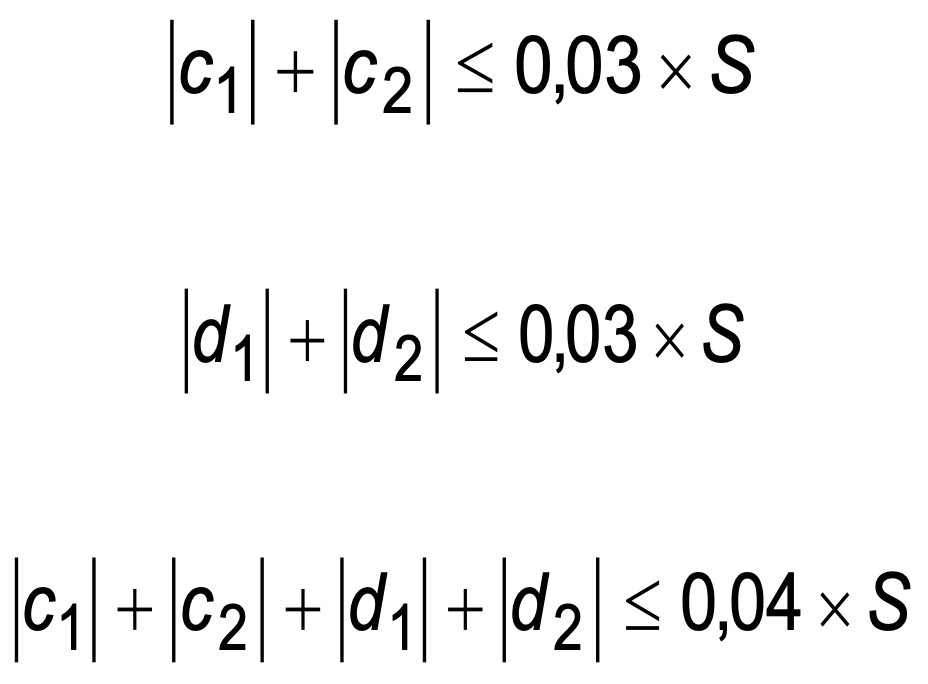
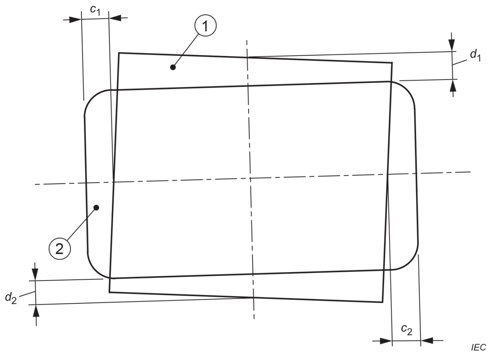
1 X-ray-field
2 IMAGE RECEPTION AREA
Figure 203.102 – Discrepancies in covering the IMAGE RECEPTION AREA
203.8.5.4 Positioning of the PATIENT and restriction of the irradiated area
Addition:
X-RAY EQUIPMENT shall be designed in a way that the OPERATOR is able to select an X-RAY BEAM of the
extent required for the applications concerned and for limiting the maximum available extent of the
X-RAY BEAM to values that are consistent with the specified applications to avoid unnecessary RADIATION
doses to the PATIENT and the staff.
Additional subclauses:
203.8.101 Boundary and dimensions of the X-RAY FIELD
The boundary of an X-RAY FIELD is described by the locus of points at which the AIR KERMA RATE is 25
% of the mean of the AIR KERMA RATES at the approximate centres of the quarters of the area
enclosed.
The dimensions of a rectangular X-RAY FIELD are described in terms of the lengths of its intercepts
on each of two orthogonal major axes in the plane of interest. Given that the X-RAY BEAM AXIS
coincides with the REFERENCE AXIS, it is assumed that the plane of interest is orthogonal to the
REFERENCE AXIS; also that the major axes intersect on the REFERENCE AXIS and are oriented so that
one axis is collinear with the projection of the longitudinal axis of the X-RAY TUBE ASSEMBLY lying
in the plane and passing through this point of intersection.
If the X-RAY BEAM AXIS does not coincide with the REFERENCE AXIS, according to 203.8.104 this has to
shall be stated in the instructions for use.
For circular X-RAY FIELDS the dimensions are described accordingly by replacing the lengths of the
intercepts with the diameter.
203.8.102 Methods of beam limitation in X-RAY EQUIPMENT
203.8.102.1 General
In X-RAY EQUIPMENT there shall be means to limit the extent of the X-RAY BEAM before impinging on the
PATIENT SURFACE, as applicable:
Where automatic adjustment is provided, the instructions for use shall contain details of a method by
which its operation can be checked and shall describe the method by which the size of the X-RAY FIELD
can be reduced, as required in item c) above.
Compliance is checked by inspection and functional test and by examination of the instructions for use.
203.8.102.2 Indication on the X-RAY EQUIPMENT
Except as stated in item a) to item c) below, information concerning the extent of the X-RAY BEAM shall
be indicated by DISPLAY on the X-RAY EQUIPMENT.
Indications on the X-RAY EQUIPMENT shall give the following information numerically or by means of
graphical markings or symbols:
-
if numerical markings are used, they shall show the lengths and widths of the
available X-RAY FIELDS at one or more typical values of the FOCAL SPOT TO IMAGE RECEPTOR DISTANCE.
Information shall also be included (and can, e.g., be in tabular form) concerning the variation
of the dimensions of X-RAY FIELDS with respect to other relevant FOCAL SPOT TO IMAGE RECEPTOR
DISTANCES;
-
if the indication is given by graphical markings or symbols, these shall show on
an appropriate surface (which can, e.g., be the ENTRANCE SURFACE of a device containing the
X-RAY IMAGE RECEPTOR), how the resultant X-RAY FIELDS are related to the FOCAL SPOT TO IMAGE
RECEPTOR DISTANCES and the selectable combinations or settings of BEAM LIMITING DEVICES. If the
markings do not show explicitly the extent or dimensions of the X-RAY FIELDS to be obtained, this
information shall be given with an explanation of the markings in the instructions for use.
Indication by DISPLAY on the X-RAY EQUIPMENT need not be given in the following cases:
-
X-RAY EQUIPMENT so constructed that the X-RAY FIELDS at the distances of interest are obtained,
prior to LOADING, without selection by the OPERATOR;
-
X-RAY EQUIPMENT constructed with an INTERLOCK that prevents LOADING unless an X-RAY FIELD of
appropriate extent has been selected;
-
for modes of operation of X-RAY EQUIPMENT in which the boundaries of the X-RAY FIELD can be
displayed in RADIOSCOPY.
X-RAY EQUIPMENT specified for RADIOSCOPY should provide a graphical representation of the boundaries of
the X-RAY FIELD on the image DISPLAY while the BEAM LIMITING DEVICE is adjusted when no IRRADIATION
SWITCH is actuated. This representation shall be:
- provided at the working position of the OPERATOR, and
- updated during BEAM LIMITING DEVICE adjustment.
Compliance is checked by inspection of the X-RAY EQUIPMENT and by examination of the ACCOMPANYING
DOCUMENTS.
203.8.102.3 Indication in the instructions for use
The instructions for use shall contain the information necessary to enable the OPERATOR to determine,
prior to LOADING, the extent of all X-RAY FIELDS for the INTENDED USE, in terms of their dimensions at
appropriate FOCAL SPOT TO IMAGE RECEPTOR DISTANCES for the available selections, combinations and
settings of the BEAM LIMITING DEVICES.
Compliance is checked by inspection of the X-RAY EQUIPMENT and by examination of the instructions for
use.
203.8.102.4 Accuracy of marked and written indications
Unless exempted below, the size of the X-RAY FIELD given by markings on the X-RAY EQUIPMENT or by
statements in the instructions for use in accordance with 203.8.102.2 and 203.8.102.3 shall not differ
from the size of the X-RAY FIELD, measured along each of its two major axes in the plane to which the
indication relates, by more than 2 % of the distance of that plane from the FOCAL SPOT.
This requirement is not applicable for X-RAY EQUIPMENT in which the whole area of the RADIOGRAM is not
irradiated simultaneously.
Compliance is checked by inspection of design data and by examination of the ACCOMPANYING DOCUMENTS.
Where appropriate, measure the dimensions of the X-RAY FIELD along its two major axes, at selected
indicated settings of the BEAM LIMITING SYSTEM and of the FOCAL SPOT TO IMAGE RECEPTOR DISTANCE, as
available for the INTENDED USE. For the purpose of calculation, assume the FOCAL SPOT TO IMAGE RECEPTOR
DISTANCE to be equal to the value indicated on the X-RAY EQUIPMENT or stated in the ACCOMPANYING
DOCUMENTS, for the setting used.
203.8.102.5 Indication by LIGHT FIELD-INDICATOR
In X-RAY EQUIPMENT specified for RADIOGRAPHY, a LIGHT FIELD-INDICATOR shall be provided where
appropriate, to assist in delineating the position of the X-RAY FIELD on the PATIENT SURFACE.
Compliance is checked by inspection of the X-RAY EQUIPMENT.
If a LIGHT FIELD-INDICATOR is provided, it shall delineate the edges of the X-RAY FIELD and it shall
provide an average illumination of not less than 100 lx in a plane normal to the X-RAY BEAM AXIS at a
distance of 1 m from the FOCAL SPOT.
At this distance, the contrast at the edge of the LIGHT FIELD as defined below shall have a value of not
less than 3 in MOBILE X-RAY EQUIPMENT and not less than 4 in other X-RAY EQUIPMENT.
The edge of a LIGHT FIELD is described by the locus of points at which the illumination is 25 % of the
maximum illumination.
The description of a method to check the dimensions of the LIGHT FIELD at the appropriate distance from
the FOCAL SPOT shall be included in the ACCOMPANYING DOCUMENTS.
Compliance is checked by examination of the ACCOMPANYING DOCUMENTS and by the following test:
-
check that light-attenuating components as specified by the MANUFACTURER, e.g. the
IONIZATION CHAMBER of a DOSE AREA PRODUCT meter, are in place.
-
if the whole area of the indicated field is illuminated, determine the average
illumination as the mean value from measurements in the approximate centre of each quarter of the
LIGHT FIELD;
-
in all other cases, determine the average illumination from at least four
measurements at different points in the centres of the illuminated areas;
-
measure the contrast, using a measuring aperture not larger than 1 mm. Take the
contrast as l1/l2, where l1 is the illumination 3 mm from the edge of the LIGHT FIELD towards the
centre of the field and l2 is the illumination 3 mm from the edge of the LIGHT FIELD away from the
centre of the field;
- correct the MEASURED VALUES for ambient illumination.
203.8.102.6 Accuracy of indication with a LIGHT FIELD-INDICATOR
Along each of the two major axes of the X-RAY FIELD in the plane of the LIGHT FIELD, the total of the
discrepancies between the edges of the X-RAY FIELD and the corresponding edges of the LIGHT FIELD shall
not exceed 2 % of the distance of the measurement plane of the LIGHT FIELD from the FOCAL SPOT.
Compliance is checked by measurement, on the two major axes of the X-RAY FIELD, of the discrepancies
between corresponding edges of the X-RAY FIELD and the LIGHT FIELD, in selected planes at measured
distances from the FOCAL SPOT, within the range of NORMAL USE, and normal to the X-RAY BEAM AXIS within
three degrees.
Referring to Figure 203.103, the measured discrepancies are represented by a1 and a2 on one axis and by
b1 and b2 on the other. If the distance from the FOCAL SPOT to the measurement plane of the LIGHT FIELD
is S, then, for compliance, the following relationships are true:
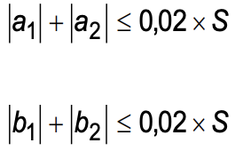

1 Visually defined field
2 X-RAY FIELD
Figure 203.103 – Discrepancies in visual indication of the X-RAY FIELD
203.8.103 Interception of the X-RAY BEAM in RADIOSCOPY
LOADING in RADIOSCOPY shall be prevented unless the X-RAY BEAM AXIS is in the position at which the
correspondence of the X-RAY FIELD to the EFFECTIVE IMAGE RECEPTION AREA is specified to be in compliance
with 203.8.5.3.
LOADING in RADIOSCOPY shall also be prevented if the BEAM LIMITING SYSTEM is adjusted so that, at the
currently selected FOCAL SPOT TO IMAGE RECEPTOR DISTANCE, the X-RAY FIELD can extend outside the IMAGE
RECEPTION AREA by more than the amount permitted by 203.8.5.3.
For X-RAY EQUIPMENT with an adjustable BEAM LIMITING DEVICE, means shall be provided to configure the
boundaries of the X-RAY FIELD so that these boundaries are visible with the X-RAY BEAM AXIS in a
specified orientation. This orientation shall be described in the instructions for use.
The means can be made available to the RESPONSIBLE ORGANISATION.
NOTE This configuration enables boundaries of the BEAM LIMITING DEVICE to be seen on the image DISPLAY
with the X-RAY FIELD at its maximum size for each magnification mode.
Compliance is checked by inspection, functional test and by examination of the ACCOMPANYING DOCUMENTS.
203.8.104 Positioning of the X-RAY BEAM AXIS
The positioning of the X-RAY BEAM AXIS shall be indicated as follows:
Compliance is checked by inspection, functional test and by examination of the ACCOMPANYING DOCUMENTS.
203.9 FOCAL SPOT TO SKIN DISTANCE
203.9.1 General
Addition:
Means shall be provided to prevent IRRADIATION with FOCAL SPOT TO SKIN DISTANCES less than those
specified in 203.9.101 and 203.9.102 for the INTENDED USE.
NOTE Means can include hardware, software, construction, or some other method.
Additional subclauses:
203.9.101 X-RAY EQUIPMENT specified for RADIOSCOPY
FIXED X-RAY EQUIPMENT specified for RADIOSCOPY should be provided with means to prevent the use, during
radioscopic IRRADIATION, of FOCAL SPOT TO SKIN DISTANCES less than 38 cm.
The FOCAL SPOT TO SKIN DISTANCE shall not be less than 30 cm.
The MOBILE X-RAY EQUIPMENT specified for RADIOSCOPY shall be provided with means to prevent the use,
during radioscopic IRRADIATION, of FOCAL SPOT TO SKIN DISTANCES less than:
- 20 cm if the X-RAY EQUIPMENT is specified for RADIOSCOPY during surgery; or
- 30 cm for other specified applications.
Compliance is checked by inspection and measurement.
203.9.102 X-RAY EQUIPMENT specified for RADIOGRAPHY
X-RAY EQUIPMENT specified for RADIOGRAPHY:
203.10 ATTENUATION of the X-RAY BEAM between the PATIENT and the X-RAY IMAGE RECEPTOR
203.10.1 General
Addition:
The ATTENUATION EQUIVALENT of the items listed in Table 203.104, when forming part of X-RAY EQUIPMENT
and located in the path of the X-RAY BEAM between the PATIENT and the X-RAY IMAGE RECEPTOR, shall not
exceed the applicable maximum values given in the table.
Compliance is checked by the test described in 203.10.101.
Table 203.104 – ATTENUATION EQUIVALENT of items in the X-RAY BEAM
| Item |
Maximum
ATTENUATION EQUIVALENT
mm Al |
| Total of all layers composing the front panel of cassette holder |
1,2 |
| Total of all layers composing the front panel of FILM CHANGER |
1,2 |
| Total of all layers, excluding detector itself, composing the front panel of DIGITAL X-RAY
IMAGING DEVICE |
1,2 |
| Cradle |
2,3 |
| PATIENT SUPPORT, stationary, without articulated joints |
1,2 |
| PATIENT SUPPORT, movable, without articulated joints (including stationary layers) |
1,7 |
| PATIENT SUPPORT, with radiolucent panel having one articulated joint |
1,7 |
| PATIENT SUPPORT, with radiolucent panel having two or more articulated joints |
2,3 |
| PATIENT SUPPORT, cantilevered |
2,3 |
|
NOTE 1 Devices such as RADIATION DETECTORS are not included in the
items listed in this table.
NOTE 2 Requirements concerning the ATTENUATION properties of
RADIOGRAPHIC CASSETTES and of INTENSIFYING SCREENS are given in ISO 4090 [3], for
ANTI-SCATTER GRIDS in IEC 60627[1].
NOTE 3 ATTENUATION caused by table mattresses and similar
accessories is not included in the maximum ATTENUATION EQUIVALENT for PATIENT SUPPORT.
NOTE 4 Maximum ATTENUATION EQUIVALENT mm Al is only applied to the
corresponding item. If several items given in this table are located in the path of the
X-RAY BEAM between the PATIENT and the X-RAY IMAGE RECEPTOR, each corresponding maximum
ATTENUATION EQUIVALENT mm Al is separately applied to each item.
|
203.10.2 Information in the ACCOMPANYING DOCUMENTS
Addition:
The ACCOMPANYING DOCUMENTS shall state the maximum value of the ATTENUATION EQUIVALENT
for each of the items listed in Table 203.104 and forming part of the X-RAY EQUIPMENT concerned
for the measurement conditions specified in 203.10.101.
For diagnostic X-RAY EQUIPMENT specified to be used in combination with ACCESSORIES or other
items not forming part of the same or another diagnostic X-RAY EQUIPMENT, the instructions for
use shall include a statement drawing attention to the possible adverse effects arising from
materials located in the X-RAY BEAM (e.g., parts of an operating table).
Compliance is checked by examination of the ACCOMPANYING DOCUMENTS.
Additional subclause:
203.10.101 Test for ATTENUATION EQUIVALENT
Using an X-RAY BEAM with an X-RAY TUBE VOLTAGE of 100 kV, a PERCENTAGE RIPPLE not
exceeding 10 %, and a first HALF-VALUE LAYER of 3,6 mm Al determine the ATTENUATION
EQUIVALENT as the thickness of aluminium that gives the same degree of ATTENUATION as the
material under consideration, from measurements of AIR KERMA under NARROW BEAM CONDITIONS.
203.11 Protection against RESIDUAL RADIATION
203.11.101 Requirements
For the appropriate application category, as indicated in Table 203.105, X-RAY EQUIPMENT shall
be provided with PRIMARY PROTECTIVE SHIELDING in accordance with the requirements in
Table 203.106.
-
for all combinations of X-RAY FIELDS and FOCAL SPOT TO IMAGE RECEPTOR DISTANCES in the INTENDED USE;
-
in RADIOSCOPY, at all angles employed in the INTENDED USE between the X-RAY BEAM AXIS and the IMAGE
RECEPTION PLANE; and
-
in RADIOGRAPHY, when the X-RAY BEAM AXIS is perpendicular to the IMAGE RECEPTION PLANE.
If LOADING FACTORS can be controlled only by an AUTOMATIC CONTROL SYSTEM, the ACCOMPANYING
DOCUMENTS shall include instructions for obtaining appropriate LOADING FACTORS for test.
Compliance is checked by inspection, by examination of the design documentation and
ACCOMPANYING DOCUMENTS and by the test described in 203.11.102.
203.11.102 Test for attenuation of residual radiation
Use the following test PROCEDURE:
Table 203.105 – Application categories
| Specified application(s) |
Application category |
| RADIOSCOPY with RADIOGRAPHY – OPERATOR near the PATIENT |
A |
| RADIOSCOPY with RADIOGRAPHY – control of LOADING in RADIOGRAPHY from a PROTECTED AREA |
B |
| RADIOSCOPY during surgery at a FIXED FOCAL SPOT to IMAGE RECEPTOR DISTANCE |
C |
| RADIOGRAPHY with a removable RADIOGRAPHIC CASSETTE holder fitted to X-RAY EQUIPMENT for
RADIOSCOPY during surgery |
D |
| INDIRECT RADIOGRAPHY for chest survey when OPERATORS or other PATIENTS are likely to stand
in the vicinity of the equipment in NORMAL USE |
F |
| RADIOGRAPHY not otherwise included in this table |
None (no requirement) |
Table 203.106 – Requirements for PRIMARY PROTECTIVE SHIELDING
| Application category from Table 203.105 |
Minimum permitted extent beyond the largest IMAGE RECEPTION AREA |
Maximum permitted AIR KERMA |
X-RAY TUBE VOLTAGE for compliance and testing |
Reference LOADING FACTORS for compliance |
Additional requirements |
| A |
30 mm |
150 μGy in one hour |
see d |
see e |
see g |
| B |
30 mma |
150 μGy in one hour |
NOMINAL X-RAY TUBE VOLTAGE for RADIOSCOPY |
see e |
- |
| C |
20 mm |
150 μGy in one hour |
NOMINAL X-RAY TUBE VOLTAGE |
see e |
- |
| D |
see b |
- |
- |
- |
- |
| F |
see c |
1 μGy per IRRADIATION |
NOMINAL X-RAY TUBE VOLTAGE |
see f |
- |
203.12 Protection against LEAKAGE RADIATION
203.12.4 LEAKAGE RADIATION in the LOADING state
Addition:
SERIAL RADIOGRAPHY initiated by a single actuation shall be considered as one LOADING for this
requirement.
203.13 Protection against STRAY RADIATION
203.13.2 Control of X-RAY EQUIPMENT from a PROTECTED AREA
Addition:
Unless 203.13.3 is applicable and has been complied with, X-RAY EQUIPMENT specified
exclusively for examinations that do not need the OPERATOR or staff to be close to the PATIENT
during the INTENDED USE shall be provided with means to allow the following control functions
to be implemented from a PROTECTED AREA after installation:
203.13.3 Protection by distance
Addition:
In the following cases, protection against STRAY RADIATION is achieved without provision for
control from a PROTECTED AREA in accordance with 203.13.2, by enabling the OPERATOR to
control IRRADIATION from a distance not less than 2 m from the FOCAL SPOT and the X-RAY BEAM:
- MOBILE X-RAY EQUIPMENT specified exclusively for RADIOGRAPHY;
- X-RAY EQUIPMENT specified for RADIOSCOPY during surgery, with provision for
RADIOGRAPHY.
Compliance is checked by inspection of the X-RAY EQUIPMENT and by examination of the
ACCOMPANYING DOCUMENTS.
203.13.4 Designated SIGNIFICANT ZONES OF OCCUPANCY
203.13.4.101 Significant zones of occupancy with limited stray radiation
The following requirements apply to SIGNIFICANT ZONES OF OCCUPANCY designated in X-RAY
EQUIPMENT specified for gastro-intestinal examinations, incorporating a tilting PATIENT SUPPORT,
an undertable X-RAY SOURCE ASSEMBLY and a SPOTFILM DEVICE above the PATIENT SUPPORT:
Compliance is checked by examination of the ACCOMPANYING DOCUMENTS and by the test
described in 203.13.6.
Table 203.107 – STRAY RADIATION in SIGNIFICANT ZONES OF OCCUPANCY
| Orientation of PATIENT SUPPORT |
Region of height related to the REFERENCE POINT of the RADIATION DETECTOR (above floor) in
the SIGNIFICANT ZONE OF OCCUPANCY
cm
|
Highest permitted AIR KERMA in one hour
mGy
|
| Horizontal or vertical |
0 to 40 |
1,5 |
| Horizontal |
40 to 200 |
0,15 |
| Vertical |
40 to 170 |
0,15 |
203.13.4.102 Control from a designated SIGNIFICANT ZONE OF OCCUPANCY
Means shall be provided to allow the control functions as required in 203.13.2 from a
SIGNIFICANT ZONE OF OCCUPANCY.
Compliance is checked by inspection of the X-RAY EQUIPMENT and by examination of the
ACCOMPANYING DOCUMENTS.
203.13.5 Handgrips and control devices
Addition:
In X-RAY EQUIPMENT specified for gastro-intestinal examinations, incorporating a tilting PATIENT
SUPPORT, an undertable X-RAY SOURCE ASSEMBLY and a SPOTFILM DEVICE above the PATIENT
SUPPORT, the following limits of AIR KERMA in one hour shall not be exceeded at the positions of
handgrips and control devices that are located outside a SIGNIFICANT ZONE OF OCCUPANCY and
are intended to be handled by the OPERATOR or staff during LOADING:
- 1,5 mGy in one hour if they need to be handled only infrequently and momentarily;
- otherwise, 0,5 mGy in one hour.
The instructions for use shall list the locations of handgrips and control devices to which limits
of AIR KERMA apply in this subclause. The instructions for use shall also state the applicable
limits and declare that they are not exceeded under the required test conditions.
Compliance is checked by inspection of the X-RAY EQUIPMENT and, where applicable, by the test
in 203.13.6 and by examination of the instructions for use.
203.13.6 Test for STRAY RADIATION
Replacement of the existing item b) by the following new item:
-
tests shall be done with representative orientations of the X-RAY BEAM for the INTENDED
USE. As far as possible, follow the arrangements and dimensions shown in
Figure 203.104 to Figure 203.107;
Addition:
Use the following test PROCEDURE to determine levels of STRAY RADIATION where specific limits apply:
-
use a water equivalent PHANTOM of outside dimensions 25 cm × 25 cm × 15 cm, with walls
not exceeding 10 mm in thickness and made from polymethyl-methacrylate (PMMA) or a
material having a similar ATTENUATION property;
-
as far as possible, follow the arrangements and dimensions shown in Figure 203.104 to
Figure 203.105;
-
use an X-RAY TUBE VOLTAGE equal to the NOMINAL X-RAY TUBE VOLTAGE for RADIOSCOPY or
66 % of the NOMINAL X-RAY TUBE VOLTAGE for RADIOGRAPHY with a SPOTFILM DEVICE,
whichever is higher;
-
use an X-RAY TUBE CURRENT of 3 mA or the value corresponding to the CONTINUOUS ANODE
INPUT POWER of the X-RAY TUBE ASSEMBLY, whichever is less;
NOTE: If LOADING FACTORS can only be adjusted by an AUTOMATIC CONTROL SYSTEM,
follow the PROCEDURE described
in the ACCOMPANYING DOCUMENTS to obtain the required applicable LOADING FACTORS. Otherwise, use the
manual
means of adjustment provided.
-
in typical configurations of the X-RAY EQUIPMENT make a sufficient number of
measurements of AIR KERMA RATE to determine the maximum value in all regions of
interest. If the X-RAY TUBE CURRENT is not constant but automatically pulsed, average the
measurement of AIR KERMA RATE over a suitable period of time. Where relevant to
compliance, adjust the measurements to represent the levels in a volume of 500 cm3 of
which no principal linear dimension exceeds 20 cm. The point of measurement is related
to the REFERENCE POINT of the RADIATION DETECTOR;
-
compliance is achieved if no MEASURED VALUE, averaged and adjusted as described in
item ee) above, exceeds the maximum permitted level of AIR KERMA in one hour in the
region concerned.
Dimensions in centimeters
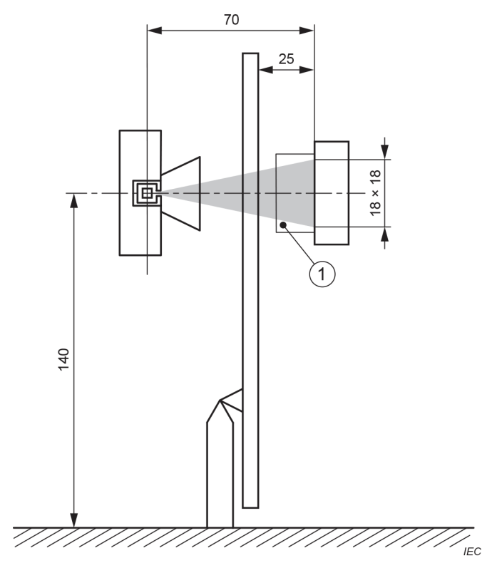
1 PHANTOM
Figure 203.104 – Testing for STRAY RADIATION (X-RAY BEAM horizontal
with X-RAY SOURCE ASSEMBLY below the PATIENT SUPPORT)
Dimensions in centimeters

1 PHANTOM
Figure 203.105 – Testing for STRAY RADIATION (X-RAY BEAM vertical
with X-RAY SOURCE ASSEMBLY below the PATIENT SUPPORT)
Dimensions in centimeters
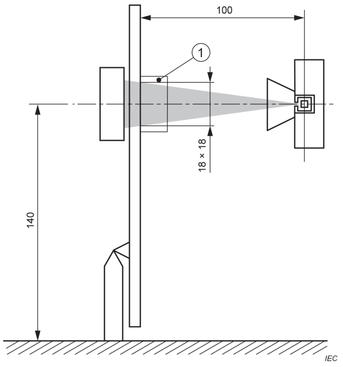
1 PHANTOM
Figure 203.106 – Testing for STRAY RADIATION (X-RAY BEAM horizontal
with X-RAY SOURCE ASSEMBLY above the PATIENT SUPPORT)
Dimensions in centimeters
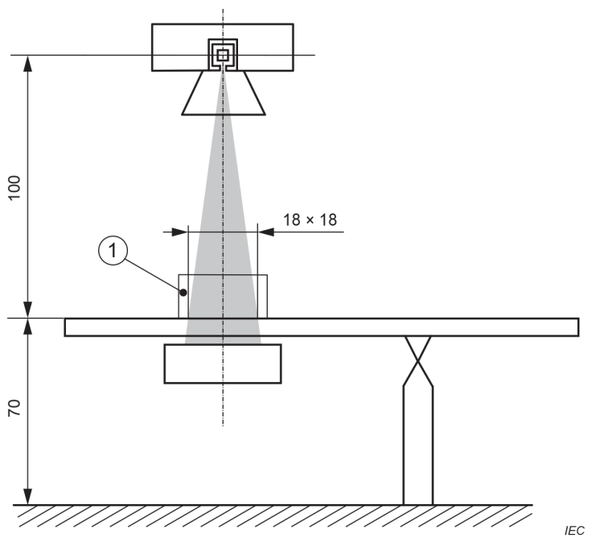
1 PHANTOM
Figure 203.107 – Testing for STRAY RADIATION (X-RAY BEAM vertical
with X-RAY SOURCE ASSEMBLY above the PATIENT SUPPORT)
Annexes
The annexes of IEC 60601-1:2005, IEC 60601-1:2005/AMD1:2012 and IEC 60601-
1:2005/AMD2:2020 apply, except as follows:
Annex C
(informative)
Guide to marking and labelling requirements
for ME EQUIPMENT and ME SYSTEMS
Annex C of IEC 60601-1:2005, IEC 60601-1:2005/AMD1:2012 and IEC 60601-
1:2005/AMD2:2020 applies, except as follows:
201.C.1 Marking on the outside of ME EQUIPMENT, ME SYSTEMS or their parts
Beyond those given in 201.7.2, additional requirements for marking on the outside of
ME EQUIPMENT are found in Table 201.C.101.
Table 201.C.101 – Marking on the outside of ME EQUIPMENT or its parts
| Description of marking |
Subclause |
| BEAM LIMITING DEVICE |
201.7.2.101 |
| Indication on the X-RAY EQUIPMENT |
203.8.102.2 |
201.C.5 ACCOMPANYING DOCUMENTS, Instructions for use
Beyond those given in 201.7.9, additional requirements for statements in ACCOMPANYING
DOCUMENTS (which include instructions for use and technical description) are found in the
subclauses listed in Table 201.C.102.
Table 201.C.102 – Subclauses requiring statements in ACCOMPANYING DOCUMENTS
| Title |
Subclause |
| SUPPLY MAINS for ME EQUIPMENT and ME SYSTEMS |
201.4.10.2 |
| Cooling conditions |
201.7.2.15 |
| Unintended movement |
201.9.2.3.1 |
| Pressure and force limitation |
201.9.2.3.101 |
| Motion INTERLOCK for COMPRESSION DEVICES |
201.9.2.3.102 |
| Collision protection |
201.9.2.2.4.4.101 |
| MECHANICAL PROTECTIVE DEVICE |
201.9.8.4.101 |
| Protection against excessive temperatures of BEAM LIMITING DEVICES |
201.11.101 |
| Dosimetric information for X-RAY EQUIPMENT specified for RADIOSCOPY and/or SERIAL
RADIOGRAPHY |
203.5.2.4.5.101 |
| EXAMINATION PROTOCOLS |
203.5.2.4.101 |
| Connections of external INTERLOCKS |
203.6.2.1.102 |
| Shortened indication of LOADING FACTORS |
203.6.4.3.102 |
| Linearity and constancy in RADIOGRAPHY |
203.6.3.2.102 |
| Measuring arrangements |
203.6.3.2.103.1 |
| Indication of automatic modes |
203.6.4.4 |
| Dosimetric indications |
203.6.4.5 |
| AUTOMATIC CONTROL SYSTEM |
203.6.5 |
| SCATTERED RADIATION reduction |
203.6.6 |
| HALF-VALUE LAYERS and TOTAL FILTRATION in X-RAY EQUIPMENT |
203.7.1 |
| FILTRATION in X-RAY SOURCE ASSEMBLIES |
203.7.1.101 |
| Correspondence between X-RAY FIELD and EFFECTIVE IMAGE RECEPTION AREA |
203.8.5.3 |
| Boundary and dimensions of the X-RAY FIELD |
203.8.101 |
| Methods of beam limitation in X-RAY EQUIPMENT |
203.8.102 |
| Indication on the X-RAY EQUIPMENT |
203.8.102.2 |
| Indication in the instructions for use |
203.8.102.3 |
| Accuracy of marked and written indications |
203.8.102.4 |
| Indication by LIGHT FIELD-INDICATOR |
203.8.102.5 |
| Interception of the X-RAY BEAM in RADIOSCOPY |
203.8.103 |
| Positioning of the X-RAY BEAM AXIS |
203.8.104 |
| Information in the ACCOMPANYING DOCUMENTS |
203.10.2 |
| Protection against RESIDUAL RADIATION |
203.11 |
| Control of X-RAY EQUIPMENT from a PROTECTED AREA |
203.13.2 |
| Protection by distance |
203.13.3 |
| SIGNIFICANT ZONES OF OCCUPANCY with limited STRAY RADIATION |
203.13.4.101 |
| Handgrips and control devices |
203.13.5 |
Annex AA
(informative)
Particular guidance and rationale
The following are rationales for specific clauses and subclauses in this document, with clause
and subclause numbers parallel to those in the body of the document.
Subclause 201.4.3.101 – Additional potential ESSENTIAL PERFORMANCE requirements
IEC 60601-1:2005, IEC 60601-1:2005/AMD1:2012 and IEC 60601-1:2005/AMD:2020 state that
the term ESSENTIAL PERFORMANCE is directly related to the performance of a clinical function
(definition 3.27 in IEC 60601-1:2005 and IEC 60601-1:2005/AMD1:2012). Table 201.101 of this
document provides a list of requirements that can be correlated with the performance of a
clinical function and that can therefore be ESSENTIAL PERFORMANCE. The decision on whether
any of these requirements constitutes ESSENTIAL PERFORMANCE is subject to a RISK EVALUATION
that considers the INTENDED USE of the X-RAY EQUIPMENT.
The identification of potential ESSENTIAL PERFORMANCE requirements is justified because the RISK
associated with ionizing X-RADIATION is overweighed by the benefits expected from the examination.
The intent of the requirements in this document is to support MANUFACTURERS in providing
state-of-the-art
X-RAY EQUIPMENT that is safe under NORMAL CONDITIONS.
Requirements under SINGLE FAULT CONDITIONS are either stipulated in clauses of
IEC 60601-1:2005, IEC 60601-1:2005/AMD1:2012 and IEC 60601-1:2005/AMD2:2020 and this
document or are determined by the RISK EVALUATION. There can be cases in which simply
detection of single faults during regular checks within a maintenance or a QUALITY CONTROL
PROCEDURE is considered sufficient. In some other cases, a RISK which occurs under SINGLE
FAULT CONDITIONS is considered acceptable due to its low probability or low SEVERITY. However,
SINGLE FAULT CONDITIONS that result in an unacceptable RISK due to the probability of harm or
the SEVERITY of harm require additional RISK CONTROL measures. These RISK CONTROL measures
are selected according to ISO 14971 and can include frequent functional self-monitoring,
installation of redundant parts, or appropriate protective measures.
Subclause 201.8.7.3 – Allowable values
These relaxations versus the values of IEC 60601-1:2005, IEC 60601-1:2005/AMD1:2012 and
IEC 60601-1:2005/AMD2:2020 have been in place since 1998, originally in the withdrawn
IEC 60601-2-7. There have been no reports that would justify a modification of these values.
Subclause 202.101 – Immunity testing of ESSENTIAL PERFORMANCE
Immunity tests on X-RAY EQUIPMENT specified for RADIOGRAPHY and RADIOSCOPY can be
performed only in RADIOSCOPY mode if there is sufficient evidence that RADIOSCOPY covers the
same electrical sources and signalling paths leading to IRRADIATION.
Subclause 203.5.2.4.5.101 c) – RADIATION data
See rationale to 203.6.4.5.
Subclause 203.5.2.4.5.101 d) – PATIENT ENTRANCE REFERENCE POINT
This document allows the use of an indirect indication to estimate the ABSORBED DOSE to the
skin. The estimate could be drawn from the indications of X-RAY EQUIPMENT parameters followed
by a calculation of the primary AIR KERMA or AIR KERMA RATE at a point specified with reference
to the FOCAL SPOT. The specified point, which has been defined here as the PATIENT ENTRANCE
REFERENCE POINT, is intended to be representative of the point of intersection of the X-RAY BEAM
AXIS with the PATIENT.
For systems with an ISOCENTRE, a point on the REFERENCE AXIS 15 cm from the ISOCENTRE
towards the FOCAL SPOT has been specified as the PATIENT ENTRANCE REFERENCE POINT. This
distance is assumed to represent a good approximation of the value of the actual FOCAL SPOT
TO SKIN DISTANCE during RADIOLOGICAL PROCEDURES. If one considers currently available
methods to estimate ABSORBED DOSES to selected tissues for RADIOSCOPIC and cineangiographic
examinations of the coronary arteries of adults [4], [5], these methods rely on the
use of distinct operating conditions commonly used in RADIOLOGICAL examinations of the heart.
These operating conditions are associated with a view, an arterial projection, and technique
factors on the X-RAY EQUIPMENT such as the X-RAY TUBE VOLTAGE (kV), the HALF-VALUE LAYER
(HVL), the FOCAL SPOT TO SKIN DISTANCE, the FOCAL SPOT TO IMAGE RECEPTOR DISTANCE and the
ENTRANCE FIELD SIZE. A review of the operating conditions derived from analyses of practice [6],
[9] indicates that the defined PATIENT ENTRANCE REFERENCE POINT is, in fact, a fair approximation
of the FOCAL SPOT TO SKIN DISTANCE for each field.
The error in estimating the ABSORBED DOSE to the skin introduced from the defined PATIENT
ENTRANCE REFERENCE POINT should average out as long as the interventional PROCEDURE is
composed of multiple views. When the RADIOLOGICAL PROCEDURE is limited to one or a few
views, the possibility of error in estimating the ABSORBED DOSE to the skin can be higher.
However, even under worst case conditions, errors should be less than a factor of two. Of
course, most of this error can be eliminated by assessing the position of the PATIENT and
calculating the appropriate correction factor.
The document has the flexibility of allowing an alternative to the use of the defined PATIENT
ENTRANCE REFERENCE POINT for systems without an ISOCENTRE. In this case, the PATIENT
ENTRANCE REFERENCE POINT is located at a position, defined by the MANUFACTURER to be
representative of the point of intersection of the REFERENCE AXIS with the PATIENT SURFACE, and
stated in the ACCOMPANYING DOCUMENTS. Examples of situations where the MANUFACTURER
would use this alternative method of defining the PATIENT ENTRANCE REFERENCE POINT, would be
X-RAY EQUIPMENT that senses the actual FOCAL-SPOT-TO-SKIN DISTANCE, deviates from traditional
geometry or has a FIXED FOCAL SPOT TO SKIN DISTANCE.
NOTE Other reference documents [7], [8].
Subclause 203.5.2.4.5.102 – Test for dosimetric information
X-RAY EQUIPMENT can be equipped with means for manually or automatically configuring
the operating parameters for different INTENDED USES. In addition, different operating parameter
sets can be required to comply with differing national regulations and preferences. In
accordance with 203.5.2.4.5.101 b), details of MODES OF OPERATION and certain other available
settings are required to be stated. In accordance with 203.5.2.4.5.101 c), the associated values
of REFERENCE AIR KERMA (RATE) are required to be given, together with the configurations and
test geometries by which they can be verified by the method described in this subclause.
The first stage of compliance testing is to check this information (other than the dosimetric values)
for compliance with the requirements and compatibility with the measuring method. If the
information complies, it is used in the measuring PROCEDURE to verify the compliance of the
stated values of REFERENCE AIR KERMA (RATE). Otherwise, the ME EQUIPMENT is considered noncompliant
without further testing. Thus, the ME EQUIPMENT is delivered with a set of verified
values and also with sufficient information to enable the values to be re-checked at any time. It
is emphasised that, in any circumstances, the test method to be applied is intended to be only
in respect of conditions that are within the range of the INTENDED USE.
Subclause 203.6.2.1 e) – Normal initiation and termination of the IRRADIATION
The purpose of RADIOSCOPY is to observe objects or structures in real time [16], [17]. A LAST
IMAGE HOLD RADIOGRAM is, in essence, a RADIOGRAPH intended for review for study, consultation,
or education instead of continuing RADIOSCOPY [16], [17].
The intent is to limit the number of RADIOGRAPHY images to those necessary for diagnosis or to
document findings and device placement. Typical RADIOGRAPHY dose rates are at least 10 times
greater than those for RADIOSCOPY [16]. If a LAST IMAGE HOLD RADIOGRAM demonstrates the
finding adequately, it can be studied instead of performing RADIOGRAPHY. When no additional
RADIOGRAPHY images are obtained, PATIENT RADIATION dose is reduced [16].
At present, RADIOSCOPY equipment is designed so that the RADIOSCOPY IRRADIATION terminates
after the release of continuous pressure by the OPERATOR, regardless of the quality of the
resultant LAST IMAGE HOLD RADIOGRAM. For radioscopic IRRADIATIONS longer than 1 s or so, this
is of no consequence, as the image quality of the resultant LAST IMAGE HOLD RADIOGRAM will be
adequate. However, if the RADIOSCOPY IRRADIATION is too short, the LAST IMAGE HOLD RADIOGRAM
will not be usable, because image quality will not be adequate. Sufficient time is necessary to
stabilize the AUTOMATIC INTENSITY CONTROL before terminating the radioscopic IRRADIATION.
The new requirement permits automatic creation of a LAST IMAGE HOLD RADIOGRAM of adequate
quality with a short tap on the RADIOSCOPY pedal and automatic termination of the radioscopic
IRRADIATION, rather than manual termination. This avoids an IRRADIATION which is too short and
results in an inadequate LAST IMAGE HOLD RADIOGRAM, or an IRRADIATION that is longer than
necessary to obtain a LAST IMAGE HOLD RADIOGRAM of adequate quality. It permits a LAST IMAGE
HOLD RADIOGRAM to be obtained with the shortest possible RADIOSCOPY IRRADIATION that will
result in a usable image, and therefore with the lowest possible PATIENT RADIATION dose. It is
understood that under certain circumstances (e.g. very low pulse rates) the time limits specified
in 203.6.2.1 could result in a suboptimal LAST IMAGE HOLD RADIOGRAM.
Subclause 203.6.3.102 – High-level control (HLC)
High-level control (HLC) or high dose rate mode(s) can be applicable in cases
of extreme body sizes of the PATIENT or when there is a need for extraordinarily high image
quality for a certain PROCEDURE with a certain PATIENT. In such cases the higher PATIENT
exposure can be justified if the benefit of the PROCEDURE cannot be attained with lower
dose rates. Local regulations can set different limits on the maximum AIR KERMA
RATE for the normal and/or the HLC MODES OF OPERATION.
Subclause 203.6.4.3.106 – Electronic documentation of EXAMINATION PROTOCOLS
At the system level, the X-RAY EQUIPMENT includes one or more IMAGE DISPLAY DEVICES. The
imaging performance characteristics of IMAGE DISPLAY SYSTEMS are provided by other standards
(e.g. IEC 62563-1 [18] and DICOM, Part 14 [19]). The IMAGE DISPLAY SYSTEM settings selected
under 203.6.4.3.106 are meaningful provided that the IMAGE DISPLAY DEVICE conforms to the
X-RAY EQUIPMENT's specifications and the IMAGE DISPLAY DEVICE performs in accordance to its
own standards.
A new addition is to provide a means (e.g. a comparison tool) to flag differences between two
(or more) PRE-PROGRAMMED EXAMINATION PROTOCOLS. The comparison tool can be used to
compare EXAMINATION PROTOCOLS for different examinations or different versions of the same
protocol.
X-RAY EQUIPMENT can contain one or more PRE-PROGRAMMED EXAMINATION PROTOCOLS (PPEP)
Each PPEP usually contains settings controlling RADIATION production, X-RAY IMAGE
RECEPTOR performance, and image processing for presentation. Incorrect or inappropriate
settings can result in inappropriate IRRADIATION of the PATIENT and/or in inappropriate
clinical utility of the resulting images.
Validating the contents of each PPEP is essential for both safety and performance. For this
reason, documentation of PPEPs over the life of the EQUIPMENT is useful for the RESPONSIBLE
ORGANIZATION. Routine audits by the RESPONSIBLE ORGANIZATION are often performed after
EQUIPMENT installation, commissioning, updates, and clinical configuration changes. Additional
audits are indicated if there are unexpected changes in RADIATION use or the clinical
acceptability of the resultant images.
Copies of the downloaded PPEP sets might be retained by the RESPONSIBLE ORGANIZATION to
document their status over the life of the EQUIPMENT.
Audits are facilitated by comparing currently installed PPEPs against a reference set of PPEPs
and flagging the differences. Sources of reference PPEPs include MANUFACTURER'S factory
defaults or regional settings, as well as local settings for substantially similar EQUIPMENT as
defined by the RESPONSIBLE ORGANIZATION.
This document does not require any specific content or format of a PPEP. It implies that all
controls and settings within a PPEP that affect either RADIATION production or the characteristics
of the resulting images be appropriately documented in a form that facilitates comparisons
between versions.
Subclause 203.6.4.5 – Dosimetric indications
There is a growing demand worldwide for assessing quantitatively the RADIATION exposure of
PATIENTS during diagnostic and interventional radiology PROCEDUREs. Such demands can also
be found in regional and national regulations. Some particular standards linked to the second
edition of IEC 60601-1:2005, IEC 60601-1:2005/AMD1:2012 and IEC 60601-1:2005/AMD2:2020
include such requirements. The first edition of IEC 60601-2-43 (2000) asks for presentation of
RADIATION data, introduces terms such as skin dose levels and interventional reference point,
and requires dosimetry calibration (6.8.2 of IEC 60601-2-43:2000) and dosimetric indications
(51.102.4 of IEC 60601-2-43:2000). IEC 60601-2-44:2001 and IEC 60601-2-44:2001/AMD1:2002
require dose statements (29.1.102.1 of IEC 60601-2-44:2001 and IEC 60601-2-44:2001/AMD1:2002)
and dose information (29.1.103 of IEC 60601-2-44:2001 and IEC 60601-2-44:2001/AMD1:2002).
The reason that these two standards were first in the introduction of such requirements is that
both interventional PROCEDUREs and CT examinations are high dose PROCEDUREs.
The transition from the second to the third edition of IEC 60601-1:2005,
IEC 60601-1:2005/AMD1:2012 and IEC 60601-1:2005/AMD2:2020 presents a good opportunity
to introduce requirements on RADIATION data and dosimetric indication into the particular
standards for all medical X-ray modalities.
The introduction of the first edition of IEC 60601-1-3 (1994) states the following: “In respect of
economic factors, it is recognized that certain relatively inexpensive types of X-RAY EQUIPMENT
are sometimes justifiably preferred on grounds of cost. For these, this collateral standard avoids
imposing requirements that would unduly restrict their medical effectiveness or would add
disproportionately to the cost.” Based on this principle, this document exempts DIRECT
RADIOGRAPHY EQUIPMENT from the requirements to provide dosimetric indications in 203.6.4.5.
However, for X-RAY EQUIPMENT specified for DIRECT RADIOGRAPHY (including film-screen
RADIOGRAPHY), a simplified dosimetric indication could be used by displaying a value, i.e. “the
REFERENCE AIR KERMA resulting from the last radiographic IRRADIATION shall be displayed in mGy
together with this unit”. This value might be pre-programmed as a function of the LOADING
FACTORS. It also implies that when shifting from screen-film RADIOGRAPHY to CR, it is the
responsibility of the RESPONSIBLE ORGANIZATION to ensure compliance with the general
requirement for INDIRECT RADIOGRAPHY, or else compliance of the actual X-ray system with this
document can no longer be stated. INDIRECT RADIOGRAPHY includes CR and DR systems as well
as any kind of RADIOGRAPHY performed with image intensifiers.
The accuracy requirement for dosimetric indications of ± 35 % was harmonized with EU and
US requirements and is consistent with the real technically achievable level of accuracy. For
RADIATION data stated in the ACCOMPANYING DOCUMENTS, the accuracy requirement of ± 50 %
has been set to reflect the method used for compliance assessment and the fact that the
RADIATION output of a given type of X-RAY TUBE can vary within broad limits.
It shall be stressed that all requirements on RADIATION data and dosimetric indication in
the IEC standards are meant to give information to the OPERATOR about PATIENT doses and not
to PATIENTS themselves.
Subclause 203.13.4.101 – SIGNIFICANT ZONES OF OCCUPANCY with limited STRAY RADIATION
In RADIOLOGICAL examinations which require the OPERATOR or staff to be close to the PATIENT
during LOADING, a significant contribution to the total STRAY RADIATION exposure to these persons
is often made by SCATTERED RADIATION from the PATIENT and other objects in the X-RAY BEAM.
For X-RAY EQUIPMENT conventionally and most frequently used for performing gastro-intestinal
examinations, limits of STRAY RADIATION in the SIGNIFICANT ZONES OF OCCUPANCY are required.
The instructions for use shall state the applicable limits and declare that they are not exceeded.
Where they apply, these requirements can provide a normalized basis for the local rules and
guidelines that have to shall be established for the protection of persons, taking into account
the local circumstances and the prevailing WORKLOAD.
Bibliography
-
IEC 60627, Diagnostic X-ray imaging equipment – Characteristics of general purpose and mammographic
anti-scatter grids
-
IEC 61267:2005, Medical diagnostic X-ray equipment – Radiation conditions for use in the determination
of characteristics
-
ISO 4090:2001, Photography – Medical radiographic cassettes/screens/films and hardcopy imaging films –
Dimensions and specifications
-
STERN, S.H., ROSENSTEIN, M., RENAUD, L., ZANKL M. Handbook of Selected Tissue Doses for Fluoroscopic and
Cineangiographic Examination of the Coronary Arteries. U.S. Department of Health and Human Services
Publication FDA 95-8289, May 1995
-
NAHASS, G.T. Fluoroscopy and the Skin: Implications for Radiofrequency Catheter Ablation. Am. J. of
Card. 1995, 76, 174-176
- LESPERANCE, J. Coronary Angiography Projections. Institut de Cardiologie de Montréal, April 1982
-
HADDI, R., RENAUD, L. Projections et Conditions Techniques en Usage en Angiocardiologie, Etude
Statistique. Rapport technique, Service de Génie Biomédical, Institut de Cardiologie de Montréal, March
1993
-
HYKES, D.L. Determination of Patient Radiation Doses Associated with Cardiac Catherization Procedures
using Direct measurements and Monte Carlo Methods. Ph.D. dissertation. Medical College of Ohio, Toledo
OH
-
HUYSKENS, C.J., HUMMEL, W.A. Data Analysis on Patient Exposures in Cardiac Angiography. Radiation
Protection Dosimetry 1995, 57(1), 475-480
-
IEC 60601-2-28:2017, Medical electrical equipment – Part 2-28: Particular requirements for the basic
safety and essential performance of X-ray tube assemblies for medical diagnosis
-
IEC 60601-1-8, Medical electrical equipment – Part 1-8: General requirements for basic safety and
essential performance – Collateral standard: General requirements, tests and guidance for alarm systems
in medical electrical equipment and medical electrical systems
-
IEC 60601-1-10, Medical electrical equipment – Part 1-10: General requirements for basic safety and
essential performance – Collateral Standard: Requirements for the development of physiologic closed-loop
controllers
-
IEC 60601-1-11:2015, Medical electrical equipment – Part 1-11: General requirements for basic safety and
essential performance – Collateral Standard: Requirements for medical electrical equipment and medical
electrical systems used in the home healthcare environment IEC 60601-1-11:2015/AMD1:2020
-
IEC 60601-1-12:2014, Medical electrical equipment – Part 1-12: General requirements for basic safety and
essential performance – Collateral Standard: Requirements for medical electrical equipment and medical
electrical systems intended for use in the emergency medical services environment IEC
60601-1-12:2014/AMD1:2020
-
IEC 60601-2-43:2010, Medical electrical equipment – Part 2-43: Particular requirements for the basic
safety and essential performance of X-ray equipment for interventional procedures IEC
60601-2-43:2010/AMD1:2017 IEC 60601-2-43:2010/AMD2:2019
-
ICRP 117:2010, Radiological Protection in Fluoroscopically Guided Procedures outside the Imaging
Department. ICRP Publication 117, Ann. ICRP 40(6)
-
ICRP 121:2013, Radiological Protection in Paediatric Diagnostic and Interventional Radiology. ICRP
Publication 121, Ann. ICRP 42(2)
-
IEC 62563-1:2009, Medical electrical equipment – Medical image display systems – Part 1: Evaluation
methods IEC 62563-1:2009/AMD1:2016 IEC 62563-1:2009/AMD2:2021
-
DICOM, Part 14 (PS 3.14-2016e), Digital Imaging and Communications in Medicine – Part 14: Grayscale
Standard Display Function
-
IEC 60601-1-9, Medical electrical equipment – Part 1-9: General requirements for basic safety and
essential performance – Collateral Standard: Requirements for environmentally conscious design
- ISO 14971:2019, Medical devices – Application of risk management to medical devices
-
IEC 62220-1-1:2015, Medical electrical equipment – Characteristics of digital X-ray imaging devices –
Part 1-1: Determination of the detective quantum efficiency – Detectors used in radiographic imaging
-
IEC 60601-2-43:20002, Medical electrical equipment – Part 2-43: Particular requirements for the safety
of X-ray equipment for interventional procedures
-
IEC 60601-2-44:20013, Medical electrical equipment – Part 2-44: Particular requirements for the safety
of X-ray equipment for computed tomography IEC 60601-2-44:2001/AMD1:2002
-
IEC 60601-1-3:19944, Medical electrical equipment – Part 1: General requirements for safety – Section 3:
Collateral standard: General requirements for radiation protection in diagnostic X-ray equipment
-
This reference was withdrawn and replaced with IEC 60601-2-43:2010, IEC 60601-2-43:2010/AMD1:2017 and
IEC 60601-2-43:2010/AMD2:2019.
-
This reference was withdrawn and replaced with IEC 60601-2-44:2001, IEC 60601-2-43:2001/AMD1:2012 and
IEC 60601-2-44:2001/AMD2:2016.
-
This reference was withdrawn and replaced with IEC 60601-1-3:2008, IEC 60601-1-3:2008/AMD1:2013 and IEC
60601-1-3:2008/AMD2:2021.
Index of defined terms used in this document
NOTE In the present document only terms defined in IEC 60601-1:2005, IEC 60601-1:2005/AMD1:2012 and
IEC 60601-1:2005/AMD2:2020, its collateral standards, in IEC TR 60788:2004 or in 201.3 of this document
were
used. The definitions used in this document may can be looked up at http://std.iec.ch/glossary.
ABSORBED DOSE
IEC TR 60788:2004, rm-13-08
ACCESSIBLE PART
IEC 60601-1:2005, 3.2
ACCESSIBLE SURFACE
IEC 60601-1-3:2008, 3.1
ACCOMPANYING DOCUMENT
IEC 60601-1:2005, 3.4
ADDED FILTER
IEC 60601-1-3:2008, 3.2
AIR KERMA
IEC 60601-1-3:2008, 3.4
AIR KERMA RATE
IEC 60601-1-3:2008, 3.5
ANTI-SCATTER GRID
IEC TR 60788:2004, rm-32-06
APPARENT RESISTANCE OF SUPPLY MAINS
201.3.201
ATTENUATION
IEC 60601-1-3:2008, 3.7
ATTENUATION EQUIVALENT
IEC 60601-1-3:2008, 3.8
AUTOMATIC CONTROL SYSTEM
IEC 60601-1-3:2008, 3.9
AUTOMATIC EXPOSURE CONTROL
IEC 60601-1-3:2008, 3.10
AUTOMATIC INTENSITY CONTROL
201.2.202
BASIC SAFETY
IEC 60601-1:2005, 3.10
BEAM LIMITING DEVICE
IEC 60601-1-3:2008, 3.11
BEAM LIMITING SYSTEM
IEC 60601-1-3:2008, 3.12
COMPRESSION DEVICE
IEC TR 60788:2004, rm-35-15
CONSTANT POTENTIAL HIGH-VOLTAGE GENERATOR
IEC TR 60788:2004, rm-21-06
CONTINUOUS ANODE INPUT POWER
IEC 60601-1-3:2008, 3.13
CONTROL PANEL
IEC 60601-1-3:2008, 3.14
CURRENT TIME PRODUCT
IEC 60601-1-3:2008, 3.16
DIAPHRAGM
IEC 60601-1-3:2008, 3.17
DIGITAL X-RAY IMAGING DEVICE
IEC 62220-1-1:2015, 3.6
DIRECT RADIOGRAPHY
201.3.203
DIRECT RADIOSCOPY
201.3.204
DISPLAY
IEC TR 60788:2004, rm-84-01
DOSE AREA PRODUCT
201.3.205
DOSE AREA PRODUCT METER
IEC 60580:2019, 3.7
DOSE EQUIVALENT
IEC 60601-1-3:2008, 3.18
DOSIMETER
201.3.206
EARTH LEAKAGE CURRENT
IEC 60601-1:2005 and IEC 60601-1:2005/AMD1:2012, 3.25
EDGE FILTER
IEC 60601-1-3:2008, 3.19
EFFECTIVE IMAGE RECEPTION AREA
IEC 60601-1-3:2008, 3.20
EMERGENCY MEDICAL SERVICES ENVIRONMENT
IEC 60601-1-12:2014, 3.1
ENCLOSURE
IEC 60601-1:2005, 3.26
ENTRANCE FIELD SIZE
201.3.207
ENTRANCE SURFACE
IEC 60601-1-3:2008, 3.21
ESSENTIAL PERFORMANCE
IEC 60601-1:2005 and IEC 60601-1:2005/AMD1:2012, 3.27
EXAMINATION PROTOCOL
201.3.208
EXAMINATION PROTOCOL SELECTION CONTROL
201.3.209
EXPOSURE INDEX
IEC 62494-1:2008, 3.7
EXTRA-FOCAL RADIATION
IEC 60601-1-3:2008, 3.22
FILM CHANGER
IEC TR 60788:2004, rm-31-07
FILTER
IEC 60601-1-3:2008, 3.23
FILTRATION
IEC 60601-1-3:2008, 3.24
FOCAL SPOT
IEC TR 60788:2004, rm-20-13s
FOCAL SPOT TO IMAGE RECEPTOR DISTANCE
IEC 60601-1-3:2008, 3.25
FOCAL SPOT TO SKIN DISTANCE
IEC 60601-1-3:2008, 3.26
HALF-VALUE LAYER
IEC 60601-1-3:2008, 3.27
HAZARD
IEC 60601-1:2005, IEC 60601-1:2005/AMD1:2012 and IEC 60601-1:2005/AMD2:2020,
3.39
HIGH VOLTAGE
IEC 60601-1:2005, 3.41
HIGH-VOLTAGE GENERATOR
201.3.210
HOME HEALTHCARE ENVIRONMENT
IEC 60601-1-11:2015, 3.1
IMAGE DISPLAY DEVICE
IEC 62563-1:2009, 3.1.13
IMAGE DISPLAY SYSTEM
IEC 62563-1:2009, 3.1.14
IMAGE RECEPTION AREA
IEC 60601-1-3:2008, 3.28
IMAGE RECEPTION PLANE
201.3.211
INDIRECT RADIOGRAPHY
201.3.212
INDIRECT RADIOSCOPY
201.3.213
INTENDED USE
IEC 60601-1:2005, IEC 60601-1:2005/AMD1:2012 and IEC 60601-1:2005/AMD2:2020,
3.44
INTENSIFYING SCREEN
IEC TR 60788:2004, rm-32-38
INTERLOCK
201.3.214
IRRADIATION
IEC 60601-1-3:2008, 3.30
IRRADIATION SWITCH
IEC 60601-1-3:2008, 3.31
IRRADIATION TIME
IEC 60601-1-3:2008, 3.32
IRRADIATION-EVENT
IEC 61910-1:2014, 3.1
ISOCENTRE
201.3.215
LAST IMAGE HOLD RADIOGRAM (LIH RADIOGRAM)
201.3.216
LEAKAGE RADIATION
IEC 60601-1-3:2008, 3.33
LIGHT FIELD
IEC TR 60788:2004, rm-37-09
LIGHT FIELD-INDICATOR
IEC TR 60788:2004, rm 37-31
LINEARIZED DATA
IEC 62220-1-1:2015, 3.9
LOADING
IEC 60601-1-3:2008, 3.34
LOADING FACTOR
IEC 60601-1-3:2008, 3.35
LOADING STATE
IEC 60601-1-3:2008, 3.36
LOADING TIME
IEC 60601-1-3:2008, 3.37
MAINS PART
IEC 60601-1:2005 and IEC 60601-1:2005/AMD1:2012, 3.49
MAINS VOLTAGE
IEC 60601-1:2005, 3.54
MANUFACTURER
IEC 60601-1:2005, IEC 60601-1:2005/AMD1:2012 and IEC 60601-1:2005/AMD2:2020,
3.55
MEASURED VALUE
IEC 60601-1-3:2008, 3.38
MECHANICAL HAZARD
IEC 60601-1:2005, 3.61
MECHANICAL PROTECTIVE DEVICE
IEC 60601-1:2005, 3.62
MEDICAL ELECTRICAL EQUIPMENT (ME EQUIPMENT)
IEC 60601-1:2005, 3.63
MEDICAL ELECTRICAL SYSTEM (ME SYSTEM)
IEC 60601-1:2005, 3.64
MOBILE
IEC 60601-1:2005 and IEC 60601-1:2005/AMD1:2012, 3.65
MODE OF OPERATION
IEC 60601-1-3:2008, 3.40
MODEL OR TYPE REFERENCE
IEC 60601-1:2005, 3.66
NARROW BEAM CONDITION
IEC 60601-1-3:2008, 3.41
NOMINAL
IEC 60601-1:2005, 3.69
NOMINAL ELECTRIC POWER
IEC/TR 60788:2004, rm-36-19201.3.217
NOMINAL FOCAL SPOT VALUE
IEC TR 60788:2004, rm-20-14
NOMINAL SHORTEST IRRADIATION TIME
201.3.208218
NOMINAL X-RAY TUBE VOLTAGE
IEC 60601-1-3:2008, 3.42
NORMAL CONDITION
IEC 60601-1:2005, 3.70
NORMAL USE
IEC 60601-1:2005 and IEC 60601-1:2005/AMD1:2012, 3.71
OPERATOR
IEC 60601-1:2005, 3.73
ORIGINAL DATA
IEC 62220-1-1:2015, 3.13
OVER-CURRENT RELEASE
IEC 60601-1:2005, 3.74
PATIENT
IEC 60601-1:2005 and IEC 60601-1:2005/AMD1:2012, 3.76
PATIENT ENTRANCE REFERENCE POINT
IEC 60601-1-3:2008, 3.43
PATIENT SUPPORT
IEC TR 60788:2004, rm-30-02
PERCENTAGE RIPPLE
IEC 60601-1-3:2008, 3.44
PERMANENTLY INSTALLED
IEC 60601-1:2005, 3.84
PHANTOM
IEC 60601-1-3:2008, 3.46
PRE-PROGRAMMED EXAMINATION PROTOCOL
201.3.213219
PRIMARY PROTECTIVE SHIELDING
IEC 60601-1-3:2008, 3.47
PROCEDURE
IEC 60601-1:2005, IEC 60601-1:2005/AMD1:2012 and IEC 60601-1:2005/AMD2:2020,
3.88
PROTECTED AREA
IEC 60601-1-3:2008, 3.48
PROTECTIVE CLOTHING
IEC 60601-1-3:2008, 3.50
PROTECTIVE DEVICE
IEC 60601-1-3:2008, 3.50
PROTECTIVE EARTH CONNECTION
IEC 60601-1:2005, 3.94
PROTECTIVE EARTH TERMINAL
IEC 60601-1:2005, 3.95
PROTECTIVE SHIELDING
IEC 60601-1-3:2008, 3.51
QUALITY CONTROL
IEC TR 60788:2004, rm-70-07201.3.220
QUALITY EQUIVALENT FILTRATION
IEC 60601-1-3:2008, 3.52
RADIATION
IEC 60601-1-3:2008, 3.53
RADIATION APERTURE
IEC 60601-1-3:2008, 3.54
RADIATION BEAM
IEC TR 60788:2004, rm-37-05
RADIATION BEAM AXIS
IEC/TR 60788:2004, rm-37-06
RADIATION CONDITION
IEC 60601-1-3:2008, 3.56
RADIATION DETECTOR
IEC 60601-1-3:2008, 3.57
RADIATION DOSE STRUCTURED REPORT (RDSR)
IEC 61910-1:2014, 3.3
RADIATION OUTPUT
201.3.221
RADIATION PROTECTION
IEC 60601-1-3:2008, 3.59
RADIATION QUALITY
IEC 60601-1-3:2008, 3.60
RADIATION SOURCE
IEC 60601-1-3:2008, 3.61
RADIOGRAM
IEC TR 60788:2004, rm-32-02
RADIOGRAPHIC CASSETTE
IEC TR 60788:2004, rm-35-14
RADIOGRAPHIC RATING
IEC 60601-1-3:2008, 3.63
RADIOGRAPHY
IEC 60601-1-3:2008, 3.64
RADIOLOGICAL
IEC 60601-1-3:2008, 3.65
RADIOLOGICAL IMAGE
IEC 60601-1-3:2008, 3.66
RADIOSCOPY
IEC 60601-1-3:2008, 3.69
RADIOSCOPY REPLAY IMAGE SEQUENCE
201.3.214222
RATED
IEC 60601-1:2005, 3.97
RELEVANT IMAGE REGION
IEC 62494-1:2008, 3.12
RDSR END OF PROCEDURE TRANSMISSION
IEC 61910-1:2014, 3.5
READY STATE
IEC TR 60788:2004, rm-84-05
REFERENCE AIR KERMA
IEC 60601-1-3:2008, 3.70
REFERENCE AIR KERMA RATE
IEC 60601-1-3:2008, 3.71
REFERENCE AXIS
IEC TR 60788:2004, rm-37-03
REGION OF INTEREST
201.3.223
RESIDUAL RADIATION
IEC 60601-1-3:2008, 3.72
RESPONSIBLE ORGANIZATION
IEC 60601-1:2005, 3.101
RISK
IEC 60601-1:2005, IEC 60601-1:2005/AMD1:2012 and IEC 60601-1:2005/AMD2:2020,
3.102
RISK CONTROL
IEC 60601-1:2005, IEC 60601-1:2005/AMD1:2012 and IEC 60601-1:2005/AMD2:2020,
3.105
RISK MANAGEMENT
IEC 60601-1:2005, IEC 60601-1:2005/AMD1:2012 and IEC 60601-1:2005/AMD2:2020,
3.107
RISK MANAGEMENT FILE
IEC 60601-1:2005, IEC 60601-1:2005/AMD1:2012 and IEC 60601-1:2005/AMD2:2020,
3.108
SAFE WORKING LOAD
IEC 60601-1:2005, 3.109
SCATTERED RADIATION
IEC 60601-1-3:2008, 3.73
SENSITIVE VOLUME
IEC TR 60788:2004, rm-51-07
SERIAL RADIOGRAPHY
201.3.224
SEVERITY
IEC 60601-1:2005, IEC 60601-1:2005/AMD1:2012 and IEC 60601-1:2005/AMD2:2020,
3.114
SIGNIFICANT ZONE OF OCCUPANCY
IEC 60601-1-3:2008, 3.74
SINGLE FAULT CONDITION
IEC 60601-1:2005 and IEC 60601-1:2005/AMD1:2012, 3.116
SINGLE FAULT SAFE
IEC 60601-1:2005, 3.117
SIX-PEAK HIGH-VOLTAGE GENERATOR
201.3.225
SPATIAL FREQUENCY
IEC 62220-1-1:2015, 3.17
SPOTFILM DEVICE
IEC TR 60788:2004, rm-31-05
STRAY RADIATION
IEC 60601-1-3:2008, 3.75
SUPPLY MAINS
IEC 60601-1:2005, 3.120
TARGET ANGLE
IEC TR 60788:2004, rm-20-11
THERMAL CUT-OUT
IEC 60601-1:2005, 3.124
TIMING DEVICE
201.3.226
TOOL
IEC 60601-1:2005, 3.127
TOTAL FILTRATION
IEC 60601-1-3:2008, 3.77
TOUCH CURRENT
IEC 60601-1:2005, 3.129
TRANSFER
IEC TR 60788:2004, rm-84-02
TRANSPORTABLE
IEC 60601-1:2005 and IEC 60601-1:2005/AMD1:2012, 3.130
TWELVE-PEAK HIGH-VOLTAGE GENERATOR
201.3.227
USABILITY ENGINEERING
IEC 60601-1:2005, IEC 60601-1:2005/AMD1:2012 and IEC 60601-1:2005/AMD2:2020,
3.137
WORKLOAD
IEC TR 60788:2004, rm-61-03
X-RADIATION (RADIATION)
IEC 60601-1-3:2008, 3.53
X-RAY BEAM (RADIATION BEAM)
IEC 60601-1-3:2008, 3.55
X-RAY BEAM AXIS
201.3.228
X-RAY EQUIPMENT
IEC 60601-1-3:2008, 3.78
X-RAY FIELD (RADIATION FIELD)
IEC 60601-1-3:2008, 3.58
X-RAY GENERATOR
IEC 60601-1-3:2008, 3.79
X-RAY IMAGE RECEPTOR
IEC 60601-1-3:2008, 3.81
X-RAY IMAGING ARRANGEMENT
IEC 60601-1-3:2008, 3.80
X-RAY PATTERN
IEC 60601-1-3:2008, 3.82
X-RAY SOURCE ASSEMBLY (RADIATION SOURCE ASSEMBLY)
IEC 60601-1-3:2008, 3.62
X-RAY TUBE
IEC 60601-1-3:2008, 3.83
X-RAY TUBE ASSEMBLY
IEC 60601-1-3:2008, 3.84
X-RAY TUBE CURRENT
IEC 60601-1-3:2008, 3.85
X-RAY TUBE HOUSING
IEC 60601-1-3:2008, 3.86
X-RAY TUBE VOLTAGE
IEC 60601-1-3:2008, 3.88
Medical electrical equipment –
Part 2-54: Particular requirements for the basic safety and essential
performance of X-ray equipment for radiography and radioscopy
International Electrotechnical Commission
Medical Electrical Equipment –
Part 2-54: Particular requirements for the basic safety and essential
performance of X-ray equipment for radiography and radioscopy
FOREWORD
-
The International Electrotechnical Commission (IEC) is a worldwide organization for standardization
comprising all national electrotechnical committees (IEC National Committees). The object of IEC is to
promote international co-operation on all questions concerning standardization in the electrical and
electronic fields. To this end and in addition to other activities, IEC publishes International
Standards, Technical Specifications, Technical Reports, Publicly Available Specifications (PAS) and
Guides (hereafter referred to as “IEC Publication(s)”). Their preparation is entrusted to technical
committees; any IEC National Committee interested in the subject dealt with may participate in this
preparatory work. International, governmental and non-governmental organizations liaising with the IEC
also participate in this preparation. IEC collaborates closely with the International Organization for
Standardization (ISO) in accordance with conditions determined by agreement between the two
organizations.
-
The formal decisions or agreements of IEC on technical matters express, as nearly as possible, an
international consensus of opinion on the relevant subjects since each technical committee has
representation from all interested IEC National Committees.
-
IEC Publications have the form of recommendations for international use and are accepted by IEC National
Committees in that sense. While all reasonable efforts are made to ensure that the technical content of
IEC Publications is accurate, IEC cannot be held responsible for the way in which they are used or for
any misinterpretation by any end user.
-
In order to promote international uniformity, IEC National Committees undertake to apply IEC
Publications transparently to the maximum extent possible in their national and regional publications.
Any divergence between any IEC Publication and the corresponding national or regional publication shall
be clearly indicated in the latter.
-
IEC itself does not provide any attestation of conformity. Independent certification bodies provide
conformity assessment services and, in some areas, access to IEC marks of conformity. IEC is not
responsible for any services carried out by independent certification bodies.
-
All users should ensure that they have the latest edition of this publication.
-
No liability shall attach to IEC or its directors, employees, servants or agents including individual
experts and members of its technical committees and IEC National Committees for any personal injury,
property damage or other damage of any nature whatsoever, whether direct or indirect, or for costs
(including legal fees) and expenses arising out of the publication, use of, or reliance upon, this IEC
Publication or any other IEC Publications.
-
Attention is drawn to the Normative references cited in this publication. Use of the referenced
publications is indispensable for the correct application of this publication.
-
Attention is drawn to the possibility that some of the elements of this IEC Publication may be the
subject of patent rights. IEC shall not be held responsible for identifying any or all such patent
rights.
IEC 60601-2-54 has been prepared by subcommittee 62B: Diagnostic imaging equipment, of IEC technical
committee 62: Electrical equipment in medical practice. It is an International Standard.
This second edition cancels and replaces the first edition published in 2009, Amendment 1:2015 and
Amendment 2:2018. This edition constitutes a technical revision.
This edition includes editorial and technical changes to reflect the IEC 60601-1:2005/AMD2:2020. It also
contains corrections and technical improvements.
Significant technical changes with respect to the previous edition are as follows:
- a new specific term DOSIMETER is introduced to replace the general term DOSEMETER;
- terms and definitions taken exclusively from IEC TR 60788:2004 and which are specifically applicable in
this document have been moved to 201.3;
- the collateral standards IEC 60601-1-11:2015, IEC 60601-1-11:2015/AMD1:2020, IEC 60601-1-12:2014 and IEC
60601-1-12:2014/AMD1:2020 are applicable if MANUFACTURER so declares;
- the subclause 201.11.101 “Protection against excessive temperatures of X-ray tube assemblies” has been
removed from this document as its requirements are sufficiently and clearly covered by IEC 60601-1:2005,
IEC 60601-1:2005/AMD1:2012, IEC 60601-1:2005/AMD2:2020 and IEC 60601-2-28:2017;
- to adopt changes which are introduced with respect to indicator lights in 7.8.1 of the IEC
60601-1:2005/AMD2:2020 clarification of requirements is provided to avoid conflicts with requirements of
indicator lights stipulated for X-RAY EQUIPMENT;
-
explanation of the term ESSENTIAL PERFORMANCE is provided in Annex AA to emphasize the
performance of the clinical function under NORMAL and SINGLE FAULT CONDITIONS.
The text of this document is based on the following documents:
| Draft |
Report on voting |
| 62B/1285/FDIS |
62B/1293/RVD |
Full information on the voting for its approval can be found in the report on voting indicated in
the above table.
The language used for the development of this International Standard is English.
This document was drafted in accordance with ISO/IEC Directives, Part 2, and developed in
accordance with ISO/IEC Directives, Part 1 and ISO/IEC Directives, IEC Supplement, available
at www.iec.ch/members_experts/refdocs. The main document types developed by IEC are
described in greater detail at www.iec.ch/standardsdev/publications.
In this document, the following print types are used:
- requirements and definitions: roman type;
- test specifications: italic type;
- informative material appearing outside of tables, such as notes, examples and
references: in smaller type.
Normative text of tables is also in a smaller type;
- TERMS DEFINED IN CLAUSE 3 OF IEC 60601-1:2005, IEC 60601-1:2005/AMD1:2012 AND IEC
60601-1:2005/AMD2:2020, IN THIS DOCUMENT OR AS NOTED: SMALL CAPITALS.
In referring to the structure of this document, the term
- “clause” means one of the seventeen numbered divisions within the table of
contents,
inclusive of all subdivisions (e.g. Clause 7 includes subclauses 7.1, 7.2, etc.);
- “subclause” means a numbered subdivision of a clause (e.g. 7.1, 7.2 and 7.2.1 are
all
subclauses of Clause 7).
References to clauses within this document are preceded by the term “Clause” followed by the
clause number. References to subclauses within this document are by number only.
In this document, the conjunctive “or” is used as an “inclusive or” so a statement is true if any
combination of the conditions is true.
The verbal forms used in this document conform to usage described in Clause 7 of the
ISO/IEC
Directives, Part 2. For the purposes of this document, the auxiliary verb:
- “shall” means that compliance with a requirement or a
test is mandatory for compliance with this document;
- “should” means that compliance with a requirement or a test is recommended but is not
mandatory for compliance with this document;
- “may” is used to describe a permissible way to achieve compliance
with a requirementortest.
An asterisk (*) as the first character of a title or at the beginning of a paragraph or table title
indicates that there is guidance or rationale related to that item in Annex AA.
A list of all parts of the IEC 60601 and IEC 80601 series, published under the general title
Medical electrical equipment, can be found on the IEC website.
The committee has decided that the contents of this document will remain unchanged until the
stability date indicated on the IEC website under webstore.iec.ch
in
the data related to the
specific document. At this date, the document will be:
- reconfirmed,
- withdrawn,
- replaced by a revised edition, or
- amended.
INTRODUCTION
This document has been prepared to provide, based on IEC 60601-1:2005 (third edition) and
its collaterals, a complete set of safety requirements for ME EQUIPMENT for RADIOGRAPHY and
RADIOSCOPY. The purpose of this second edition is to introduce changes to reference the second
amendment (2020) to IEC 60601-1:2005 and associated collateral standards. Moreover, in
Annex AA a clarification of the term for ESSENTIAL PERFORMANCE is provided. This document
addresses the system level of X-RAY EQUIPMENT, which consists of a combination of an X-RAY
GENERATOR, ASSOCIATED EQUIPMENT and ACCESSORIES. Component functions are addressed as
far as necessary.
The minimum safety requirements specified in this document are considered to provide for a
practical degree of safety in the operation of ME EQUIPMENT for RADIOGRAPHY and RADIOSCOPY.
Requirements for additional provisions for ME EQUIPMENT for interventional applications are
covered by IEC 60601-2-43.
MEDICAL ELECTRICAL EQUIPMENT –
Part 2-54: Particular requirements for the basic safety and essential
performance of X-ray equipment for radiography and radioscopy
201.1 Scope, object and related standards
Clause 1 of IEC 60601-1:2005, IEC 60601-1:2005/AMD1:2012 and IEC 60601-1:2005/AMD2:2020 applies, except
as
follows:
201.1.1 Scope
Replacement:
This document applies to the BASIC SAFETY and ESSENTIAL PERFORMANCE of ME EQUIPMENT and
ME SYSTEMS intended to be used for projection RADIOGRAPHY and INDIRECT RADIOSCOPY.
IEC 60601-2-43 applies to ME EQUIPMENT and ME SYSTEMS intended to be used for interventional
applications and refers to applicable requirements in this document.
ME EQUIPMENT and ME SYSTEMS intended to be used for bone or tissue absorption densitometry,
computed tomography, mammography or dental or radiotherapy applications are excluded from
the scope of this document. The scope of this document also excludes radiotherapy simulators.
If a clause or subclause is specifically intended to be applicable to ME EQUIPMENT only, or to
ME SYSTEMS only, the title and content of that clause or subclause will say so. If that is not the
case, the clause or subclause applies both to ME EQUIPMENT and to ME SYSTEMS, as relevant.
201.1.2 Object
Replacement:
The object of this document is to establish particular BASIC SAFETY and ESSENTIAL PERFORMANCE
requirements
for ME EQUIPMENT and ME SYSTEMS for RADIOGRAPHY and RADIOSCOPY.
201.1.3 Collateral standards
Addition:
This document refers to those applicable collateral standards that are listed in Clause 2 of
IEC 60601-1:2005, IEC 60601-1:2005/AMD1:2012 and IEC 60601-1:2005/AMD2:2020 as
modified in 201.2.
IEC 60601-1-2:2014 and IEC 60601-1-2:2014/AMD1:2020, IEC 60601-1-3:2008 and
IEC 60601-1-3:2008/AMD1:2013 and IEC 60601-1-3:2008/AMD2:2021 apply, as modified in
Clauses 202 and 203 respectively. If the MANUFACTURER declares that the ME EQUIPMENT or ME
SYSTEM is intended to be operated in a HOME HEALTHCARE ENVIRONMENT, then
IEC 60601-1-11:2015 and IEC 60601-1-11:2015/AMD1:2020 apply and if the MANUFACTURER
declares that the ME EQUIPMENT or ME SYSTEM is intended to be operated in an EMERGENCY
MEDICAL
SERVICES ENVIRONMENT,
then
IEC 60601-1-12:2014
and
IEC 60601-1-12:2015/AMD1:2020 apply. IEC 60601-1-8, IEC 60601-1-9, IEC 60601-1-10 do
not apply. All other published collateral standards in the IEC 60601-1 series apply as published.
NOTE 1: OPERATORS of X-RAY EQUIPMENT are used to audible signals as specified in this document rather
than to
the concepts of IEC 60601-1-8. Therefore IEC 60601-1-8 does not apply.
201.1.4 Particular standards
Replacement:
In the IEC 60601 series, particular standards may modify, replace or delete requirements contained in IEC
60601-1:2005, IEC 60601-1:2005/AMD1:2012 and IEC 60601-1:2005/AMD2:2020 and collateral standards as
appropriate for the particular ME EQUIPMENT under consideration, and may add other BASIC SAFETY and
ESSENTIAL PERFORMANCE requirements.
A requirement of a particular standard takes priority over IEC 60601-1:2005,
IEC 60601-1:2005/AMD1:2012 and IEC 60601-1:2005/AMD2:2020.
The numbering of clauses and subclauses of this document corresponds to that of
IEC 60601-1:2005, IEC 60601-1:2005/AMD1:2012 and IEC 60601-1:2005/AMD2:2020 with the
prefix “201” (e.g. 201.1 in this document addresses the content of Clause 1 of
IEC 60601-1:2005, IEC 60601-1:2005/AMD1:2012 and IEC 60601-1:2005/AMD2:2020) or
applicable collateral standard with the prefix “20x” where x is the final digit(s) of the collateral
standard document number (e.g. 202.4 in this document addresses the content of Clause 4 of
the IEC 60601-1-2 collateral standard, 203.4 in this document addresses the content of
Clause 4 of the IEC 60601-1-3 collateral standard, etc.). The changes to the text of the
IEC 60601-1:2005, IEC 60601-1:2005/AMD1:2012 and IEC 60601-1:2005/AMD2:2020 are
specified by the use of the following words:
“Replacement”
means that the clause or subclause of IEC 60601-1:2005,
IEC 60601-1:2005/AMD1:2012 and IEC 60601-1:2005/AMD2:2020 or the applicable collateral
standard is replaced completely by the text of this document.
“Addition” means that the text of this document is additional to the requirements of
IEC 60601-1:2005, IEC 60601-1:2005/AMD1:2012 and IEC 60601-1:2005/AMD2:2020 or the
applicable collateral standard.
“Amendment” means that the clause or subclause of IEC 60601-1:2005,
IEC 60601-1:2005/AMD1:2012 and IEC 60601-1:2005/AMD2:2020 or the applicable collateral
standard is amended as indicated by the text of this document.
Subclauses, figures or tables which are additional to those of IEC 60601-1:2005,
IEC 60601-1:2005/AMD1:2012 and IEC 60601-1:2005/AMD2:2020 are numbered starting from
201.101. However, due to the fact that definitions in IEC 60601-1:2005,
IEC 60601-1:2005/AMD1:2012 and IEC 60601-1:2005/AMD2:2020 are numbered 3.1 through
3.154, additional definitions in this document are numbered beginning from 201.3.201.
Additional annexes are lettered AA, BB, etc., and additional items aa), bb), etc.
Subclauses, figures or tables which are additional to those of a collateral standard are
numbered starting from 20x, where “x” is the number of the collateral standard, e.g. 202 for
IEC 60601-1-2, 203 for IEC 60601-1-3, etc.
Where there is no corresponding clause or subclause in this document, the clause or subclause
of IEC 60601-1:2005, IEC 60601-1:2005/AMD1:2012 and IEC 60601-1:2005/AMD2:2020 or the
applicable collateral standard, although possibly not relevant, applies without modification;
where it is intended that any part of IEC 60601-1:2005, IEC 60601-1:2005/AMD1:2012 and IEC
60601-1:2005/AMD2:2020 or the applicable collateral standard, although possibly relevant, is
not to be applied, a statement to that effect is given in this document.
201.2 Normative references
NOTE: Informative references are listed in the Bibliography.
Clause 2 of IEC 60601-1:2005, IEC 60601-1:2005/AMD1:2012 and IEC 60601-1:2005/AMD2:2020 applies, except
as
follows:
Addition:
IEC 60336:2020, Medical electrical equipment – X-ray tube assemblies for medical diagnosis – Focal
spot
dimensions and related characteristics
IEC 60580:2019, Medical electrical equipment – Dose area product meters
IEC 60601-1:2005, Medical electrical equipment – Part 1: General requirements for basic safety and
essential
performance
IEC 60601-1:2005/AMD1:2012
IEC 60601-1:2005/AMD2:2020
IEC TR 60788:2004, Medical electrical equipment – Glossary of defined terms
IEC 60806, Determination of the maximum symmetrical radiation field of X-ray tube assemblies and X-ray
source
assemblies for medical diagnosis
IEC 61910-1:2014, Medical electrical equipment – Radiation dose documentation – Part 1: Radiation dose
structured reports for radiography and radioscopy
IEC 62494-1:2008, Medical electrical equipment – Exposure index of digital X-ray imaging systems – Part
1:
Definitions and requirements for general radiography
Amendment:
IEC 60601-1-3:2008, Medical electrical equipment – Part 1-3: General requirements for basic safety
and
essential performance – Collateral standard: Radiation protection in diagnostic X-ray equipment
IEC 60601-1-3:2008/AMD1:2013
IEC 60601-1-3:2008/AMD2:2021
201.3 Terms and definitions
For the purposes of this document, the terms and definitions given in IEC 60601-1:2005, IEC
60601-1:2005/AMD1:2012, IEC 60601-1:2005/AMD2:2020, IEC TR 60788:2004 and the following apply.
ISO and IEC maintain terminological databases for use in standardization at the following addresses:
NOTE: An Index of defined terms is found in the last part of this document.
Addition:
201.3.201
APPARENT RESISTANCE OF SUPPLY MAINS
for diagnostic X-RAY GENERATOR, resistance of the SUPPLY MAINS determined under specific load
conditions
201.3.202
AUTOMATIC INTENSITY CONTROL
in an X-RAY GENERATOR, mode of operation in which one or more LOADING FACTORS are controlled
automatically in order to obtain at a pre-selected location a desired rate of a RADIATION QUANTITY
201.3.203
DIRECT RADIOGRAPHY
RADIOGRAPHY in which the permanent recording is effected at an IMAGE RECEPTION AREA
Example: Film-screen or film RADIOGRAPHY.
201.3.204
DIRECT RADIOSCOPY
RADIOSCOPY in which the visible images are presented at the IMAGE RECEPTION AREA, or close to
it, in the RADIATION BEAM
201.3.205
DOSE AREA PRODUCT
product of the area of the cross-section of an X-RAY BEAM and the averaged AIR KERMA over that
cross-section. The unit is the gray square metre (Gy⋅m2)
201.3.206
DOSIMETER
EQUIPMENT which uses ionization chambers or semiconductor detectors for the measurement of
AIR KERMA or AIR KERMA RATE in the beam of an X-RAY EQUIPMENT used for diagnostic medical
RADIOLOGICAL examinations
201.3.207
ENTRANCE FIELD SIZE
dimensions of the field in the entrance plane of an X-RAY IMAGE RECEPTOR that can be used for
the transmission of an X-RAY PATTERN under specific conditions
201.3.208
EXAMINATION PROTOCOL
full set of any programmed technical factors, control functions and settings, including image
processing settings, designed to optimize the image acquisition and DISPLAY
201.3.209
EXAMINATION PROTOCOL SELECTION CONTROL
control to select a PRE-PROGRAMMED EXAMINATION PROTOCOL
201.3.2010
HIGH-VOLTAGE GENERATOR
in an X-RAY GENERATOR, combination of all components for control and production of the
electrical energy to be supplied to an X-RAY TUBE, usually consisting of a high-voltage
transformer assembly and a control assembly
201.3.2011
IMAGE RECEPTION PLANE
plane containing the greatest dimensions of the IMAGE RECEPTION AREA
201.3.2012
INDIRECT RADIOGRAPHY
RADIOGRAPHY in which the permanent recording is effected after TRANSFER of the information
obtained at an IMAGE RECEPTION AREA
Examples: CR systems, digital detector systems, image intensifier systems.
201.3.2013
INDIRECT RADIOSCOPY
RADIOSCOPY in which the images are presented at a location outside the RADIATION BEAM after
TRANSFER of the information
201.3.2014
INTERLOCK
means preventing the start or the continued operation of ME EQUIPMENT unless certain
predetermined conditions prevail
201.3.2015
ISOCENTRE
in RADIOLOGICAL equipment with several modes of movement of the REFERENCE AXIS around a
common centre, centre of the smallest sphere through which the X-RAY BEAM AXIS passes
201.3.2016
LAST IMAGE HOLD RADIOGRAM LIH RADIOGRAM
single image obtained by sampling or temporal processing of one or more images from the end
of a radioscopic IRRADIATION
Note 1 to entry: This note applies to the French language only.
201.3.2017
NOMINAL ELECTRIC POWER
for a HIGH-VOLTAGE GENERATOR, highest constant electric power which can be delivered for a
single X-RAY TUBE load in a specific LOADING TIME
201.3.2018
NOMINAL SHORTEST IRRADIATION TIME
shortest LOADING TIME for which a required constancy of the controlled radiation quantity is
maintained
Note 1 to entry: The IRRADIATION TIME is controlled by a HIGH-VOLTAGE GENERATOR with AUTOMATIC
CONTROL SYSTEMS.
201.3.2019
PRE-PROGRAMMED EXAMINATION PROTOCOL
single hardware or software setting, or both, which is associated with an EXAMINATION PROTOCOL
201.3.2020
QUALITY CONTROL
operational techniques and activities that are used to fulfil requirements for quality
201.3.2021
RADIATION OUTPUT
AIR KERMA per CURRENT TIME PRODUCT (mGy/mAs) at a given distance from the FOCAL SPOT in
the primary X-RAY BEAM
201.3.2022
RADIOSCOPY REPLAY IMAGE SEQUENCE
series of the most recent images of the most recent RADIOSCOPY IRRADIATION-EVENT
201.3.2023
REGION OF INTEREST
localized part of an image, which is of particular interest at a given time
201.3.2024
SERIAL RADIOGRAPHY
RADIOGRAPHY in which the information is obtained and recorded in a regular or irregular series
of LOADINGS with equal or unequal LOADING FACTORS
201.3.2025
SIX-PEAK HIGH-VOLTAGE GENERATOR
HIGH-VOLTAGE GENERATOR for operation on a three-phase supply that delivers a rectified output
voltage with six peaks during each cycle of the supply
201.3.2026
TIMING DEVICE
device integrating and/or presenting time elapsed during an equipment function and optionally
changing the state of operation at the end of a predetermined time interval
201.3.2027
TWELVE-PEAK HIGH-VOLTAGE GENERATOR
HIGH-VOLTAGE GENERATOR for operation on a three-phase supply that delivers a rectified output
voltage with twelve peaks during each cycle of the supply
201.3.2028
X-RAY BEAM AXIS
for a symmetrical RADIATION BEAM, line through the centre of the RADIATION SOURCE and half way
between the effective edges of the BEAM LIMITING DEVICE
Note 1 to entry: Usually, the X-RAY BEAM AXIS coincides within required tolerances with the REFERENCE
AXIS of the
RADIATION SOURCE.
201.4 General requirements
Clause 4 of IEC 60601-1:2005, IEC 60601-1:2005/AMD1:2012 and IEC 60601-1:2005/AMD2:2020 applies, except
as follows:
201.4.3 ESSENTIAL PERFORMANCE
Additional subclause:
201.4.3.101 * Additional potential ESSENTIAL PERFORMANCE requirements
Additional potential ESSENTIAL PERFORMANCE requirements are found in the subclauses listed in Table
201.101.
Table 201.101 – Distributed potential ESSENTIAL PERFORMANCE
requirements
| Requirement |
Subclause |
| Accuracy of LOADING FACTORS |
203.6.4.3.104 |
| Reproducibility of the RADIATION output |
203.6.3.2 |
| AUTOMATIC CONTROL SYSTEM |
203.6.5 |
| Imaging performance |
203.6.7 |
201.4.10.2 Supply mains for ME EQUIPMENT and ME SYSTEMS
Addition:
The internal impedance of a SUPPLY MAINS shall be considered sufficiently low for the operation of
X-RAY EQUIPMENT
for RADIOGRAPHY and RADIOSCOPY if the value of the APPARENT RESISTANCE OF SUPPLY MAINS does not
exceed the value
specified in the ACCOMPANYING DOCUMENTS.
Either the APPARENT RESISTANCE OF SUPPLY MAINS or other appropriate SUPPLY MAINS specifications used
in a facility
shall be specified in the ACCOMPANYING DOCUMENTS.
NOTE: If a NOMINAL voltage is claimed for a mains power supply system, it is assumed that there is
no voltage of a
higher value between any of the conductors of the system or between any of these conductors and
earth.
An alternating voltage is considered in practice to be sinusoidal if any instantaneous value of the
waveform concerned
differs from the instantaneous value of the ideal waveform at the same moment by no more than ± 2 %
of the peak value
of the ideal waveform.
A three-phase SUPPLY MAINS is considered to have a practical symmetry if it delivers symmetrical
voltages and produces,
when loaded symmetrically, symmetrical currents.
The requirements of this document are based upon the assumption that three-phase systems have a
symmetrical
configuration of the MAINS VOLTAGE with respect to earth. Single-phase systems can be derived from
such three-phase
systems. Where the supply system is not earthed at the source it is assumed that adequate measures
have been provided
to detect, limit and remedy any disturbance of symmetry within a reasonably short time.
X-RAY EQUIPMENT is considered to comply with the requirements of this document only if its specified
NOMINAL ELECTRIC POWER
can be demonstrated at an APPARENT RESISTANCE OF SUPPLY MAINS having a value not less than the
APPARENT RESISTANCE OF SUPPLY MAINS
specified by the MANUFACTURER in the ACCOMPANYING DOCUMENTS.
Compliance is checked by inspection of the accompanying documents.
201.5 General requirements for testing ME EQUIPMENT
Clause 5 of IEC 60601-1:2005, IEC 60601-1:2005/AMD1:2012 and IEC 60601-1:2005/AMD2:2020 applies.
201.6 Classification of ME EQUIPMENT and ME SYSTEMS
Clause 6 of IEC 60601-1:2005, IEC 60601-1:2005/AMD1:2012 and IEC 60601-1:2005/AMD2:2020 applies.
201.7 ME EQUIPMENT identification, marking and documents
Clause 7 of IEC 60601-1:2005, IEC 60601-1:2005/AMD1:2012 and IEC 60601-1:2005/AMD2:2020 applies,
except as follows:
201.5 General requirements for testing ME EQUIPMENT
Clause 5 of IEC 60601-1:2005, IEC 60601-1:2005/AMD1:2012 and IEC 60601-1:2005/AMD2:2020 applies.
201.6 Classification of ME EQUIPMENT and ME SYSTEMS
Clause 6 of IEC 60601-1:2005, IEC 60601-1:2005/AMD1:2012 and IEC 60601-1:2005/AMD2:2020 applies.
201.7 ME EQUIPMENT identification, marking and documents
Clause 7 of IEC 60601-1:2005, IEC 60601-1:2005/AMD1:2012 and IEC 60601-1:2005/AMD2:2020 applies,
except as follows:
201.7.2 Marking on the outside of ME EQUIPMENT or ME EQUIPMENT parts
201.7.2.7 Electrical input power from the SUPPLY MAINS
Addition:
For ME EQUIPMENT that is specified to be PERMANENTLY INSTALLED, the information may be
stated
in the ACCOMPANYING DOCUMENTS only.
The information on the input power shall be specified in terms of combinations of:
- the RATED MAINS VOLTAGE of the ME EQUIPMENT in volts;
- the number of phases;
- the frequency, in hertz;
- the maximum permissible value for APPARENT RESISTANCE OF SUPPLY MAINS, in ohms;
- the characteristics of OVER-CURRENT RELEASES required in the SUPPLY MAINS.
201.7.2.15 Cooling conditions
Addition:
If cooling is necessary for safe operation of ME EQUIPMENT, or a subassembly thereof, the
cooling
requirements shall be indicated in the ACCOMPANYING DOCUMENT, including as appropriate:
-
the maximum heat dissipation into the surrounding air, given separately for each
subassembly that dissipates more than 100 W and might be separately located on
installation;
-
the maximum heat dissipation into forced air cooling devices, and the corresponding flow
rate and temperature rise of the forced air stream;
-
the maximum heat dissipation into a cooling medium utility and the permissible input
temperature range, minimum flow rate and pressure requirements for the utility.
201.7.2.101 Beam limiting device
BEAM LIMITING DEVICES shall be provided with the following markings:
- those required in 7.2.2 of IEC 60601-1:2005 and its amendments;
- serial designation or individual identification;
-
QUALITY EQUIVALENT FILTRATION of all materials together that are permanently fixed and
intercept the X-RAY BEAM.
201.7.8.1 Colours of indicator lights
Addition:
The indication of X-RAY related states shall be excluded from 7.8 of IEC 60601-1:2005 and
its amendments.
Subclauses 203.6.4.2 and 203.6.4.101 shall apply instead.
Yellow and green colors of lights which are listed in Table 2 of IEC 60601-1:2005 and its
amendments
should only be used if they are clearly distinguishable from the indication of the X-ray
related states.
If applicable, conflicts which can arise from using same or similar colors for indication of
X-RAY
related states and other functions of the ME EQUIPMENT shall be evaluated by using the
USABILITY
ENGINEERING process.
Colors of indicator lights and alarm indicator lights for ME EQUIPMENT which are designated
as
HIGH PRIORITY, MEDIUM PRIORITY, and LOW PRIORITY ALARM CONDITION listed in Table 2 of the
standard
do not apply to X-RAY EQUIPMENT.
NOTE: Even though 7.8 of IEC 60601-1:2005 mentions the collateral standard IEC 60601-1-8
(excluded in 201.1.3),
selected references therein are considered informative and help to understand the
requirements.
Compliance is checked by inspection of the USABILITY ENGINEERING FILE.
201.7.9 ACCOMPANYING DOCUMENTS
201.7.9.1 General
Addition:
The ACCOMPANYING DOCUMENTS shall contain instructions for MANUFACTURER-recommended
QUALITY CONTROL PROCEDURES and tests to be performed on the X-RAY EQUIPMENT by the
RESPONSIBLE ORGANIZATION. These shall include acceptance criteria for each test and frequency
for each test.
NOTE The intention is to perform these QUALITY CONTROL PROCEDURES and tests using only the supplied
information.
Additionally for X-RAY EQUIPMENT provided with an integrated digital X-RAY IMAGE RECEPTOR, the
ACCOMPANYING DOCUMENTS shall contain:
-
an identification of adjustable or selectable image processing applied to ORIGINAL DATA
including the version number or how to determine it;
-
a description of the file transfer format of the images acquired with this unit and of any data
associated with these images.
The performance of means required to present the images for diagnostic purpose shall be stated
according to the INTENDED USE.
If the test or PROCEDURE requires a device-specific TOOL that is only available from the
MANUFACTURER, the MANUFACTURER shall make this TOOL available to the RESPONSIBLE
ORGANIZATION.
Compliance is checked by inspection of the ACCOMPANYING DOCUMENTS.
201.7.9.2 Instructions for use
201.7.9.2.1 General
Additional subclauses:
201.7.9.2.1.101 LOADING FACTORS
In the instructions for use the LOADING FACTORS shall be stated as described below. The
following combinations and data shall be stated:
-
The corresponding NOMINAL X-RAY TUBE VOLTAGE for RADIOSCOPY and RADIOGRAPHY together
with the highest X-RAY TUBE CURRENT obtainable from the ME EQUIPMENT when operated at
that X-RAY TUBE VOLTAGE.
-
The corresponding highest X-RAY TUBE CURRENT for RADIOSCOPY and RADIOGRAPHY together
with the highest X-RAY TUBE VOLTAGE obtainable from the ME EQUIPMENT when operating at
that X-RAY TUBE CURRENT.
-
The corresponding combination of X-RAY TUBE VOLTAGE for RADIOSCOPY and RADIOGRAPHY,
and X-RAY TUBE CURRENT which results in the highest electric power in the high-voltage
circuit (see 203.4.101).
-
The NOMINAL ELECTRIC POWER given as the highest constant electric power in kilowatts
which
the ME EQUIPMENT can produce/generate, for a LOADING TIME of 0,1 s at an X-RAY TUBE
VOLTAGE of 100 kV or, if these values are not selectable, with nearest parameters (see
203.4.101).
The NOMINAL ELECTRIC POWER shall be given together with the combination of X-RAY TUBE
VOLTAGE and X-RAY TUBE CURRENT and the LOADING TIME.
-
For ME EQUIPMENT indicating precalculated or measured CURRENT TIME PRODUCT, the lowest
CURRENT TIME PRODUCT or the combinations of LOADING FACTORS resulting in the lowest
CURRENT TIME PRODUCT.
If the value of the lowest CURRENT TIME PRODUCT depends upon the X-RAY TUBE VOLTAGE or
upon certain combinations of values of LOADING FACTORS, it is possible that the lowest
CURRENT TIME PRODUCT be given as a table or curve showing the dependence.
-
The NOMINAL SHORTEST IRRADIATION TIME used in AUTOMATIC EXPOSURE CONTROL systems of
ME EQUIPMENT.
If the NOMINAL SHORTEST IRRADIATION TIME depends upon LOADING FACTORS such as X-RAY
TUBE VOLTAGE and X-RAY TUBE CURRENT, the ranges of these LOADING FACTORS for which the
NOMINAL SHORTEST IRRADIATION TIME is valid shall be stated.
The maximum possible range of the X-RAY TUBE VOLTAGE and/or the X-RAY TUBE CURRENT
during IRRADIATIONS, controlled with the AUTOMATIC EXPOSURE CONTROL SYSTEMS, shall be
stated in the instructions for use.
201.7.9.2.1.102 X-ray source assembly
The instructions for use shall state the maximum symmetrical RADIATION FIELD of the integrated
X-RAY SOURCE ASSEMBLY determined according to IEC 60806.
201.7.9.2.1.103 Integrated X-RAY IMAGE RECEPTOR
For X-RAY EQUIPMENT provided with an integrated X-RAY IMAGE RECEPTOR, the instructions for
use shall contain a description of the particular handling and maintenance of the X-RAY IMAGE
RECEPTOR.
Compliance is checked by inspection of the instructions for use.
201.7.9.2.17 ME EQUIPMENT emitting radiation
Replacement:
For X-RAY EQUIPMENT the instructions for use shall provide information as required in 203.5.
201.7.9.3 Technical description
Additional subclauses:
201.7.9.3.101 X-ray source assembly
The technical description of the integrated X-RAY SOURCE ASSEMBLIES shall specify the following,
in addition to the data required to be marked according to 7.2 of IEC 60601-1:2005,
IEC 60601-1:2005/AMD1:2012 and IEC 60601-1:2005/AMD2:2020:
- REFERENCE AXIS;
- TARGET ANGLE(s);
- position and tolerances of the FOCAL SPOT(s);
-
FOCAL SPOT size(s):
If the FOCAL SPOT size(s) are in the range of NOMINAL FOCAL SPOT VALUES in IEC 60336, then
state the FOCAL SPOT size(s) as NOMINAL FOCAL SPOT VALUE(S) according to IEC 60336.
NOTE These requirements are adapted from 201.7.9.3.101 of IEC 60601-2-28:2017.
201.7.9.101 Additional statements in ACCOMPANYING DOCUMENTS
Additional requirements for statements in ACCOMPANYING DOCUMENTS (which include instructions
for use and technical description) are found in the subclauses listed in Table 201.C.102.
201.8 Protection against electrical HAZARDS from ME EQUIPMENT
Clause 8 of IEC 60601-1:2005, IEC 60601-1:2005/AMD1:2012 and IEC 60601-
1:2005/AMD2:2020 applies, except as follows:
201.8.4 Limitation of voltage, current or energy
201.8.4.3 ME EQUIPMENT intended to be connected to a power source by a plug
Additional subclauses:
201.8.4.3.101 High-voltage cable connections
Detachable high-voltage cable connections shall either be designed so that the use of TOOLS is
required to disconnect them or they shall be provided with INTERLOCKS so that at all times when
protective covers or high-voltage connections are removed:
- the ME EQUIPMENT is disconnected from its power supply, and
- capacitances in the high-voltage circuit are discharged within the minimum time
necessary to gain access to the high-voltage circuit, and
- the discharged state is maintained.
Compliance is checked by inspection and by measurement.
201.8.4.101 Limitation of X-RAY TUBE VOLTAGE
ME EQUIPMENT shall be designed so as not to deliver in INTENDED USE, to any connected X-RAY
TUBE ASSEMBLY, a voltage greater than the NOMINAL X-RAY TUBE VOLTAGE for the X-RAY TUBE
concerned or greater than the NOMINAL X-RAY TUBE VOLTAGE the X-RAY TUBE ASSEMBLY is
designed for, whichever is the lower voltage.
201.8.5 Separation of parts
201.8.5.1 Means of protection (mop)
Additional subclause:
201.8.5.1.101 Additional limitation of voltage, current or energy
Provision shall be made to prevent the appearance of an unacceptably high voltage in the MAINS
PART or in any other low-voltage circuit.
NOTE This can be achieved for example
-
by provision of a winding layer or a conductive screen connected to the PROTECTIVE EARTH TERMINAL
between high-voltage and low-voltage circuits;
-
by provision of a voltage limiting device across terminals to which external devices are connected
and between which an excessive voltage might arise if the external path becomes discontinuous.
Compliance is checked by inspection of design data and construction.
201.8.5.4 WORKING VOLTAGE
Additional subclause:
201.8.5.4.101 Stator and stator circuit dielectric strength testing
The test voltage for the dielectric strength testing of stator and stator circuit used for the
operation of the rotating anode of the X-RAY TUBE shall be referred to the voltage existing after
reduction of the stator supply voltage to its steady state operating value.
201.8.6 Protective earthing, functional earthing and potential equalization of ME
EQUIPMENT
201.8.6.4 Impedance and current-carrying capability
Addition:
The flexible conductive screen shall not be recognized as satisfying a requirement for a
PROTECTIVE EARTH CONNECTION between the devices connected by the cable.
Additional subclause:
201.8.6.101 X-RAY TUBE ASSEMBLY
-
Accessible high-voltage cables connecting X-RAY TUBE ASSEMBLIES to their associated HIGH-VOLTAGE
GENERATOR shall incorporate a flexible conductive screen, having a resistance per unit length not
exceeding 1 Ω m-1, and covered with a non-conductive material capable of protecting the
screen against mechanical damage. The screen shall be connected to the conductive ENCLOSURE of the
HIGH-VOLTAGE GENERATOR.
Compliance is checked by visual inspection and by measurement.
-
In all cases, there shall be electrical continuity between the screen of a fitted high-voltage cable
and the ACCESSIBLE METAL PARTS of its receptacle on the X-RAY TUBE ASSEMBLY.
Compliance is checked by visual inspection and by measurement.
201.8.7 LEAKAGE CURRENTS and PATIENT AUXILIARY CURRENTS
201.8.7.3 * Allowable values
Item c) is amended as follows:
For MOBILE X-RAY EQUIPMENT and TRANSPORTABLE X-RAY EQUIPMENT, the TOUCH CURRENT under
SINGLE FAULT CONDITION shall not exceed 2 mA.
Item d) is replaced with:
For MOBILE X-RAY EQUIPMENT and TRANSPORTABLE X-RAY EQUIPMENT, the allowable values of the
EARTH LEAKAGE CURRENT are 2.5 mA in NORMAL CONDITION and 5 mA in SINGLE FAULT CONDITIONS.
For PERMANENTLY INSTALLED ME EQUIPMENT, the allowable value of EARTH LEAKAGE CURRENT is
10 mA in NORMAL CONDITION and in SINGLE FAULT CONDITIONS.
Item e) is amended as follows:
For PERMANENTLY INSTALLED ME EQUIPMENT including HIGH-VOLTAGE GENERATORS, the allowable
value of EARTH LEAKAGE CURRENT is 20 mA in NORMAL CONDITION and SINGLE FAULT CONDITION.
201.8.8.3 Dielectric strength
Amendment to the compliance test for high-voltage circuit:
The high-voltage circuit of the ME EQUIPMENT is tested by applying no more than half the test
voltage, and then the test voltage is gradually raised over a period of 10 s to the full value,
which is maintained for 3 min in RADIOGRAPHY and 15 min in RADIOSCOPY.
Addition to the test conditions for high-voltage circuit:
The test for the high-voltage circuit shall be made without an X-RAY TUBE ASSEMBLY connected
and with a test voltage of 1,2 times the NOMINAL X-RAY TUBE VOLTAGE of the ME EQUIPMENT.
If the ME EQUIPMENT can be tested only with the X-RAY TUBE ASSEMBLY connected and if the X-RAY TUBE does
not allow the ME EQUIPMENT to be tested with a test voltage of 1.2 times the NOMINAL X-RAY TUBE VOLTAGE,
the test voltage may be lower but not less than 1.1 times that voltage.
For ME EQUIPMENT in which the NOMINAL X-RAY TUBE VOLTAGE for RADIOSCOPY does not exceed 80% of that for
RADIOGRAPHY, the test voltage for the high-voltage circuit shall be referred to the value for
RADIOGRAPHY, and the test shall be carried out in that mode only.
If during the dielectric strength test there is a RISK of overheating a transformer under test, it is
permitted to carry out the test at a higher supply frequency.
During the dielectric strength test, the test voltage in the high-voltage circuit should be kept as
close as possible to 100%, and is not to be outside the range of 100% and 105% of the value required.
During the dielectric strength test, slight corona discharges in the high-voltage circuit shall be
disregarded if they cease when the test voltage is lowered to 110% of the voltage to which the test
condition is referred.
Additions:
-
HIGH-VOLTAGE GENERATORS or subassemblies thereof, that are integrated with an X-RAY TUBE ASSEMBLY
shall be tested with an appropriately loaded X-RAY TUBE;
-
If such HIGH-VOLTAGE GENERATORS do not have separate adjustment of the X-RAY TUBE CURRENT, the
duration of the dielectric strength test shall be reduced to such an extent that the allowable X-RAY
TUBE LOAD at the increased X-RAY TUBE VOLTAGE will not be exceeded.
-
If the high-voltage circuit is not accessible for the measurement of the test voltage applied,
appropriate measures should be taken to ensure that the values are kept as close as possible to
100%, and are not outside the range of 100% and 105% of the value required.
201.9 Protection against MECHANICAL HAZARDS of ME EQUIPMENT and ME SYSTEMS
Clause 9 of IEC 60601-1:2005, IEC 60601-1:2005/AMD1:2012 and IEC 60601-1:2005/AMD2:2020 applies, except
as follows:
201.9.2.2.4.4 Other RISK CONTROL measures
Additional subclause:
201.9.2.2.4.4.101 Collision protection
If anti-collision features are provided with the X-RAY EQUIPMENT, the instructions for use shall
describe the anti-collision features. In addition, the measures provided to prevent unnecessary
interruption and to allow continuation of an examination shall be described.
Means shall be provided or warnings given in the ACCOMPANYING DOCUMENTS, to prevent injuries that could
result from collision of power-driven ME EQUIPMENT parts with other moving or stationary items likely to
be in proximity.
Compliance is checked by inspection of the instructions for use.
201.9.2.2.5 Continuous activation
Amendment:
The movement of ME EQUIPMENT or ME EQUIPMENT parts which could cause physical injury to the PATIENT or
OPERATOR in NORMAL USE shall require the continuous control of the OPERATOR.
The motorized movement of ME EQUIPMENT or ME EQUIPMENT parts which could crush or otherwise cause
physical injury to the PATIENT or OPERATOR, and for which the response of the OPERATOR to actuate an
emergency stop cannot be relied on to prevent an injury, shall be operated only by continuous actuation
of two switches by the OPERATOR. Each switch shall be capable of interrupting independently the
movement.
The two switches may be designed into a single control, and one switch may be in a circuit which is
common to all motions.
These switches shall be in a location such that possible injury to the PATIENT can be observed by the
OPERATOR. At least one set of switches shall be so located as to require the presence of the OPERATOR
close to the PATIENT, to observe the moving parts of the ME EQUIPMENT.
The motorized movement of ME EQUIPMENT parts which could indirectly cause physical injury, such as a
table angulation which could cause a PATIENT to fall, is not required to be controlled by two switches.
For ME EQUIPMENT designed to be set up or pre-positioned automatically, a control requiring continuous
actuation which stops the mechanical motions on release shall be located at the position where movements
can be visually observed. If safety can be achieved by other means and if justified in the RISK
MANAGEMENT FILE, continuous actuation is not required.
The MANUFACTURER shall identify by RISK MANAGEMENT the motorized movements which could cause the HAZARD.
Compliance is checked by inspection of the risk management file and by functional test.
201.9.2.2.6 Speed of movement(s)
Addition:
The overtravel of such movement, occurring after actuation of a control to stop the motion, shall not
exceed 10 mm in NORMAL USE. If safety can be achieved by other means and if justified in the RISK
MANAGEMENT FILE, overtravel may exceed 10 mm.
Except for MOBILE ME EQUIPMENT, when movement of power-driven ME EQUIPMENT towards the PATIENT is within
300 mm of the PATIENT table top, or 100 mm of the table side, the speed should be limited to half the
maximum speed. If safety can be achieved by other means and if justified in the RISK MANAGEMENT FILE,
the speed limitation is not required.
Compliance is checked by inspection and functional test.
201.9.2.3 Other MECHANICAL HAZARDS associated with moving parts
201.9.2.3.1 Unintended movement
Addition:
Means shall be provided to minimize the possibility of unintended motion, which could result in physical
injury to the PATIENT or OPERATOR, in NORMAL USE and SINGLE FAULT CONDITION. The following shall apply:
-
Where failure, such as welded relay contacts, would result in uncontrolled motion, redundant control
or other such protection shall be provided. A failure of one of the redundant controls shall be
indicated to the OPERATOR, either directly or by a test according to the instructions for use.
-
Switching elements shall not be connected on the earthed side of a motion controlling circuit.
Compliance is checked by inspection of the circuit diagram, visual inspection, and functional test.
For PERMANENTLY INSTALLED ME EQUIPMENT or PERMANENTLY INSTALLED ME EQUIPMENT parts, the following shall
apply:
When placement or movement of an object or PATIENT against any motion control can actuate both switches,
there shall be a motion disabling switch that permits disabling of the motion controls.
NOTE: This switch can be located in the examination room and not necessarily at the
table side. It can be helpful to the OPERATOR to have the motion disabling switch located near the
IRRADIATION disabling switch.
The operation of the motion disabling switch shall not, in itself, be capable of initiating motions.
There shall be an indication of the motion disabling switch state at the working position of the
OPERATOR.
The location, function, and operation of the motion disabling switch shall be described in the
instructions for use.
The motion disabling switch shall be separate from the IRRADIATION disabling switch.
The switch should be readily accessible to the OPERATOR and configured to minimize the likelihood of
accidental operation.
The configurations shall be considered in the USABILITY ENGINEERING PROCESS.
Compliance is checked by functional tests and by inspection of the instructions for use and the
USABILITY ENGINEERING FILE.
201.9.2.3.1.101 Unintended movement during PATIENT loading/unloading
Means shall be provided to prevent unintended movement of ME EQUIPMENT or ME EQUIPMENT parts during
PATIENT loading and unloading that could cause injury to the PATIENT or OPERATOR.
Compliance is checked by functional test taking into account the maximum NOMINAL PATIENT weight.
201.9.2.3.101 Pressure and force limitation
The pressure or force allowed to be applied to the PATIENT for diagnostic purposes shall be analysed
with respect to the body part which can come in contact with the ME EQUIPMENT, to application
requirements and the potential for injury. As a general guideline, the pressure on the PATIENT should be
limited to 70 kPa maximum and the force to 200 N.
NOTE: Higher limits of COMPRESSION DEVICE can be allowed by different local
regulations.
For motorized compression movements, means shall be provided which limit the force applied to the
PATIENT, according to the values given in the instructions for use.
Compliance is checked by visual inspection, functional test, measurement, and inspection of the
instructions for use.
201.9.2.3.102 Motion INTERLOCK for compression devices
When a compression force is applied to the PATIENT and the movements are not directly controlled by an
OPERATOR in the vicinity of the PATIENT, movements which could be hazardous to the PATIENT and are not
needed for the examination shall be interlocked. In case override of this INTERLOCK is necessary for the
ongoing examination, provision may be given to override this INTERLOCK through a dedicated control.
Visual indication shall be given to the OPERATOR as long as the INTERLOCK override is active.
Information shall be given in the instructions for use warning the OPERATOR against possible RISK
resulting from the use of this INTERLOCK override.
Compliance is checked by functional test and by inspection of the ACCOMPANYING DOCUMENTS.
201.9.2.4 Emergency stopping devices
Additional subclause:
201.9.2.4.101 Controls
All power-driven motions which could cause physical injury shall be provided with an emergency stop
control. In the event of an emergency stop, means shall be provided for PATIENT access and removal while
the ME EQUIPMENT is disabled. If safety can be achieved by other means and if justified in the RISK
MANAGEMENT FILE, an emergency stop control is not required.
If in NORMAL USE a power-driven ME EQUIPMENT part is intended or likely to contact the PATIENT, and when
appropriate for the designed application, means shall be provided to detect PATIENT contact and stop the
motion if the contact could cause physical injury to the PATIENT.
Compliance is checked by functional test and by inspection of the RISK MANAGEMENT FILE.
201.9.8 MECHANICAL HAZARDS associated with support systems
201.9.8.3.3 Dynamic forces due to loading from persons
NOTE: The mass is accelerated for 150 mm, and then decelerates during compression of
the 60 mm of foam, resulting in a force equivalent from 2 to 3 times the SAFE WORKING LOAD.
Where mechanical analysis proves that the following alternate static load test is more severe than the
dynamic load test specified in IEC 60601-1, it is possible to waive the dynamic load test based on RISK
MANAGEMENT. If the dynamic load test is passed, the static test is not necessary.
Prior to performing this test, a PATIENT support/suspension system is positioned
horizontally in its most disadvantageous position in NORMAL USE.
For the area of support/suspension where a PATIENT or OPERATOR can sit, adequate multiples of mass (as
defined in Figure 33 of IEC 60601-1:2005, IEC 60601-1:2005/AMD1:2012 and IEC 60601-1:2005/AMD2:2020)
equivalent to SAFE WORKING LOAD representing the PATIENT or OPERATOR as defined in instructions for use
is applied to the area for at least 1 min. Any loss of function or structural damage that could result
in unacceptable RISK constitutes a failure.
201.9.8.4 Systems with MECHANICAL PROTECTIVE DEVICES
Additional subclauses:
201.9.8.4.101 Mechanical protective device
Ropes, chains or bands running parallel to other rope, chains or bands may be regarded as a
MECHANICAL PROTECTIVE DEVICE if they are not loaded during NORMAL USE.
Ropes, chains or bands used as a MECHANICAL PROTECTIVE DEVICE shall be accessible for inspection and
the ACCOMPANYING DOCUMENTS shall give appropriate instructions for inspection.
Compliance is checked by functional test and inspection of ACCOMPANYING DOCUMENTS.
201.9.8.101 Shock absorbing means
Appropriate damping means shall be provided in cases where in NORMAL USE high dynamic loads occur, for
example as a result of rapid acceleration or deceleration.
Compliance is checked by functional test.
201.10 Protection against unwanted and excessive radiation HAZARDS
Clause 10 of IEC 60601-1:2005, IEC 60601-1:2005/AMD1:2012 and IEC 60601-1:2005/AMD2:2020 applies, except
Subclause 10.3 (Microwave radiation), which does not apply.
NOTE: The collateral standard IEC 60601-1-3 is referenced in IEC 60601-1 and is covered
under Clause 203 of this document.
201.11 Protection against excessive temperatures and other HAZARDS
Clause 11 of IEC 60601-1:2005, IEC 60601-1:2005/AMD1:2012 and IEC 60601-1:2005/AMD2:2020 applies, except
as follows:
201.11.1.1 Maximum temperature during NORMAL USE
Addition:
NOTE Restrictions on allowable maximum temperature in Table 22 of IEC 60601-1:2005 for parts in
contact with
oil do not apply to parts wholly immersed in oil.
201.11.8 Interruption of the power supply/SUPPLY MAINS to ME EQUIPMENT
Replacement of the first paragraph modified by IEC 60601-1:2005 and IEC 60601-1:2005/AMD1:2012:
ME EQUIPMENT shall be so designed that an interruption and restoration of the power supply shall not
result in the loss of BASIC SAFETY and that restoration of the power shall not result in the loss of
ESSENTIAL PERFORMANCE.
201.11.101 Protection against excessive temperatures of BEAM LIMITING DEVICES
BEAM LIMITING DEVICES incorporating a LIGHT FIELD-INDICATOR shall be provided with one of the following
means to reduce the possible temperature rise occurring if the lamp remains energized while the BEAM
LIMITING DEVICE is covered with drapes or other material, reducing the normal heat dissipation:
-
a THERMAL CUT-OUT preventing the lamp being energized if the allowable maximum temperature,
according to subclause 11.1.1 of IEC 60601-1:2005 and IEC 60601-1:2005/AMD2:2020, of any ACCESSIBLE
SURFACE of the BEAM LIMITING DEVICE has been exceeded;
-
a time-limiting device preventing the lamp from remaining energized for a period exceeding 2 min
after the most recent action by the OPERATOR to energize it;
-
a statement in the ACCOMPANYING DOCUMENTS giving details of the time-limiting switch to be
externally connected to perform the function described in the item b) above.
Compliance is checked by functional test and inspection of ACCOMPANYING DOCUMENTS.
201.12 Accuracy of controls and instruments and protection against hazardous outputs
Clause 12 of IEC 60601-1:2005, IEC 60601-1:2005/AMD1:2012 and IEC 60601-1:2005/AMD2:2020 applies, except
as follows:
Addition:
NOTE: According to subclause 12.4.5 of IEC 60601-1:2005, IEC 60601-1:2005/AMD1:2012 and
IEC 60601-1:2005/AMD2:2020, the dose related aspects of this question are addressed under 203.6.4.3 of
this document.
201.13 HAZARDOUS SITUATIONS and fault conditions for ME EQUIPMENT
Clause 13 of IEC 60601-1:2005, IEC 60601-1:2005/AMD1:2012 and IEC 60601-1:2005/AMD2:2020 applies.
201.14 PROGRAMMABLE ELECTRICAL MEDICAL SYSTEMS (PEMS)
Clause 14 of IEC 60601-1:2005, IEC 60601-1:2005/AMD1:2012 and IEC 60601-1:2005/AMD2:2020 applies.
201.15 Construction of ME EQUIPMENT
Clause 15 of IEC 60601-1:2005, IEC 60601-1:2005/AMD1:2012 and IEC 60601-1:2005/AMD2:2020 applies.
201.16 ME SYSTEMS
Clause 16 of IEC 60601-1:2005, IEC 60601-1:2005/AMD1:2012 and IEC 60601-1:2005/AMD2:2020 applies, except
as follows.
201.16.8 Interruption of the power supply to parts of an ME SYSTEM
Replacement of the first paragraph modified by IEC 60601-1:2005 and IEC 60601-1:2005/AMD1:2012:
An ME SYSTEM shall be so designed that an interruption and restoration of the power to the ME SYSTEM as
a whole, or any part of the ME SYSTEM, shall not result in the loss of BASIC SAFETY and that restoration
of the power shall not result in the loss of ESSENTIAL PERFORMANCE.
201.17 Electromagnetic compatibility of ME EQUIPMENT and ME SYSTEMS
Clause 17 of IEC 60601-1:2005, IEC 60601-1:2005/AMD1:2012 and IEC 60601-1:2005/AMD2:2020 applies.
202 Electromagnetic disturbances – Requirements and tests
IEC 60601-1-2:2014 and IEC 60601-1-2:2014/AMD1:2020 apply, except as follows.
202.101 *Immunity testing of ESSENTIAL PERFORMANCE
The MANUFACTURER may minimize the test requirements of the additional potential ESSENTIAL PERFORMANCE
requirements listed in Table 201.101 to a practical level through the RISK MANAGEMENT PROCESS.
When selecting the requirements to be tested, the MANUFACTURER shall take into account the sensitivity
to the EMC environment, probability of EMC condition and SEVERITY, and probability and contribution to
unacceptable RISK through the RISK MANAGEMENT PROCESS.
The accuracy of the test instruments used to assess the immunity of the ME EQUIPMENT shall not be
affected by the electromagnetic conditions for the test.
The test instrument shall not have an influence on the immunity of the ME EQUIPMENT.
Only non-invasive measurements shall be performed.
ME EQUIPMENT being tested shall not be modified to perform this immunity test.
Compliance is checked by the inspection of the RISK MANAGEMENT FILE.
203 RADIATION PROTECTION in diagnostic X-RAY EQUIPMENT
IEC 60601-1-3:2008, IEC 60601-1-3:2008/AMD1:2013 and IEC 60601-1-3:2008/AMD2:2021 apply, except as
follows:
203.4 General requirements
203.4.1 Statement of compliance
Replacement:
If for ME EQUIPMENT, or a sub-assembly, compliance with this document is to be stated, the statement
shall be made in the following form:
X-RAY EQUIPMENT for RADIOGRAPHY and/or RADIOSCOPY ... ++) IEC 60601-2-54:2022
++) MODEL OR TYPE REFERENCE
Additional subclauses:
203.4.101 Qualifying conditions for defined terms
203.4.101.1 Electric power
The electric power in the high-voltage circuit, mentioned in this document in subclause 201.7.9.2.1.101,
items c) and d), is calculated according to the formula:
P = f U I
where
- P is the electric power;
-
f is the factor depending on the waveform of the X-RAY TUBE VOLTAGE, selected as
below and is:
-
0.95 for ME EQUIPMENT including a SIX-PEAK HIGH-VOLTAGE GENERATOR, or
-
1.00 for ME EQUIPMENT including a TWELVE-PEAK HIGH-VOLTAGE GENERATOR or
a CONSTANT POTENTIAL HIGH-VOLTAGE GENERATOR; or
-
for other ME EQUIPMENT the most appropriate value, chosen according to
the waveform of the X-RAY TUBE VOLTAGE, with a statement of the value selected;
- U is the X-RAY TUBE VOLTAGE;
- I is the X-RAY TUBE CURRENT.
203.4.101.2 PERCENTAGE RIPPLE in CONSTANT POTENTIAL HIGH-VOLTAGE GENERATORS
The PERCENTAGE RIPPLE of the output voltage for ME EQUIPMENT with a CONSTANT POTENTIAL HIGH-VOLTAGE
GENERATOR shall not exceed 4 %.
NOTE See also 7.2 of IEC 60601-1-3:2008.
203.4.101.3 LOADING TIME
The LOADING TIME is measured as the time interval between:
-
the instant that the X-RAY TUBE VOLTAGE has risen for the first time to a value of
75 % of the peak value; and
- the instant at which it finally drops below the same value.
For ME EQUIPMENT in which LOADING is controlled by electronic switching of the HIGH VOLTAGE, using a
grid in an electronic tube or in the X-RAY TUBE, the LOADING TIME may be determined as the time interval
between the instant when the TIMING DEVICE generates the signal to start the IRRADIATION and the instant
when it generates the signal to terminate the IRRADIATION.
For ME EQUIPMENT in which LOADING is controlled by simultaneous switching in the primaries of
both the high-voltage circuit and the heating supply for the filament of the X-RAY TUBE, the
LOADING TIME shall be determined as the time interval between the instant when the X-RAY TUBE
CURRENT first rises above 25 % of its maximum value and the instant when it finally falls below
the same value.
NOTE See also definition 3.37 of IEC 60601-1-3:2008.
203.4.101.4 NOMINAL SHORTEST IRRADIATION TIME
The NOMINAL SHORTEST IRRADIATION TIME is determined according to 203.6.5.101 as the shortest LOADING
TIME:
-
for a LOADING during which the average AIR KERMA attained does not differ by more than 20 % from the
average AIR KERMA attained for a LOADING TIME at least 50 times greater, when measured in accordance
with 203.6.3.2.103, and
-
which is no shorter than the shortest LOADING TIME for which the requirements for consistency are
met in accordance with 203.6.3.2.102 c) 2)
and reproducibility in accordance with 203.6.3.2.102 d).
203.5 ME EQUIPMENT identification, marking and documents
203.5.2.1 References in subclauses
Amendment:
In Table 2 of IEC 60601-1-3:2008, the line about Clinical protocols, Subclause 5.2.4.4, does not apply.
203.5.2.4 Instructions for use
203.5.2.4.4 Clinical protocols
Subclause 5.2.4.4 of IEC 60601-1-3:2008 does not apply.
203.5.2.4.5 Deterministic effects
Additional subclauses:
203.5.2.4.5.101 Dosimetric information for X-RAY EQUIPMENT specified for RADIOSCOPY
and/or SERIAL RADIOGRAPHY
-
Skin dose levels
The instructions for use shall draw attention to the RISK of local skin dose levels that cause
deterministic effects (tissue reactions) under the INTENDED USE in case of repetitive or
prolonged
exposure. The effect of the various selectable settings available in both RADIOSCOPY and
RADIOGRAPHY
on the RADIATION QUALITY, the delivered REFERENCE AIR KERMA or REFERENCE AIR KERMA RATE shall be
described.
Compliance is checked by inspection of the instructions for use.
-
Available settings
In the instructions for use, information shall be provided on the available configurations
delivered
by the MANUFACTURER such as MODES OF OPERATION, settings of LOADING FACTORS and other operating
parameters that affect the RADIATION QUALITY or the prevailing value of REFERENCE AIR KERMA
(RATE)
in the INTENDED USE. If applicable this information shall include:
-
the MODES OF OPERATION in RADIOSCOPY designated e.g. as normal, low or
high resolution, or normal, low or high dose mode;
-
the settings in a typical MODE OF OPERATION, as described in item ,
giving the default values, and the available ranges of factors that can be varied after the
MODE OF OPERATION has been selected;
-
the settings of LOADING FACTORS and other operating parameters in
RADIOSCOPY delivering the highest available REFERENCE AIR KERMA RATE;
-
the settings of LOADING FACTORS and other operating parameters in
RADIOGRAPHY delivering the highest available REFERENCE AIR KERMA per frame;
-
the settings of the FOCAL SPOT TO IMAGE RECEPTOR DISTANCE,
corresponding to minimal and typical values of REFERENCE AIR KERMA or REFERENCE AIR KERMA
RATE.
Compliance is checked by inspection of the instructions for use.
-
*RADIATION data
In the instructions for use, for the MODES OF OPERATION and sets of values described in
accordance
with the settings of item b) above, representative values of REFERENCE AIR KERMA (RATE) shall be
given, based on measurement by the method described in 203.5.2.4.5.102.
In addition, representative values of REFERENCE AIR KERMA (RATE) based on measurement by the
method
described in 203.5.2.4.5.102 shall be given in the instructions for use, for respectively the
MODES
OF OPERATION and sets of values described in accordance with the settings of b) 1) and b) 2) of
this
subclause, and if they are adjustable by the OPERATOR in the MODE OF OPERATION concerned, for
two
settings of the following factors:
- selectable ADDED FILTERS;
- ENTRANCE FIELD SIZE;
- X-RADIATION pulse repetition frequency.
Information shall be given on the configurations of the ME EQUIPMENT and the test geometries
that
can be used in the PROCEDURE described in 203.5.2.4.5.102 to verify the values given.
Although it is required to provide details to enable verification by measurement in accordance
with
203.5.2.4.5.102, the stated values may be determined originally by other methods, including
calculation, leading to values that are in compliance, subject to the permitted tolerances, when
verified by the method given in 203.5.2.4.5.102.
THE MEASURED VALUES shall not deviate from stated values by more than 50 %.
NOTE 1 The measured values are compared with stated values in the instruction for use,
therefore a deviation of 50 % is appropriate.
Compliance is checked by functional tests and inspection of the instructions for use. The stated
values of REFERENCE AIR KERMA (RATE) and statements concerning the variation of these values are
verified by the method described in 203.5.2.4.5.102, using configurations and test geometries
described in the instructions for use.
-
*PATIENT ENTRANCE REFERENCE POINT
In the instructions for use, the location of the PATIENT ENTRANCE REFERENCE POINT shall be
described
as specified for the type of RADIOSCOPY EQUIPMENT:
The PATIENT ENTRANCE REFERENCE POINT is located:
Compliance is checked by inspection of the instructions for use.
203.5.2.4.5.102 * Test for dosimetric information
Use the following test PROCEDURE to determine dosimetric information:
- As the PHANTOM, use a 20 cm thick polymethyl-methacrylate (PMMA) rectangular block
with sides equal to or exceeding 25 cm. (The PHANTOM may be fabricated from layers of material.)
-
Use a DOSIMETER with a measuring detector small enough to cover not more than 80 %
of the area of the X-RAY BEAM in the plane of measurement.
-
Adjust the FOCAL SPOT TO IMAGE RECEPTOR DISTANCE to its minimum value. Place the
PHANTOM as close as possible to the X-RAY IMAGE RECEPTOR, leaving as much of the available distance
as possible between X-RAY SOURCE ASSEMBLY and the ENTRANCE SURFACE of the PHANTOM. (This will
minimize the effect of SCATTERED RADIATION on the measurements.)
-
Position the measuring detector at a point that is either:
- the PATIENT ENTRANCE REFERENCE POINT (only if there is at least 20 cm
distance between the measuring detector and the PHANTOM)
or
-
half-way between the FOCAL SPOT and the ENTRANCE SURFACE of the PHANTOM.
In that case, the MEASURED VALUES includes scaling to the appropriate geometrical distance.
NOTE 1 This positioning will minimize the contribution of STRAY RADIATION to the
reading.
-
Measure the AIR KERMA RATE for the radioscopic settings for which a value of
REFERENCE AIR KERMA RATE is required to be stated in 203.5.2.4.5.101 c).
-
Measure the AIR KERMA per image for radiographic settings as required to be stated
in 203.5.2.4.5.101 c).
NOTE 2 If measurements are involving AUTOMATIC EXPOSURE CONTROLS, verify the LOADING
FACTORS that would prevail without the measuring detector and then perform the dose measurements by
setting these LOADING FACTORS in the manual mode.
-
For each setting, the AIR KERMA (RATE) shall be measured, using the described
PHANTOM, for two settings of the following factors:
- selectable ADDED FILTERS,
- representative OPERATOR selectable ENTRANCE FIELD SIZES,
- X-RADIATION pulse repetition frequency.
203.5.2.4.101 EXAMINATION PROTOCOLS
When EXAMINATION PROTOCOLS are proposed by the MANUFACTURER, and preloaded on the EQUIPMENT, the
instructions for use shall state if they constitute recommendations to be applied directly so as to
allow optimized operation or if they are only examples/starting points, to be replaced by more specific
protocols developed by the RESPONSIBLE ORGANIZATION.
Compliance is checked by inspection of the instructions for use.
203.6 RADIATION management
203.6.1 General
203.6.1.101 Management of RADIOSCOPY image storage
X-RAY EQUIPMENT specified for RADIOSCOPY should provide the capability to store a RADIOSCOPY REPLAY
IMAGE
SEQUENCE for DISPLAY. This capability may be limited to storage of images as follows:
- at pulse rates up to 10 pulses per second, the last 30 seconds of RADIOSCOPY;
- for pulse rates greater than 10 pulses per second, the last 300 images;
- for continuous RADIOSCOPY, the last 10 seconds of RADIOSCOPY.
Compliance is checked by functional test.
203.6.1.102 Management of EXAMINATION PROTOCOLS
If EXAMINATION PROTOCOLS are preloaded and if the INTENDED USE of the X-RAY EQUIPMENT covers both adult
and paediatric applications, the designation of these protocols shall clearly distinguish between adult
and paediatric applications.
For equipment without an AUTOMATIC CONTROL SYSTEM:
-
at least three PATIENT size choices should be selectable by the OPERATOR for adult
PATIENTS;
-
if the INTENDED USE includes paediatric applications, at least three PATIENT size
choices should be selectable by the OPERATOR for paediatric PATIENTS.
Compliance is checked by inspection or by the appropriate functional tests.
203.6.2 Initiation and termination of the IRRADIATION
203.6.2.1 Normal initiation and termination of the IRRADIATION
Addition:
-
It shall not be possible to initiate any subsequent IRRADIATION or, in SERIAL
RADIOGRAPHY, any subsequent series without releasing the control by which the previous IRRADIATION
was initiated.
-
Means shall be provided for the OPERATOR to terminate each LOADING at any time
before its intended completion, except during SERIAL RADIOGRAPHY or for single LOADINGS with a
LOADING TIME of 0,5 s or less.
During SERIAL RADIOGRAPHY, the OPERATOR shall be able to terminate the LOADINGS at any time, but
means may be provided to permit completion of any single LOADING of the series in progress.
- For operation in RADIOSCOPY, when the duration of IRRADIATION is determined by the
OPERATOR while it is in progress, a TIMING DEVICE shall be provided to give an audible warning
signal to the OPERATOR of the completion of accumulated periods of LOADING. The TIMING DEVICE shall
have the following characteristics:
-
it shall be possible to set the timing period of the device so as to permit LOADINGS with
a maximum cumulative duration of 5 min without any warning being given. Provision may
also be made for periods shorter than 5 min to be set. Any LOADING made without the
device having been set and any LOADING made subsequently to the expiry of its most
recently set period shall cause an audible warning signal to be given continuously while
such LOADING is taking place;
-
it shall be possible to reset the device, without prevention or interruption of LOADING, in
order to stop the warning and to permit further periods of LOADING, each not exceeding
5 min, to be accumulated, during which no warning is given;
-
any control for setting or resetting the time period shall be separate from any IRRADIATION
SWITCH.
-
In addition to the TIMING DEVICE required in item c) above, means shall be provided to ensure
automatic termination in the event of LOADING in RADIOSCOPY having continued without
interruption for a period exceeding 10 min. In the event of termination being effected by
these means in NORMAL CONDITION, it shall be possible to resume LOADING by releasing and
re-actuating the IRRADIATION SWITCH.
-
* For a RADIOSCOPY IRRADIATION-EVENT of more than 0,5 s, the X-RAY EQUIPMENT shall
terminate the LOADING within 0,1 s from the time the OPERATOR releases the control (e.g., by
releasing pressure on a foot pedal). The shortest possible time is desirable.
For a RADIOSCOPY IRRADIATION-EVENT of 0,5 s or less, the X-RAY EQUIPMENT shall terminate
the LOADING within 0,5 s from the time the OPERATOR releases the control (e.g., by releasing
pressure on a foot pedal).
The instructions for use shall indicate the RADIOSCOPY IRRADIATION-EVENT times for which
RADIOSCOPY can continue after the control is released, as described in 203.6.2.1 e), and the
maximum amount of time that RADIOSCOPY can continue in each of the described cases.
Compliance is checked by inspection and by the appropriate functional tests.
Additional subclauses:
203.6.2.1.101 Charging mode INTERLOCK
Every MOBILE X-RAY EQUIPMENT having an incorporated battery charger shall be provided with means whereby
powered movements and the generation of X-RADIATION by unauthorized persons can be prevented without
preventing the charging of batteries.
NOTE An example of suitable means to comply with this requirement is the provision of a key operated
switch arranged so that powered movements and the generation of X-RADIATION are possible only when the
key is present but battery charging is also possible in the absence of the key.
Compliance is checked by inspection.
203.6.2.1.102 Connections of external INTERLOCKS
X-RAY EQUIPMENT, except MOBILE X-RAY EQUIPMENT, shall be provided with connections for external
electrical devices separate from the ME EQUIPMENT that either
- can prevent the X-RAY GENERATOR from starting to emit X-RADIATION,
- can cause the X-RAY GENERATOR to stop emitting X-RADIATION,
- or both.
If the state of the signals from these external electrical devices is not displayed on the CONTROL
PANEL,
the ACCOMPANYING DOCUMENTS shall contain information for the RESPONSIBLE ORGANISATION that this state
should be indicated by visual means in the installation.
NOTE An example of the use of this facility would be to ensure the presence of PROTECTIVE SHIELDING
during RADIOSCOPY.
Compliance is checked by inspection and by the appropriate functional tests.
203.6.2.2 Safety measures against failure of normal termination of the IRRADIATION
Addition:
If the normal termination depends upon a RADIATION measurement
-
the safety measure shall comprise means for termination of IRRADIATION in the
event of a failure of the normal termination, and
-
either the product of X-RAY TUBE VOLTAGE, X-RAY TUBE CURRENT and LOADING TIME
shall be limited to not more than 60 kWs per IRRADIATION, or the CURRENT TIME PRODUCT shall be
limited to not more than 600 mAs per IRRADIATION.
Compliance is checked by inspection and by the appropriate functional tests.
203.6.3 RADIATION dose and RADIATION quality
203.6.3.1 Adjustment of RADIATION dose and RADIATION QUALITY
Addition:
Compliance is checked by inspection and by the appropriate functional tests.
203.6.3.2 Reproducibility of the RADIATION output
203.6.3.2.101 Reproducibility of the RADIATION output in RADIOGRAPHY
The coefficient of variation of MEASURED VALUES of AIR KERMA shall be not greater than 0,05 for any
combination of LOADING FACTORS.
Compliance is checked by the following test PROCEDURE:
Make 10 measurements of air kerma in 1 h under the test conditions according to subclause 203.6.3.2.103,
at each of the test settings A, B, C and D according to Table 203.101.
Calculate the coefficient of variation for each of the measurement series and the average AIR KERMA for
test settings C and D, to verify compliance.
203.6.2.1.101 Charging mode INTERLOCK
Every MOBILE X-RAY EQUIPMENT having an incorporated battery charger shall be provided with means whereby
powered movements and the generation of X-RADIATION by unauthorized persons can be prevented without
preventing the charging of batteries.
NOTE An example of suitable means to comply with this requirement is the provision of a key operated
switch arranged so that powered movements and the generation of X-RADIATION are possible only when the
key is present but battery charging is also possible in the absence of the key.
Compliance is checked by inspection.
203.6.2.1.102 Connections of external INTERLOCKS
X-RAY EQUIPMENT, except MOBILE X-RAY EQUIPMENT, shall be provided with connections for external
electrical devices separate from the ME EQUIPMENT that either
- can prevent the X-RAY GENERATOR from starting to emit X-RADIATION,
- can cause the X-RAY GENERATOR to stop emitting X-RADIATION,
- or both.
If the state of the signals from these external electrical devices is not displayed on the CONTROL PANEL,
the ACCOMPANYING DOCUMENTS shall contain information for the RESPONSIBLE ORGANISATION that this state
should be indicated by visual means in the installation.
NOTE An example of the use of this facility would be to ensure the presence of PROTECTIVE SHIELDING
during RADIOSCOPY.
Compliance is checked by inspection and by the appropriate functional tests.
203.6.2.2 Safety measures against failure of normal termination of the IRRADIATION
Addition:
If the normal termination depends upon a RADIATION measurement
- the safety measure shall comprise means for termination of IRRADIATION in the
event of a failure of the normal termination, and
- either the product of X-RAY TUBE VOLTAGE, X-RAY TUBE CURRENT and LOADING TIME
shall be limited to not more than 60 kWs per IRRADIATION, or the CURRENT TIME PRODUCT shall be
limited to not more than 600 mAs per IRRADIATION.
Compliance is checked by inspection and by the appropriate functional tests.
203.6.3 RADIATION dose and RADIATION quality
203.6.3.1 Adjustment of RADIATION dose and RADIATION QUALITY
Addition:
- Systems for automatic control of LOADING FACTORS shall provide an adequate range
of combinations of preselectable LOADING FACTORS, so that the automatic control is applied in ranges
enabling the requirement of the collateral standard to be met.
- In systems for automatic control of LOADING FACTORS and/or automatically
controlled ADDITIONAL FILTRATION in RADIOSCOPY, the requirement of the collateral standard shall be
considered to be met if
-
at least two appropriately differentiated levels of the controlled
quantity can be selected, or
-
at least two appropriately differentiated levels of one characteristic
LOADING FACTOR and/or automatically controlled ADDITIONAL FILTRATION, or appropriately
differentiated functions of interdependent LOADING FACTORS and/or automatically controlled
ADDITIONAL FILTRATION can be selected, or
-
additionally, manual control without the use of the AUTOMATIC CONTROL
SYSTEM is possible.
Compliance is checked by inspection and by the appropriate functional tests.
203.6.3.2 Reproducibility of the RADIATION output
203.6.3.2.101 Reproducibility of the RADIATION output in RADIOGRAPHY
The coefficient of variation of MEASURED VALUES of AIR KERMA shall be not greater than 0,05 for any
combination of LOADING FACTORS.
Compliance is checked by the following test PROCEDURE:
Make 10 measurements of air kerma in 1 h under the test conditions according to subclause 203.6.3.2.103,
at each of the test settings A, B, C and D according to Table 203.101.
Calculate the coefficient of variation for each of the measurement series and the average AIR KERMA for
test settings C and D, to verify compliance.
203.6.3.2.102 Linearity and constancy in RADIOGRAPHY
-
Linearity of AIR KERMA over limited intervals of LOADING FACTORS
For operation in RADIOGRAPHY the quotients of the average of the MEASURED VALUES of AIR KERMA
divided by the preselected values or the indicated values of CURRENT TIME PRODUCT, or the
product of
the values of X-RAY TUBE CURRENT and LOADING TIME, obtained
-
at either two consecutive settings of LOADING TIME or X-RAY TUBE CURRENT
or CURRENT TIME PRODUCT,
-
or at any two settings of the above LOADING FACTORS when preselection is
continuous and the preselected values differ by a factor as close as possible to but not
exceeding 2,
shall not differ by more than 0,2 times the mean value of these quotients:
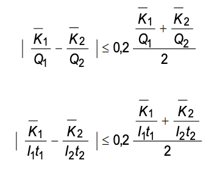
where
K₁ , K₂ are the averages of the MEASURED VALUES of AIR KERMA;
Q₁ and Q₂ are the indicated CURRENT TIME PRODUCTS;
I₁ and I₂ are the indicated X-RAY TUBE CURRENTS;
t₁ and t₂ are the indicated LOADING TIMES.
Compliance is checked by the following test PROCEDURE:
Make 10 measurements of AIR KERMA in 1 h under the test conditions according to 203.6.3.2.103,
at each of the test settings E and F according to Table 203.101.
Calculate the average value of AIR KERMA for the two measurements series. Use these average
values and those for test settings C and D to verify compliance according to the formula.
Table 203.101 – Tests for verifying reproducibility and linearity
| Test setting |
A |
B |
C |
D |
E |
F |
| X-RAY TUBE VOLTAGE |
Lowest |
Highest |
50 % of highest |
80 % of highest |
50 % of highest |
80 % of highest |
X-RAY TUBE CURRENT or
CURRENT TIME PRODUCTa |
Highest |
Lowest |
Giving
1 µGy to 5 µGyb |
Adjacent to
setting for C and D |
| LOADING TIME |
Between 0,01 s and 0,32 s for all settings |
|
a As available with the settings defined in previous rows.
b DOSE values correspond to the air kerma in the IMAGE RECEPTION PLANE.
|
-
Reproducibility of automatic exposure controls for direct radiography
In the operation of an AUTOMATIC EXPOSURE CONTROL in RADIOGRAPHY to control IRRADIATION for
DIRECT
RADIOGRAPHY, the reproducibility shall comply with the following requirements, either:
-
the coefficient of variation of MEASURED VALUES of AIR KERMA shall be not
greater than 0,05; or
-
the variation of optical density in the resultant RADIOGRAMS shall not
exceed a value of 0,10 for unchanged X-RAY TUBE VOLTAGE and constant thickness of the
irradiated object.
Compliance is checked by the following test PROCEDURES:
-
Consistency of automatic exposure controls for direct radiography
In the operation of an AUTOMATIC EXPOSURE CONTROL in RADIOGRAPHY to control IRRADIATION for
DIRECT
RADIOGRAPHY, the variation of optical density in the resultant RADIOGRAMS shall not exceed a
value
of:
-
0,15 arising from changes of the X-RAY TUBE VOLTAGE, the thickness of the
irradiated object being constant,
-
0,20 arising from changes in the thickness of the irradiated object, the
X-RAY TUBE VOLTAGE being constant,
-
0,20 arising from changes in both the X-RAY TUBE VOLTAGE and the thickness
of the irradiated object.
Compliance is checked by the following test PROCEDURE:
-
Method:
Measure the optical density of RADIOGRAMS of PHANTOMS made of water or other tissue
equivalent material, produced with the AUTOMATIC EXPOSURE CONTROL in operation.
Determine
the variations of density for different PHANTOM thicknesses and for different X-RAY TUBE
VOLTAGES.
-
Test arrangement:
Use a test arrangement with the following characteristics:
-
a FOCAL SPOT TO IMAGE RECEPTOR DISTANCE of 1 m or corresponding to
the INTENDED USE, remaining unchanged for all tests in a series;
-
an 18 cm x 24 cm RADIOGRAPHIC CASSETTE as X-RAY IMAGE RECEPTOR,
the same cassette being used for all tests in a series;
-
an X-RAY SOURCE ASSEMBLY of a type specified for use with the
HIGH-VOLTAGE GENERATOR under test. The X-RAY FIELD is aligned and adjusted to 18 cm
x 24 cm at the ENTRANCE SURFACE of the cassette and remains unchanged for all tests
in a series;
-
provision for mounting the measuring chamber of the AUTOMATIC
EXPOSURE CONTROL in a manner and position corresponding to the INTENDED USE;
-
provision of PHANTOMS of three different thicknesses, 10 cm, 15 cm
and 20 cm, each of a size to cover the cassette fully, the PHANTOM in use for a
particular test being mounted as close as possible to the ENTRANCE SURFACE of the
cassette;
-
provision of a focused grid having the appropriate application
limits;
-
provision for accurate and reproducible film processing and for
measuring the optical density of the processed films.
-
Radiographic film and intensifying screen:
Use a combination of RADIOGRAPHIC FILM and INTENSIFYING SCREEN of a type specified to be
suitable for the INTENDED USE of the AUTOMATIC EXPOSURE CONTROL.
For any one series of tests, select pieces of film from the same batch, for which
consistency of characteristics has been verified.
-
Setting the automatic exposure control:
-
Select the central field of the measuring chamber of the AUTOMATIC
EXPOSURE CONTROL.
-
Make any adjustments required in accordance with the instructions
for use to apply the density correction for the type of film-screen combination in
use and to produce a measured optical density in the processed film of 1,1 to 1,3,
when operating at an X-RAY TUBE VOLTAGE of 80 kV, using the 15 cm PHANTOM.
-
Selecting the X-RAY TUBE CURRENT:
Except when testing an AUTOMATIC EXPOSURE CONTROL that operates with a fixed LOADING
TIME,
select a value of X-RAY TUBE CURRENT that will result in LOADING TIMES during the tests
exceeding three times the shortest specified LOADING TIME but not exceeding 1 s. Record
any
selected value.
If no suitable value of X-RAY TUBE CURRENT can be selected, use a different FOCAL SPOT
TO
IMAGE RECEPTOR DISTANCE to enable the stated range of LOADING TIMES to be achieved with
the
available setting of X-RAY TUBE CURRENT closest to the determined suitable value.
-
Test LOADINGS:
Make eight test LOADINGS, using the combinations of X-RAY TUBE VOLTAGE and PHANTOM
thickness
indicated in Table 203.102 and four additional LOADINGS at 80 kV with 15 cm PHANTOM
thickness. Process the films; measure and record the optical density of each image.
Table 203.102 – LOADINGS for testing automatic exposure controls
X-RAY TUBE VOLTAGEa
kV |
PHANTOM thicknesses
cm |
| 60b |
10 and 15 |
| 80 |
15 and 20 |
| 100 |
15 and 20 |
| 120b |
10 and 15 |
|
a If any of these values are not selectable, use the
nearest selectable value.
b If this value is outside the specified range, use the
nearest value within the specified range and select other values as
evenly spaced as possible in the reduced range.
|
-
Compliance criteria
Compliance is achieved if
-
for the four LOADINGS made with the 15 cm PHANTOM with different X-RAY TUBE
VOLTAGES, no MEASURED VALUE of optical density differs by more than 0,15 from
the mean of the four values and no value differs by more than 0,15 from the value
for an adjacent step of X-RAY TUBE VOLTAGE,
-
for each of the four pairs of LOADINGS made at the same X-RAY TUBE VOLTAGE (with
PHANTOMS of different thickness), no MEASURED VALUE of optical density differs by
more than 0,2 from the other value in the pair,
-
for the whole series of eight LOADINGS, no MEASURED VALUE of optical density
differs by more than 0,2 from the mean of the eight values,
-
for five LOADINGS at constant test parameters, 80 kV with 15 cm PHANTOM
thickness, no MEASURED VALUE of optical density differs by more than 0,1 from the
mean value of the five values.
-
Reproducibility of automatic exposure controls for indirect radiography
In the operation of an AUTOMATIC EXPOSURE CONTROL in RADIOGRAPHY to control IRRADIATION
for INDIRECT RADIOGRAPHY with DIGITAL X-RAY IMAGING DEVICES, the reproducibility shall
comply with one of the following requirements:
-
either the ratio between the highest and the lowest MEASURED VALUES of AIR KERMA shall be
less than 1.2; or
-
with integrated DIGITAL X-RAY IMAGING DEVICES the ratio between the highest and the lowest
mean LINEARIZED DATA on a constant REGION OF INTEREST shall be less than 1.2 for constant
X-RAY TUBE VOLTAGE and constant thickness of the irradiated object; or
-
with integrated DIGITAL X-RAY IMAGING DEVICES and if the EXPOSURE INDEX according to IEC
62494-1:2008 is displayed the ratio between the highest and the lowest EXPOSURE INDEX in the
RELEVANT IMAGE REGION shall be less than 1.2 for constant X-RAY TUBE VOLTAGE and constant
thickness of the irradiated object.
Compliance is checked by the following test PROCEDURES:
203.6.3.2.103 Conditions for measuring AIR KERMA
203.6.3.2.103.1 Measuring arrangements
Arrange the HIGH-VOLTAGE GENERATOR or subassembly under test in a suitable combination with
an X-RAY SOURCE ASSEMBLY (and, if applicable, with other subassemblies needed to constitute
an X-RAY GENERATOR) specified in the ACCOMPANYING DOCUMENTS of the unit under test as
suitable for this purpose.
Align the X-RAY SOURCE ASSEMBLY, the DIAPHRAGM and the RADIATION DETECTOR under NARROW
BEAM CONDITION.
Arrange the attenuating material needed near the X-RAY SOURCE ASSEMBLY or select the
attenuating material specified in 203.6.3.2.103.2 b). Verify the RADIATION QUALITY according to
203.6.3.2.103.2 a).
203.6.3.2.103.2 ATTENUATION and RADIATION QUALITY for measurement of AIR KERMA
- a) Radiation quality
Ensure that the RADIATION QUALITY of the X-RAY BEAM emerging from the X-RAY SOURCE
ASSEMBLY complies with applicable specified conditions for NORMAL USE. If no such
conditions are specified, ensure that the TOTAL FILTRATION in the X-RAY SOURCE ASSEMBLY is
such as to comply with the HALF-VALUE LAYER requirements in IEC 60601-1-3:2008, Table 3,
as applicable.
- b) Attenuation
To simulate the presence of a PATIENT during the measurement of AIR KERMA, add a layer of
aluminium with a thickness related to the selected X-RAY TUBE VOLTAGE in accordance with
Table 203.103 and of sufficient size to intercept the whole of the X-RAY BEAM.
Table 203.103 – ATTENUATION for the measurement of AIR KERMA
X-RAY TUBE VOLTAGE
up to and including
kV |
Thickness of aluminium
mm |
| 40 |
4 |
| 50 |
10 |
| 60 |
16 |
| 70 |
21 |
| 80 |
26 |
| 90 |
30 |
| 100 |
34 |
| 120 |
40 |
| 150 |
45 |
|
NOTE RADIATION QUALITIES RQA 2 to RQA 10, IEC
61267:2005. [2]1)
|
203.6.3.101 Limitation of the REFERENCE AIR KERMA RATE in RADIOSCOPY
ME EQUIPMENT designed for RADIOSCOPY shall be provided with means for the available
combinations of LOADING FACTORS in RADIOSCOPY to be restricted to correspond, in particular
installations, to any limit on the maximum AIR KERMA RATE that is necessary to comply with local
regulations.
Compliance is checked by inspection and by the appropriate functional tests.
203.6.3.102 * High-level control (HLC)
If X-RAY EQUIPMENT specified for RADIOSCOPY include MODES OF OPERATION designed to produce
REFERENCE AIR KERMA RATES greater than 88 mGy/min or than those REFERENCE AIR KERMA RATES
specified in 203.6.3.101, these MODES OF OPERATION, described as high-level controls, shall be
operable only when the OPERATOR provides continuous manual activation. When a high-level
control is provided, a continuous signal audible to the OPERATOR shall indicate that the high-level
control is being activated.
When high-level controls are activated, the X-RAY EQUIPMENT shall not be operable at any
combination of X-RAY TUBE VOLTAGE and X-RAY TUBE CURRENT that will result in a REFERENCE
AIR KERMA RATE in excess of 176 mGy/min.
1) Figures in square brackets refer to the bibliography.
For the application of this requirement to C-arm X-RAY EQUIPMENT, the REFERENCE AIR KERMA
RATE shall be replaced by the AIR KERMA RATE measured at 30 cm from the ACCESSIBLE SURFACE
of the X-RAY IMAGE RECEPTOR.
NOTE: Lower limits can be applicable according to different local regulations.
Compliance is checked by inspection and tests. Tests shall be performed by measurement of
the maximum entrance REFERENCE AIR KERMA RATE at the PATIENT ENTRANCE REFERENCE POINT
for non-C-arm X-RAY EQUIPMENT, and, for C-arm X-RAY EQUIPMENT, at the point specified above.
For the application of this requirement to C-arm X-RAY EQUIPMENT, the REFERENCE AIR KERMA
RATE shall be replaced by the AIR KERMA RATE measured at 30 cm from the ACCESSIBLE SURFACE
of the X-RAY IMAGE RECEPTOR.
NOTE: Lower limits can be applicable according to different local regulations.
Compliance is checked by inspection and tests. Tests shall be performed by measurement of
the maximum entrance REFERENCE AIR KERMA RATE at the PATIENT ENTRANCE REFERENCE POINT
for non-C-arm X-RAY EQUIPMENT, and, for C-arm X-RAY EQUIPMENT, at the point specified above.
203.6.4 Indication of operational states
203.6.4.2 Indication of LOADING STATE
Addition:
The LOADING STATE shall be indicated by a yellow indicator on the CONTROL PANEL.
Compliance is checked by inspection.
203.6.4.3 Indication of loading factors and modes of operation
203.6.4.3.101 General requirements for the indication of LOADING FACTORS
The units of indication shall be as follows:
- for X-RAY TUBE VOLTAGE, kilovolts;
- for X-RAY TUBE CURRENT, milliamperes;
- for LOADING TIME, seconds and/or milliseconds;
- for CURRENT TIME PRODUCT, milliampereseconds;
-
in RADIOSCOPY, the LOADING TIME may be indicated in minutes and seconds or decimally in
minutes.
If pulse rate or pulse width in pulsed RADIOSCOPY is selectable, then the units of indication shall
be as follows:
- for duration of X-RADIATION pulse, milliseconds;
- for X-RADIATION pulse repetition frequency, number of pulses per second.
Compliance is checked by inspection.
203.6.4.3.102 Shortened indication of LOADING FACTORS
-
For HIGH-VOLTAGE GENERATORS operating with one or more fixed combinations of
LOADING
FACTORS the indication on the CONTROL PANEL may be confined to the value of only one of
the significant LOADING FACTORS for each combination, for example the value of X-RAY TUBE
VOLTAGE.
In this case, the indication of the corresponding values of the other LOADING FACTORS in each
combination shall be given in the instructions for use.
In addition, these values shall be listed in a form suitable to be displayed at a prominent
location on or near the CONTROL PANEL.
-
For HIGH-VOLTAGE GENERATORS operating with fixed combinations of
semi-permanently
preselectable (such as anatomic programmable) LOADING FACTORS, the indication on the
CONTROL PANEL may be confined to a clear reference to the identity of each combination.
In this case, provisions shall be made to enable
-
the values of each combination of semi-permanently preselected LOADING FACTORS set at the
time of installation to be recorded in the instructions for use, and in addition to enable
-
the values to be listed in a suitable form to be displayed at a prominent location on or
near the CONTROL PANEL.
Compliance is checked by inspection.
203.6.4.3.103 Indication of varying LOADING FACTORS
For HIGH-VOLTAGE GENERATORS operating with AUTOMATIC INTENSITY CONTROL in RADIOSCOPY,
continuous indication of the LOADING FACTORS that vary shall be given at the CONTROL PANEL.
Compliance is checked by inspection.
203.6.4.3.104 Accuracy of LOADING FACTORS
203.6.4.3.104.1 General aspects for the accuracy of LOADING FACTORS
In HIGH-VOLTAGE GENERATORS the requirements of this subclause apply to the accuracy of all
values of LOADING FACTORS, whether indicated, fixed or preselected when compared with
MEASURED VALUES of the same LOADING FACTOR.
Compliance is checked by inspection and tests.
203.6.4.3.104.2 Accuracy of LOADING FACTORS in automatic control mode
In X-RAY EQUIPMENT with AUTOMATIC CONTROL SYSTEMS when the X-RAY TUBE VOLTAGE or the
X-RAY TUBE CURRENT, or both, is intended to vary during the IRRADIATION, the accuracy of the
intentionally varied LOADING FACTOR required in 203.6.4.3.104.3 and 203.6.4.3.104.4, shall be
disregarded.
203.6.4.3.104.3 Accuracy of X-RAY TUBE VOLTAGE
For operation of a HIGH-VOLTAGE GENERATOR in any specified combination with subassemblies
and components of an X-RAY GENERATOR, the error in the indicated value of the X-RAY TUBE
VOLTAGE, in any combination of LOADING FACTORS, shall be not greater than 8%.
The increment or decrement of the X-RAY TUBE VOLTAGE between any two indicated settings
shall be within 50% and 150% of the indicated change.
Compliance is checked by the following test PROCEDURE, using a test instrument with
appropriate uncertainty:
-
RADIOGRAPHY
One measurement shall be made at the lowest indicated value of X-RAY TUBE VOLTAGE, the
highest available X-RAY TUBE CURRENT for that X-RAY TUBE VOLTAGE and the shortest
indicated value of LOADING TIME.
One measurement shall be made at the lowest indicated value of X-RAY TUBE VOLTAGE, the
highest available X-RAY TUBE CURRENT for that X-RAY TUBE VOLTAGE and a LOADING TIME of
approximately 0.1 s.
One measurement shall be made at the highest indicated value of X-RAY TUBE VOLTAGE and
the highest available X-RAY TUBE CURRENT for that X-RAY TUBE VOLTAGE and a LOADING TIME
of approximately 0.1 s.
-
RADIOSCOPY
One measurement shall be made at 90% of the maximum available X-RAY TUBE VOLTAGE
and any X-RAY TUBE CURRENT.
One measurement shall be made at 60% of the maximum available X-RAY TUBE VOLTAGE
and any X-RAY TUBE CURRENT.
203.6.4.3.104.4 Accuracy of X-RAY TUBE CURRENT
For operation of HIGH-VOLTAGE GENERATORS in any specified combination with subassemblies
and components of an X-RAY GENERATOR, the error in the indicated value of the X-RAY TUBE
CURRENT, in any combination of LOADING FACTORS, shall be not greater than 20%.
Compliance is checked by the following test PROCEDURE:
-
RADIOGRAPHY
One measurement shall be made at the lowest indicated value of X-RAY TUBE CURRENT, the
highest indicated value of X-RAY TUBE VOLTAGE and the shortest indicated value of LOADING
TIME.
One measurement shall be made at the lowest indicated value of X-RAY TUBE CURRENT, the
highest indicated value of X-RAY TUBE VOLTAGE and a LOADING TIME of approximately 0.1 s.
One measurement shall be made at the highest indicated value of X-RAY TUBE CURRENT, the
highest available X-RAY TUBE VOLTAGE for the tested X-RAY TUBE CURRENT and a LOADING
TIME of approximately 0.1 s.
-
RADIOSCOPY
One measurement shall be made at 20% of the maximum available X-RAY TUBE CURRENT
and the lowest available X-RAY TUBE VOLTAGE.
One measurement shall be made at 20% of the maximum available X-RAY TUBE CURRENT
and the highest available X-RAY TUBE VOLTAGE.
203.6.4.3.104.5 Accuracy of LOADING TIME
For operation of HIGH-VOLTAGE GENERATORS in any specified combination with subassemblies
and components of an X-RAY GENERATOR, the error in the indicated value of the X-RAY TUBE
LOADING TIME, in any combination of LOADING FACTORS, shall be not greater than
± (10% + 1 ms).
Compliance is checked by the following test PROCEDURE:
One measurement shall be made at the lowest indicated value of LOADING TIME, the highest
indicated value of X-RAY TUBE VOLTAGE and any indicated value of X-RAY TUBE CURRENT.
One measurement shall be made at the lowest indicated value of LOADING TIME and the highest
available electric power, P.
203.6.4.3.104.6 Accuracy of CURRENT TIME PRODUCT
For operation of HIGH-VOLTAGE GENERATORS in any specified combination with subassemblies
and components of an X-RAY GENERATOR, the error in the indicated value of the X-RAY TUBE
CURRENT TIME PRODUCT, in any combination, shall be not greater than ± (10% + 0.2 mAs).
This requirement also applies in cases when the CURRENT TIME PRODUCT is derived by
calculation.
Compliance is checked by the following test PROCEDURE:
One measurement shall be made at the lowest INDICATED VALUE of CURRENT TIME PRODUCT and
the highest available X-RAY TUBE VOLTAGE.
One measurement shall be made at the highest INDICATED VALUE of CURRENT TIME PRODUCT and
the lowest available X-RAY TUBE VOLTAGE.
203.6.4.3.104.4 Accuracy of X-RAY TUBE CURRENT
For operation of HIGH-VOLTAGE GENERATORS in any specified combination with subassemblies
and components of an X-RAY GENERATOR, the error in the indicated value of the X-RAY TUBE
CURRENT, in any combination of LOADING FACTORS, shall be not greater than 20%.
Compliance is checked by the following test PROCEDURE:
-
RADIOGRAPHY
One measurement shall be made at the lowest indicated value of X-RAY TUBE CURRENT, the
highest indicated value of X-RAY TUBE VOLTAGE and the shortest indicated value of LOADING TIME.
One measurement shall be made at the lowest indicated value of X-RAY TUBE CURRENT, the
highest indicated value of X-RAY TUBE VOLTAGE and a LOADING TIME of approximately 0.1 s.
One measurement shall be made at the highest indicated value of X-RAY TUBE CURRENT, the
highest available X-RAY TUBE VOLTAGE for the tested X-RAY TUBE CURRENT and a LOADING TIME of
approximately 0.1 s.
-
RADIOSCOPY
One measurement shall be made at 20% of the maximum available X-RAY TUBE CURRENT
and the lowest available X-RAY TUBE VOLTAGE.
One measurement shall be made at 20% of the maximum available X-RAY TUBE CURRENT
and the highest available X-RAY TUBE VOLTAGE.
203.6.4.3.104.5 Accuracy of LOADING TIME
For operation of HIGH-VOLTAGE GENERATORS in any specified combination with subassemblies
and components of an X-RAY GENERATOR, the error in the indicated value of the X-RAY TUBE
LOADING TIME, in any combination of LOADING FACTORS, shall be not greater than
± (10% + 1 ms).
Compliance is checked by the following test PROCEDURE:
One measurement shall be made at the lowest indicated value of LOADING TIME, the highest
indicated value of X-RAY TUBE VOLTAGE and any indicated value of X-RAY TUBE CURRENT.
One measurement shall be made at the lowest indicated value of LOADING TIME and the highest
available electric power, P.
203.6.4.3.104.6 Accuracy of CURRENT TIME PRODUCT
For operation of HIGH-VOLTAGE GENERATORS in any specified combination with subassemblies
and components of an X-RAY GENERATOR, the error in the indicated value of the X-RAY TUBE
CURRENT TIME PRODUCT, in any combination, shall be not greater than ± (10% + 0.2 mAs).
This requirement also applies in cases when the CURRENT TIME PRODUCT is derived by calculation.
Compliance is checked by the following test PROCEDURE:
One measurement shall be made at the lowest INDICATED VALUE of CURRENT TIME PRODUCT and
the highest available X-RAY TUBE VOLTAGE.
One measurement shall be made at the highest INDICATED VALUE of CURRENT TIME PRODUCT and
the lowest available X-RAY TUBE VOLTAGE.
203.6.4.3.105 Indication of ADDED FILTERS
If the X-RAY EQUIPMENT has provisions to select ADDED FILTERS by remote control or through an
automatic system, the selected ADDED FILTER shall be indicated to the OPERATOR at a location
appropriate for the INTENDED USE. If the FILTER change is automatic, it may be displayed after
the termination of IRRADIATION.
Compliance is checked by inspection and functional tests.
203.6.4.3.106 *Electronic documentation of EXAMINATION
PROTOCOLS
X-RAY EQUIPMENT that includes EXAMINATION PROTOCOL SELECTION CONTROL should provide
access to the electronic documentation of those parameters invoked by each available
PRE-PROGRAMMED EXAMINATION PROTOCOL in a defined format file (e.g., xml format, comma-separated format,
space-separated format) and export to an output device.
This electronic documentation should include the selected settings for each adjustable or selectable
parameter
in each PRE-PROGRAMMED EXAMINATION PROTOCOL.
Data elements incorporated in the electronic documentation should also include the date of
configuration of the set of PRE-PROGRAMMED EXAMINATION PROTOCOLS.
If access to modify the PRE-PROGRAMMED EXAMINATION PROTOCOLS is provided, means shall be
provided to track the date of the last change, and means shall be provided to enter an identifier
for the agent responsible for the change.
X-RAY EQUIPMENT that provides electronic documentation of EXAMINATION PROTOCOLS shall
provide either:
- access to a media output device; or
- access to a networked output device to transmit the electronic documentation
through.
NOTE Additional equipment can be applicable (e.g., PC, CD/DVD drive, approved USB device, laptop wired
by
Ethernet connection, etc.) to enable export.
If a PRE-PROGRAMMED EXAMINATION PROTOCOL contains adjustable or selectable parameters, the
MANUFACTURER'S default value of each such parameter shall be provided.
Means should be recommended or provided to allow flagging differences between two or more
PRE-PROGRAMMED EXAMINATION PROTOCOLS to assist in the local review and clinical audit
process.
The means may be external to the X-RAY EQUIPMENT and, if so, it does not need to be considered
a medical device.
Compliance is checked by inspection and appropriate functional tests.
203.6.4.4 Indication of automatic modes
Addition:
For X-RAY EQUIPMENT operating in RADIOGRAPHY in which AUTOMATIC EXPOSURE CONTROL is
achieved by varying one or more LOADING FACTORS, information about the range and
interrelation of these LOADING FACTORS shall be given in the instructions for use.
Compliance is checked by inspection and by the appropriate functional tests.
203.6.4.5 *Dosimetric indications
Addition:
The ACCOMPANYING DOCUMENTS shall provide information on the performance of the dosimetric
indications and describe the operations required to maintain this performance within the
specification.
Means shall be provided to reset to zero the values of all the cumulative dosimetric indications
prior to the commencement of a new examination or PROCEDURE.
X-RAY EQUIPMENT specified for either RADIOSCOPY or RADIOSCOPY and RADIOGRAPHY shall satisfy
the following requirements:
X-RAY EQUIPMENT specified for INDIRECT RADIOSCOPY and/or SERIAL RADIOGRAPHY shall be
provided with an indication of the cumulative DOSE AREA PRODUCT
resulting from RADIOGRAPHY
and, when applicable, from RADIOSCOPY since the last reset operation. The DOSE AREA PRODUCT
may be measured or calculated. The value shall be expressed in Gy·m²
with appropriate SI
prefixes. The overall uncertainty in the displayed values of the cumulative DOSE AREA PRODUCT
above 5 μGy·m² shall not exceed 35 %.
This DOSE AREA PRODUCT indication need not be provided at the working position of the
OPERATOR.
X-RAY EQUIPMENT specified for INDIRECT RADIOGRAPHY shall be provided with an indication of the
DOSE AREA PRODUCT for each exposure. The DOSE AREA PRODUCT may be measured or
calculated.
DOSE AREA PRODUCT METERS, if part of the X-RAY EQUIPMENT, shall comply with
IEC 60580:2019.
X-RAY EQUIPMENT specified for DIRECT RADIOGRAPHY should satisfy the same requirement as
specified above for INDIRECT RADIOGRAPHY. Alternatively, the following minimal requirements
may be met:
-
The value of the REFERENCE AIR KERMA resulting from the last radiographic IRRADIATION shall
be displayed in mGy together with this unit, until initiation of
the next radiographic
IRRADIATION.
-
Means shall be provided allowing the determination of the area of the X-RAY FIELD in the
plane normal to the X-RAY BEAM AXIS containing the PATIENT ENTRANCE REFERENCE POINT,
based on the available information concerning the extent of the X-RAY BEAM. The maximum
deviation between the value determined using these means and the actual value shall be
less than 40 % of the actual value for areas larger than 200 cm².
NOTE Examples of such means are tables, nomograms, programmable calculators or computers together with
the
relevant program.
Compliance is checked by inspection and by the appropriate functional tests. The tests for the
REFERENCE AIR KERMA RATE and the cumulative REFERENCE AIR KERMA shall be performed with a
LOADING STATE of duration longer than 3 s.
Additional subclauses:
203.6.4.5.101 Radiation dose structured reports
X-RAY EQUIPMENT specified for RADIOGRAPHY or RADIOSCOPY or RADIOGRAPHY and RADIOSCOPY
should create RADIATION DOSE STRUCTURED REPORTS (RDSR) and have the ability to perform an
RDSR END OF PROCEDURE TRANSMISSION. If RDSR is provided, it shall conform to at least the basic
dose documentation specified in IEC 61910-1. The relevant elements for the specified type of
X-RAY EQUIPMENT and for which data are available shall be populated with relevant data.
Compliance is checked by functional tests.
203.6.4.101 Indication of READY STATE
Visible indication shall be provided indicating the state when one further actuation of a control
will initiate the LOADING of the X-RAY TUBE in RADIOGRAPHY.
If this state is indicated in RADIOGRAPHY by means of a single function visual indicator, the colour
green shall be used.
In RADIOGRAPHY, means should be provided for a connection to enable this state to be indicated
remotely from the CONTROL PANEL. This requirement does not apply for MOBILE X-RAY EQUIPMENT.
Compliance is checked by inspection.
203.6.5 AUTOMATIC CONTROL SYSTEM
Addition:
X-RAY EQUIPMENT specified for INDIRECT RADIOGRAPHY shall be provided with AUTOMATIC
EXPOSURE CONTROL unless the MANUFACTURER provides justifications for exemptions in the RISK
MANAGEMENT FILE.
NOTE Justifications for exemptions can be motivated by technical reasons (e.g.,
MOBILE systems).
X-RAY EQUIPMENT specified for INDIRECT RADIOSCOPY shall be provided with AUTOMATIC INTENSITY
CONTROL. It shall be possible to limit the maximum REFERENCE AIR KERMA RATE to values given by
local rules. For X-RAY EQUIPMENT specified for INDIRECT RADIOSCOPY in which AUTOMATIC
CONTROL SYSTEMS vary one or more LOADING FACTORS, information about the range and
interrelation of these LOADING FACTORS shall be given in the instructions for use.
For X-RAY EQUIPMENT provided with AUTOMATIC EXPOSURE CONTROL, a method by which the
OPERATOR can verify the functioning of these controls shall be provided and the instructions for use
shall contain the description of that method.
For X-RAY EQUIPMENT provided with AUTOMATIC INTENSITY CONTROL, a QUALITY CONTROL mode
shall be provided that enables selection of values, either by a manual control mode or by
selecting preset combination values, of X-RAY TUBE VOLTAGE, X-RAY TUBE CURRENT or X-RAY
CURRENT TIME PRODUCT, LOADING TIME, ADDITIONAL FILTRATION if any and FOCAL SPOT size if
selectable.
Compliance is checked by inspection and by the appropriate functional tests.
203.6.5.101 Determination of the NOMINAL SHORTEST IRRADIATION TIME
For X-RAY EQUIPMENT provided with AUTOMATIC EXPOSURE CONTROL the NOMINAL SHORTEST
IRRADIATION TIME as defined in 203.4.101.4 shall be stated in the instructions for use. The
MEASURED VALUE shall not be greater than the stated value.
Compliance is checked by inspection of the instructions for use and the following test PROCEDURE:
Make an IRRADIATION using the AUTOMATIC EXPOSURE CONTROL with > 70 % of the available
generator power at approximately 80 kV. To determine the average AIR KERMA, adjust the
ATTENUATION in the X-RAY BEAM (preferably by using a water PHANTOM) to achieve a LOADING
TIME close to 0,1 s.
Make several IRRADIATIONS with reduced PHANTOM thicknesses using the same X-RAY TUBE
VOLTAGE and generator power as mentioned above. The PHANTOM thickness shall be varied in
such a way that the LOADING TIME does not vary more than a factor of two between two
IRRADIATIONS.
203.6.6 SCATTERED RADIATION reduction
Replacement:
Means shall be provided to reduce the influence of RADIATION scattered in the PATIENT to the XRAY IMAGE
RECEPTOR in case of significant influence on the image quality. If such means are
ANTI-SCATTER GRIDS which are removable by the OPERATOR, or that can be moved in or out under
manual or automatic control by a motorized mechanism, the presence or absence of the ANTISCATTER GRID
shall be clearly visible or indicated. If the ANTI-SCATTER GRID is removable, it shall
be possible to remove and replace it without the use of TOOLS.
Means shall be provided for using X-RAY EQUIPMENT specified for paediatric applications without
an ANTI-SCATTER GRID.
If different ANTI-SCATTER GRIDS can be used, it shall be possible for the OPERATOR to identify the
grid in place.
The proper use of such means shall be described in the instructions for use.
Compliance is checked by inspection.
203.6.7 Imaging performance
Additional subclause:
203.6.7.101 Display of last image hold radiogram or radioscopy replay image sequence
X-RAY EQUIPMENT specified for INDIRECT RADIOSCOPY shall display either a LIH RADIOGRAM or
a RADIOSCOPY REPLAY IMAGE SEQUENCE following termination of the radioscopic IRRADIATION, and
shall comply with the following:
-
The LIH RADIOGRAM or RADIOSCOPY REPLAY IMAGE SEQUENCE shall be displayed following
termination of the radioscopic IRRADIATION and shall remain visible until an action is taken
by the OPERATOR.
-
Means shall be provided to clearly indicate to the OPERATOR whether a displayed image is:
- an LIH RADIOGRAM or RADIOSCOPY REPLAY IMAGE SEQUENCE, or
- from ongoing RADIOSCOPY.
-
DISPLAY of the LIH RADIOGRAM or the RADIOSCOPY REPLAY IMAGE SEQUENCE shall be replaced
by the RADIOSCOPY image concurrently with reinitiation of radioscopic IRRADIATION, unless a
separate DISPLAY is provided for the RADIOSCOPY images.
-
For a LIH RADIOGRAM obtained by retaining pre-termination RADIOSCOPY images, if the
number of images and method of combining images are selectable by the OPERATOR, the
selection shall be indicated prior to initiation of the radioscopic IRRADIATION.
Compliance is checked by inspection and functional tests.
203.7 RADIATION QUALITY
203.7.1 HALF-VALUE LAYERS and TOTAL FILTRATION in X-RAY EQUIPMENT
Addition:
X-RAY EQUIPMENT specified for paediatric applications shall be provided with means for placing
an ADDED FILTER of not less than 0,1 mm Cu or 3,5 mm Al.
NOTE An appropriate permanently mounted FILTER, not removable by the OPERATOR, satisfies the above
requirement.
Compliance is checked by inspection, by examination of the ACCOMPANYING DOCUMENTS and by
the use, as appropriate, of the test described in 7.5 of IEC 60601-1-3:2008.
203.7.1.101 Filtration in X-ray source assemblies
X-RAY SOURCE ASSEMBLIES shall comply with the following requirements:
-
Unless solely intended for use in MOBILE X-RAY EQUIPMENT specified for RADIOSCOPY or for
RADIOGRAPHY and RADIOSCOPY during surgery, X-RAY SOURCE ASSEMBLIES shall be provided
with means to mount, to dismount, or to select one or more ADDED FILTERS, without the use
of TOOLS. Any such selectable ADDED FILTERS shall comply with the following requirements:
- They shall be identifiable when in position for the INTENDED USE;
-
If a selectable ADDED FILTER is necessary to attain the requirements for TOTAL FILTRATION
in X-RAY EQUIPMENT, given in 7.1 of IEC 60601-1-3:2008, means shall be provided to
enable the presence of the appropriate selectable ADDED FILTER to be detected by the
control system of an associated HIGH-VOLTAGE GENERATOR and LOADING prevented if the
necessary ADDED FILTER is not detected;
-
The ACCOMPANYING DOCUMENTS shall include, in the ASSEMBLING INSTRUCTIONS given for
particular applications, instructions for attaining the TOTAL FILTRATION required to comply
with 7.1 of IEC 60601-1-3:2008 in respect of the items of X-RAY EQUIPMENT concerned.
Compliance is checked by inspection, by examination of the ACCOMPANYING DOCUMENTS and by
the use, as appropriate, of the test described in 7.6 of IEC 60601-1-3:2008.
203.8 Limitation of the extent of the X-RAY BEAM and relationship between X-RAY FIELD and IMAGE
RECEPTION AREA
203.8.4 Confinement of EXTRA-FOCAL RADIATION
Addition:
X-RAY SOURCE ASSEMBLIES shall be so constructed that the zone of intersection of all straight
lines that pass through all RADIATION APERTURES of the X-RAY SOURCE ASSEMBLY, with a plane
normal to the REFERENCE AXIS at 1 m from the FOCAL SPOT shall not extend more than 15 cm
outside the boundary of the largest selectable X-RAY FIELD.
Compliance is checked by examination of the design documentation. In Figure 203.101, w1
represents the width of the largest selectable X-RAY FIELD in a plane P,
which is perpendicular
to the REFERENCE AXIS at 1 m from the FOCAL SPOT. The zone of intersection with plane P of all
straight lines passing through all RADIATION APERTURES extends beyond w1
by the distance w2.
The shaded portion of this zone is a region where EXTRA-FOCAL RADIATION can extend beyond
the largest X-RAY FIELD. Compliance is achieved if w2 does not exceed 15
cm.
203.8.5 Relationship between X-RAY FIELD and IMAGE RECEPTION AREA
203.8.5.3 Correspondence between X-ray field and effective image reception area
Addition:
Means shall be provided to enable the X-RAY FIELD to be positioned to cover the REGION OF
INTEREST and, where applicable, the SENSITIVE VOLUMES of the AUTOMATIC EXPOSURE CONTROL
or AUTOMATIC INTENSITY CONTROL.
If the X-RAY FIELD is adjusted in the INTENDED USE for full coverage of the IMAGE RECEPTION AREA,
it shall correspond to the IMAGE RECEPTION AREA within the following limits, as applicable:
-
If the IMAGE RECEPTION AREA is circular, the X-RAY FIELD shall coincide with the IMAGE
RECEPTION AREA as required in a) and b):
-
the X-RAY FIELD measured along a diameter in the direction of greatest misalignment
with the IMAGE RECEPTION AREA shall not extend beyond the boundary of the EFFECTIVE
IMAGE RECEPTION AREA by more than 2 cm; and
-
at least 80% of the area of the X-RAY FIELD shall overlap the EFFECTIVE IMAGE RECEPTION
AREA. EFFECTIVE IMAGE RECEPTION areas smaller than 10 cm in diameter are exempted.
-
X-RAY EQUIPMENT specified for gastro-intestinal examinations with SPOTFILM DEVICES using
also rectangular X-RAY IMAGE RECEPTORS need not comply with this requirement, but neither
the length nor the width of the X-RAY FIELD shall exceed the diameter of the IMAGE RECEPTION
AREA.
-
In X-RAY EQUIPMENT specified for RADIOSCOPY during surgery at a FIXED FOCAL SPOT TO IMAGE
RECEPTOR DISTANCE, in which:
-
there is provision for RADIOGRAPHY using a RADIOGRAPHIC CASSETTE holder, with beam
limitation to a circular X-RAY FIELD for use on a rectangular IMAGE RECEPTION AREA; and
- the orientation of the IMAGE RECEPTION AREA is selectable; and
- the maximum diameter of the X-RAY FIELD does not exceed 40 cm,
the diameter of the X-RAY FIELD may exceed the diagonal dimension of the IMAGE RECEPTION
AREA by an amount not exceeding 2 cm. If the RADIOGRAPHIC CASSETTE holder can extend
beyond the edges of the PRIMARY PROTECTIVE SHIELDING, a warning of this fact shall be stated
in the instructions for use.
-
In cases where the X-RAY FIELD does not correspond to the IMAGE RECEPTION AREA in
accordance with one of the categories above, the following requirements apply:
-
along each of the two major axes of the IMAGE RECEPTION AREA, the total of the
discrepancies between the edges of the X-RAY FIELD and the corresponding edges of the
IMAGE RECEPTION AREA shall not exceed 3% of the indicated FOCAL SPOT TO IMAGE
RECEPTOR DISTANCE when the IMAGE RECEPTION PLANE is normal to the X-RAY BEAM AXIS;
-
the sum of the discrepancies on both axes shall not exceed 4% of the indicated FOCAL
SPOT TO IMAGE RECEPTOR DISTANCE.
NOTE: If a secondary BEAM LIMITING DEVICE is used between PATIENT and X-RAY IMAGE RECEPTOR, this
requirement refers to the percentage of the RADIATION reaching the IMAGE RECEPTION AREA relative to the
RADIATION in front of the secondary BEAM LIMITING DEVICE.
Compliance is checked with the relevant requirements above, by inspection of the
ME EQUIPMENT, by examination of the instructions for use and by measurement of the X-RAY
FIELDS, where appropriate. When automatic adjustment of the RADIATION APERTURE is provided,
allow a period of at least 5 s before measurements are made, for the automatic mechanism to
complete any adjustment occurring during the tests.
When determining compliance with the requirements at a) and b) of the last scenario above,
make the measurements with the REFERENCE AXIS normal to the IMAGE RECEPTION PLANE within
three degrees. As shown in Figure 203.102, the measured discrepancies in the IMAGE
RECEPTION PLANE are represented by c1 and c2 on one axis and by d1 and d2 on the other. If the
FOCAL SPOT TO IMAGE RECEPTOR DISTANCE is S, then for compliance, the following relationships
are true:
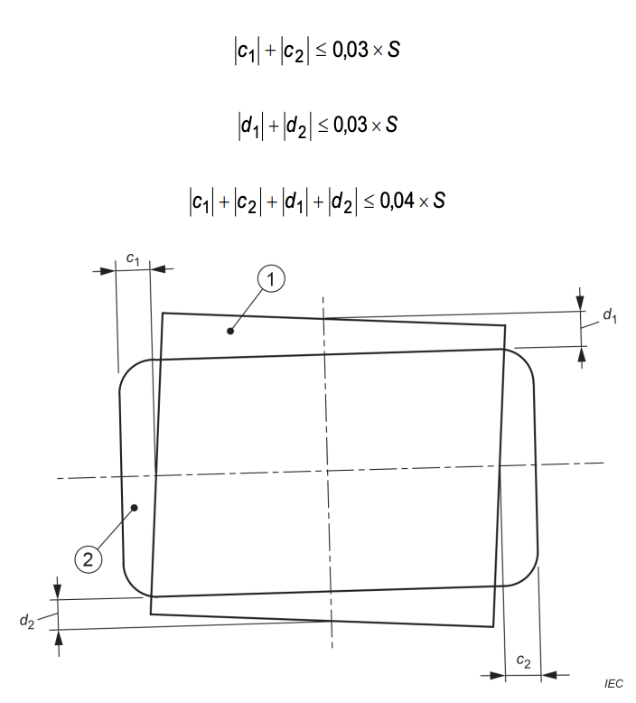
1 X-ray-field
2 IMAGE RECEPTION AREA
Figure 203.102 – Discrepancies in covering the IMAGE RECEPTION AREA
203.8.5.4 Positioning of the PATIENT and restriction of the irradiated area
Addition:
X-RAY EQUIPMENT shall be designed in a way that the OPERATOR is able to select an X-RAY BEAM
of the extent required for the applications concerned and for limiting the maximum available
extent of the X-RAY BEAM to values that are consistent with the specified applications to avoid
unnecessary RADIATION doses to the PATIENT and the staff.
Additional subclauses:
203.8.101 Boundary and dimensions of the X-RAY FIELD
The boundary of an X-RAY FIELD is described by the locus of points at which the AIR KERMA RATE
is 25% of the mean of the AIR KERMA RATES at the approximate centres of the quarters of the
area enclosed.
The dimensions of a rectangular X-RAY FIELD are described in terms of the lengths of its
intercepts on each of two orthogonal major axes in the plane of interest. Given that the X-RAY
BEAM AXIS coincides with the REFERENCE AXIS, it is assumed that the plane of interest is
orthogonal to the REFERENCE AXIS; also that the major axes intersect on the REFERENCE AXIS and
are oriented so that one axis is collinear with the projection of the longitudinal axis of the X-RAY
TUBE ASSEMBLY lying in the plane and passing through this point of intersection. If the X-RAY
BEAM AXIS does not coincide with the REFERENCE AXIS, according to 203.8.104 this shall be stated
in the instructions for use.
For circular X-RAY FIELDS the dimensions are described accordingly by replacing the lengths of
the intercepts with the diameter.
203.8.102 Methods of beam limitation in X-RAY EQUIPMENT
203.8.102.1 General
In X-RAY EQUIPMENT there shall be means to limit the extent of the X-RAY BEAM before impinging
on the PATIENT SURFACE, as applicable:
Where automatic adjustment is provided, the instructions for use shall contain details of a
method by which its operation can be checked and shall describe the method by which the size
of the X-RAY FIELD can be reduced, as required in item c) above.
Compliance is checked by inspection and functional test and by examination of the instructions
for use.
203.8.102.2 Indication on the X-RAY EQUIPMENT
Except as stated in item a) to item c) below, information concerning the extent of the X-RAY
BEAM shall be indicated by DISPLAY on the X-RAY EQUIPMENT.
Indications on the X-RAY EQUIPMENT shall give the following information numerically or by means
of graphical markings or symbols:
-
if numerical markings are used, they shall show the lengths and widths of the available XRAY FIELDS
at one or more typical values of the FOCAL SPOT TO IMAGE RECEPTOR DISTANCE.
Information shall also be included (and can, e.g., be in tabular form) concerning the variation
of the dimensions of X-RAY FIELDS with respect to other relevant FOCAL SPOT TO IMAGE
RECEPTOR DISTANCES;
-
if the indication is given by graphical markings or symbols, these shall show on an
appropriate surface (which can, e.g., be the ENTRANCE SURFACE of a device containing the
X-RAY IMAGE RECEPTOR), how the resultant X-RAY FIELDS are related to the FOCAL SPOT TO
IMAGE RECEPTOR DISTANCES and the selectable combinations or settings of BEAM LIMITING
DEVICES. If the markings do not show explicitly the extent or dimensions of the X-RAY FIELDS
to be obtained, this information shall be given with an explanation of the markings in the
instructions for use.
Indication by DISPLAY on the X-RAY EQUIPMENT need not be given in the following cases:
-
X-RAY EQUIPMENT so constructed that the X-RAY FIELDS at the distances of interest are
obtained, prior to LOADING, without selection by the OPERATOR;
-
X-RAY EQUIPMENT constructed with an INTERLOCK that prevents LOADING unless an X-RAY
FIELD of appropriate extent has been selected;
-
for modes of operation of X-RAY EQUIPMENT in which the boundaries of the X-RAY FIELD can
be displayed in RADIOSCOPY.
X-RAY EQUIPMENT specified for RADIOSCOPY should provide a graphical representation of the
boundaries of the X-RAY FIELD on the image DISPLAY while the BEAM LIMITING DEVICE is adjusted
when no IRRADIATION SWITCH is actuated. This representation shall be:
- provided at the working position of the OPERATOR, and
- updated during BEAM LIMITING DEVICE adjustment.
Compliance is checked by inspection of the X-RAY EQUIPMENT and by examination of the
ACCOMPANYING DOCUMENTS.
203.8.102.3 Indication in the instructions for use
The instructions for use shall contain the information necessary to enable the OPERATOR to
determine, prior to LOADING, the extent of all X-RAY FIELDS for the INTENDED USE, in terms of their
dimensions at appropriate FOCAL SPOT TO IMAGE RECEPTOR DISTANCES for the available
selections, combinations and settings of the BEAM LIMITING DEVICES.
Compliance is checked by inspection of the X-RAY EQUIPMENT and by examination of the
instructions for use.
203.8.102.4 Accuracy of marked and written indications
Unless exempted below, the size of the X-RAY FIELD given by markings on the X-RAY EQUIPMENT
or by statements in the instructions for use in accordance with 203.8.102.2 and 203.8.102.3
shall not differ from the size of the X-RAY FIELD, measured along each of its two major axes in
the plane to which the indication relates, by more than 2% of the distance of that plane from
the FOCAL SPOT.
This requirement is not applicable for X-RAY EQUIPMENT in which the whole area of the
RADIOGRAM is not irradiated simultaneously.
Compliance is checked by inspection of design data and by examination of the ACCOMPANYING
DOCUMENTS. Where appropriate, measure the dimensions of the X-RAY FIELD along its two major
axes, at selected indicated settings of the BEAM LIMITING SYSTEM and of the FOCAL SPOT TO IMAGE
RECEPTOR DISTANCE, as available for the INTENDED USE. For the purpose of calculation, assume
the FOCAL SPOT TO IMAGE RECEPTOR DISTANCE to be equal to the value indicated on the X-RAY
EQUIPMENT or stated in the ACCOMPANYING DOCUMENTS, for the setting used.
203.8.102.5 Indication by LIGHT FIELD-INDICATOR
In X-RAY EQUIPMENT specified for RADIOGRAPHY, a LIGHT FIELD-INDICATOR shall be provided where
appropriate, to assist in delineating the position of the X-RAY FIELD on the PATIENT SURFACE.
Compliance is checked by inspection of the X-RAY EQUIPMENT.
If a LIGHT FIELD-INDICATOR is provided, it shall delineate the edges of the X-RAY FIELD and it shall
provide an average illumination of not less than 100 lx in a plane normal to the X-RAY BEAM AXIS
at a distance of 1 m from the FOCAL SPOT.
At this distance, the contrast at the edge of the LIGHT FIELD as defined below shall have a value
of not less than 3 in MOBILE X-RAY EQUIPMENT and not less than 4 in other X-RAY EQUIPMENT.
The edge of a LIGHT FIELD is described by the locus of points at which the illumination is 25%
of the maximum illumination.
The description of a method to check the dimensions of the LIGHT FIELD at the appropriate
distance from the FOCAL SPOT shall be included in the ACCOMPANYING DOCUMENTS.
Compliance is checked by examination of the ACCOMPANYING DOCUMENTS and by the following test:
-
Check that light-attenuating components as specified by the MANUFACTURER, e.g. the IONIZATION
CHAMBER of a DOSE AREA PRODUCT meter, are in place.
-
If the whole area of the indicated field is illuminated, determine the average illumination as the
mean value from measurements in the approximate centre of each quarter of the LIGHT FIELD.
-
In all other cases, determine the average illumination from at least four measurements at different
points in the centres of the illuminated areas.
-
Measure the contrast, using a measuring aperture not larger than 1 mm. Take the contrast as l₁/l₂,
where l₁ is the illumination 3 mm from the edge of the LIGHT FIELD towards the centre and l₂ is the
illumination 3 mm from the edge of the LIGHT FIELD away from the centre.
- Correct the MEASURED VALUES for ambient illumination.
203.8.102.6 Accuracy of indication with a LIGHT FIELD-INDICATOR
Along each of the two major axes of the X-RAY FIELD in the plane of the LIGHT FIELD, the total of
the discrepancies between the edges of the X-RAY FIELD and the corresponding edges of the
LIGHT FIELD shall not exceed 2% of the distance of the measurement plane of the LIGHT FIELD
from the FOCAL SPOT.
Compliance is checked by measurement, on the two major axes of the X-RAY FIELD, of the
discrepancies between corresponding edges of the X-RAY FIELD and the LIGHT FIELD, in selected
planes at measured distances from the FOCAL SPOT, within the range of NORMAL USE, and normal
to the X-RAY BEAM AXIS within three degrees.
Referring to Figure 203.103, the measured discrepancies are represented by a₁ and a₂ on one
axis and by b₁ and b₂ on the other. If the distance from the FOCAL SPOT to the measurement
plane of the LIGHT FIELD is S, then, for compliance, the following relationships are true:
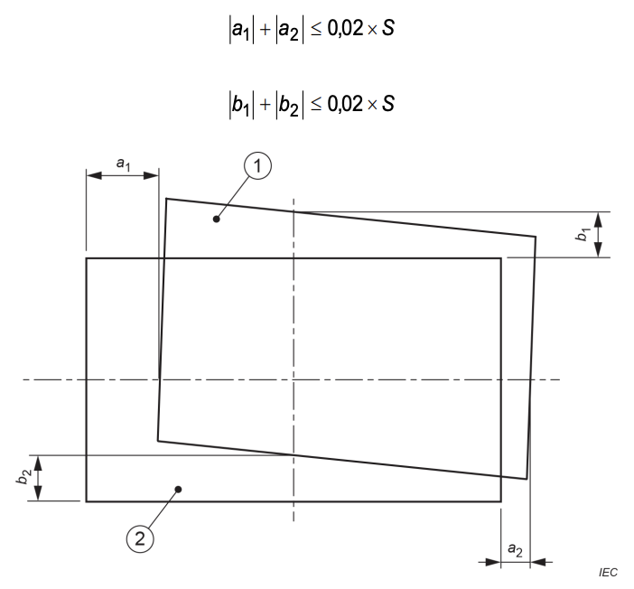
1 Visually defined field
2 X-RAY FIELD
Figure 203.103 – Discrepancies in visual indication of the X-RAY FIELD
203.8.103 Interception of the X-RAY BEAM in RADIOSCOPY
LOADING in RADIOSCOPY shall be prevented unless the X-RAY BEAM AXIS is in the position at which
the correspondence of the X-RAY FIELD to the EFFECTIVE IMAGE RECEPTION AREA is specified to
be in compliance with 203.8.5.3.
LOADING in RADIOSCOPY shall also be prevented if the BEAM LIMITING SYSTEM is adjusted so that,
at the currently selected FOCAL SPOT TO IMAGE RECEPTOR DISTANCE, the X-RAY FIELD can extend
outside the IMAGE RECEPTION AREA by more than the amount permitted by 203.8.5.3.
For X-RAY EQUIPMENT with an adjustable BEAM LIMITING DEVICE, means shall be provided to
configure the boundaries of the X-RAY FIELD so that these boundaries are visible with the X-RAY
BEAM AXIS in a specified orientation. This orientation shall be described in the instructions for
use.
NOTE: This configuration enables boundaries of the BEAM LIMITING DEVICE to be seen on the image DISPLAY
with the
X-RAY FIELD at its maximum size for each magnification mode.
Compliance is checked by inspection, functional test and by examination of the ACCOMPANYING
DOCUMENTS.
203.8.104 Positioning of the X-RAY BEAM AXIS
Compliance is checked by inspection, functional test and by examination of the ACCOMPANYING DOCUMENTS.
203.9 FOCAL SPOT TO SKIN DISTANCE
203.9.1 General
Addition:
Means shall be provided to prevent IRRADIATION with FOCAL SPOT TO SKIN DISTANCES less than those
specified in
203.9.101 and 203.9.102 for the INTENDED USE.
NOTE: Means can include hardware, software, construction, or some other method.
203.9.101 X-RAY EQUIPMENT specified for RADIOSCOPY
FIXED X-RAY EQUIPMENT specified for RADIOSCOPY should be provided with means to prevent the use,
during
radioscopic IRRADIATION, of FOCAL SPOT TO SKIN DISTANCES less than 38 cm.
The FOCAL SPOT TO SKIN DISTANCE shall not be less than 30 cm.
The MOBILE X-RAY EQUIPMENT specified for RADIOSCOPY shall be provided with means to prevent the use,
during
radioscopic IRRADIATION, of FOCAL SPOT TO SKIN DISTANCES less than:
- 20 cm if the X-RAY EQUIPMENT is specified for RADIOSCOPY during surgery; or
- 30 cm for other specified applications.
Compliance is checked by inspection and measurement.
203.9.102 X-RAY EQUIPMENT specified for RADIOGRAPHY
X-RAY EQUIPMENT specified for RADIOGRAPHY:
-
shall be provided with means to prevent radiographic IRRADIATION when the FOCAL SPOT TO SKIN
DISTANCE is smaller than 20 cm; and
-
shall permit by construction the use of FOCAL SPOT TO SKIN DISTANCES of 45 cm or more in NORMAL USE.
NOTE: No means are required to prevent the use of smaller FOCAL SPOT TO SKIN DISTANCES.
Compliance is checked by inspection and measurement.
203.10 ATTENUATION of the X-RAY BEAM between the PATIENT and the X-RAY IMAGE
RECEPTOR
203.10.1 General
Addition:
The ATTENUATION EQUIVALENT of the items listed in Table 203.104, when forming part of X-RAY
EQUIPMENT and located in the path of the X-RAY BEAM between the PATIENT and the X-RAY IMAGE
RECEPTOR, shall not exceed the applicable maximum values given in the table.
Compliance is checked by the test described in 203.10.101.
Table 203.104 – ATTENUATION EQUIVALENT of items in the X-RAY BEAM
| Item |
Maximum
Attenuation Equivalent
mm Al |
| Total of all layers composing the front panel of cassette holder |
1,2 |
| Total of all layers composing the front panel of film changer |
1,2 |
| Total of all layers, excluding detector itself, composing the front panel of digital x-ray
imaging device |
1,2 |
| Cradle |
2,3 |
| Patient support, stationary, without articulated joints |
1,2 |
| Patient support, movable, without articulated joints (including stationary layers) |
1,7 |
| Patient support, with radiolucent panel having one articulated joint |
1,7 |
| Patient support, with radiolucent panel having two or more articulated joints |
2,3 |
| Patient support, cantilevered |
2,3 |
|
NOTE 1 Devices such as radiation detectors are not included in the items listed in this
table.
NOTE 2 Requirements concerning the attenuation properties of radiographic cassettes and
of intensifying screens are given in ISO 4090 [3], for anti-scatter grids in IEC
60627[1].
NOTE 3 Attenuation caused by table mattresses and similar accessories is not included in
the maximum attenuation equivalent for patient support.
NOTE 4 Maximum attenuation equivalent mm Al is only applied to the corresponding item.
If
several items given in this table are located in the path of the x-ray beam between the
patient and the x-ray image receptor, each corresponding maximum attenuation equivalent
mm Al is separately applied to each item.
|
203.10.2 Information in the ACCOMPANYING DOCUMENTS
Addition:
The ACCOMPANYING DOCUMENTS shall state the maximum value of the ATTENUATION EQUIVALENT
for each of the items listed in Table 203.104 and forming part of the X-RAY EQUIPMENT concerned
for the measurement conditions specified in 203.10.101.
For diagnostic X-RAY EQUIPMENT specified to be used in combination with ACCESSORIES or other
items not forming part of the same or another diagnostic X-RAY EQUIPMENT, the instructions for
use shall include a statement drawing attention to the possible adverse effects arising from
materials located in the X-RAY BEAM (e.g., parts of an operating table).
Compliance is checked by examination of the ACCOMPANYING DOCUMENTS.
203.10.101 Test for ATTENUATION EQUIVALENT
Using an X-RAY BEAM with an X-RAY TUBE VOLTAGE of 100 kV, a PERCENTAGE RIPPLE not
exceeding 10%, and a first HALF-VALUE LAYER of 3.6 mm Al determine the ATTENUATION
EQUIVALENT as the thickness of aluminium that gives the same degree of ATTENUATION as the
material under consideration, from measurements of AIR KERMA under NARROW BEAM CONDITIONS.
203.11 Protection against RESIDUAL RADIATION
203.11.101 Requirements
For the appropriate application category, as indicated in Table 203.105, X-RAY EQUIPMENT shall
be provided with PRIMARY PROTECTIVE SHIELDING in accordance with the requirements in
Table 203.106.
These requirements shall be met:
-
for all combinations of X-RAY FIELDS and FOCAL SPOT TO IMAGE RECEPTOR DISTANCES in the INTENDED USE;
-
in RADIOSCOPY, at all angles employed in the INTENDED USE between the X-RAY BEAM AXIS and the IMAGE
RECEPTION PLANE;
- in RADIOGRAPHY, when the X-RAY BEAM AXIS is perpendicular to the IMAGE RECEPTION
PLANE.
If LOADING FACTORS can be controlled only by an AUTOMATIC CONTROL SYSTEM, the ACCOMPANYING
DOCUMENTS shall include instructions for obtaining appropriate LOADING FACTORS for test.
Compliance is checked by inspection, by examination of the design documentation and
ACCOMPANYING DOCUMENTS and by the test described in 203.11.102.
203.11.102 Test for attenuation of residual radiation
Use the following test PROCEDURE:
-
Fit shielding as necessary in the region outside the PRIMARY PROTECTIVE SHIELDING to exclude
from the measurement any X-RADIATION not transmitted through the PRIMARY PROTECTIVE
SHIELDING.
-
Use the smallest selectable TOTAL FILTRATION with which the X-RAY EQUIPMENT can be operated.
Remove ANTI-SCATTER GRIDS and COMPRESSION DEVICES that are specified to be removable.
Use a PHANTOM with an ATTENUATION EQUIVALENT of 40 mm Al, positioned as close as possible to
the FOCAL SPOT.
-
Set distance and field size according to intended application:
- For RADIOSCOPY: Use the largest X-RAY FIELD from within a PROTECTED AREA.
-
Otherwise: Use minimum FOCAL SPOT TO IMAGE RECEPTOR DISTANCE and largest field at that
distance.
- Set the X-RAY TUBE VOLTAGE according to Table 203.106.
-
Use known CURRENT or CURRENT TIME PRODUCT to measure AIR KERMA or AIR KERMA RATE to establish
the RESIDUAL RADIATION profile behind the PRIMARY PROTECTIVE SHIELDING. Measurements at 10 cm
from any ACCESSIBLE SURFACE.
-
Normalize to AIR KERMA per hour or per IRRADIATION at reference LOADING FACTORS (Table 203.106).
-
Adjust for permitted averaging over 100 cm² with max linear dimension of 20 cm.
-
Repeat for other configurations where 203.11.101 applies to ensure full compliance coverage.
-
Compliance is achieved if no MEASURED VALUES exceed the limits in Table 203.106.
Table 203.105 – Application categories
| Specified application(s) |
Application category |
| Radioscopy with radiography – operator near the patient |
A |
| Radioscopy with radiography – control of loading in radiography from a protected area |
B |
| Radioscopy during surgery at a fixed focal spot to image receptor distance |
C |
|
Radiography with a removable radiographic cassette holder fitted to X-ray equipment for
radioscopy during surgery
|
D |
|
Indirect radiography for chest survey when operators or other patients are likely to stand
in the vicinity of the equipment in normal use
|
F |
| Radiography not otherwise included in this table |
None (no requirement) |
Table 203.106 – Requirements for PRIMARY PROTECTIVE SHIELDING
| Application category from Table 203.105 |
Minimum permitted extent beyond the largest image reception area |
Maximum permitted air kerma |
X-ray tube voltage for compliance and testing |
Reference loading factors for compliance |
Additional requirements |
| A |
30 mm |
150 µGy in one hour |
see d |
see e |
see g |
| B |
30 mma |
150 µGy in one hour |
Nominal X-ray tube voltage for radioscopy |
see e |
- |
| C |
20 mm |
150 µGy in one hour |
Nominal X-ray tube voltage |
see e |
- |
| D |
see b |
- |
- |
- |
- |
| F |
see c |
1 µGy per irradiation |
Nominal X-ray tube voltage |
see f |
- |
|
a. In this case, only the image reception area for radioscopy shall be considered.
b. Additional primary protective shielding need not be provided for the removable
radiographic cassette holder. An appropriate warning shall be included in the
instructions for use.
c. The primary protective shielding shall extend beyond the largest image reception area
by at least 2% of the focal spot to image receptor distance.
d. The applicable voltage shall be the nominal X-ray tube voltage for radioscopy or, if
a
spotfilm device is provided, 66% of the nominal X-ray tube voltage for radiography,
whichever is higher.
e. The reference X-ray tube current shall be 3 mA or the value corresponding to the
maximum continuous anode input power, whichever is less.
f. The reference loading factors shall be those corresponding to the maximum energy
input
in a single loading according to the radiographic ratings.
g. The periphery of the required extent of the primary protective shielding shall
correspond to the shape of the radiation aperture, unless the needed primary protective
shielding can be reached otherwise.
|
203.12 Protection against LEAKAGE RADIATION
203.12.4 LEAKAGE RADIATION in the LOADING state
Addition:
SERIAL RADIOGRAPHY initiated by a single actuation shall be considered as one LOADING for this
requirement.
203.13 Protection against STRAY RADIATION
203.13.2 Control of X-RAY EQUIPMENT from a PROTECTED AREA
Addition:
Unless 203.13.3 is applicable and has been complied with, X-RAY EQUIPMENT specified
exclusively for examinations that do not need the OPERATOR or staff to be close to the PATIENT
during the INTENDED USE shall be provided with means to allow the following control functions
to be implemented from a PROTECTED AREA after installation:
Compliance is checked by inspection of the X-RAY EQUIPMENT and by examination of the ACCOMPANYING
DOCUMENTS.
203.13.3 Protection by distance
Addition:
In the following cases, protection against STRAY RADIATION is achieved without provision for
control from a PROTECTED AREA in accordance with 203.13.2, by enabling the OPERATOR to
control IRRADIATION from a distance not less than 2 m from the FOCAL SPOT and the X-RAY BEAM:
- MOBILE X-RAY EQUIPMENT specified exclusively for RADIOGRAPHY;
- X-RAY EQUIPMENT specified for RADIOSCOPY during surgery, with provision for
RADIOGRAPHY.
Compliance is checked by inspection of the X-RAY EQUIPMENT and by examination of the ACCOMPANYING
DOCUMENTS.
203.13.4 Designated SIGNIFICANT ZONES OF OCCUPANCY
Additional subclauses:
203.13.4.101 Significant zones of occupancy with limited stray radiation
The following requirements apply to SIGNIFICANT ZONES OF OCCUPANCY designated in X-RAY
EQUIPMENT specified for gastro-intestinal examinations, incorporating a tilting PATIENT SUPPORT,
an undertable X-RAY SOURCE ASSEMBLY and a SPOTFILM DEVICE above the PATIENT SUPPORT:
Compliance is checked by examination of the ACCOMPANYING DOCUMENTS and by the test described in
203.13.6.
Table 203.107 – STRAY RADIATION in SIGNIFICANT ZONES OF OCCUPANCY
| Orientation of patient support |
Region of height related to the reference point of the radiation detector (above floor) in
the significant zone of occupancy
cm |
Highest permitted air kerma in one hour
mGy |
| Horizontal or vertical |
0 to 40 |
1,5 |
| Horizontal |
40 to 200 |
0,15 |
| Vertical |
40 to 170 |
0,15 |
203.13.4.102 Control from a designated SIGNIFICANT ZONE OF OCCUPANCY
Means shall be provided to allow the control functions as required in 203.13.2 from a SIGNIFICANT ZONE
OF
OCCUPANCY.
Compliance is checked by inspection of the X-RAY EQUIPMENT and by examination of the ACCOMPANYING
DOCUMENTS.
203.13.5 Handgrips and control devices
Addition:
In X-RAY EQUIPMENT specified for gastro-intestinal examinations, incorporating a tilting PATIENT
SUPPORT,
an undertable X-RAY SOURCE ASSEMBLY and a SPOTFILM DEVICE above the PATIENT SUPPORT, the following
limits of AIR KERMA in one hour shall not be exceeded at the positions of handgrips and control devices
that are located outside a SIGNIFICANT ZONE OF OCCUPANCY and that are intended to be handled by the
OPERATOR or staff during LOADING:
- 1,5 mGy in one hour if they need to be handled only infrequently and momentarily;
- otherwise, 0,5 mGy in one hour.
The instructions for use shall list the locations of handgrips and control devices to which limits of
AIR
KERMA apply in this subclause. The instructions for use shall also state the applicable limits and
declare that they are not exceeded under the required test conditions.
Compliance is checked by inspection of the X-RAY EQUIPMENT and, where applicable, by the test in
203.13.6
and by examination of the instructions for use.
203.13.6 Test for STRAY RADIATION
Replacement of the existing item b) by the following new item:
-
tests shall be done with representative orientations of the X-RAY BEAM for the INTENDED USE. As
far as
possible, follow the arrangements and dimensions shown in Figure 203.104 to Figure 203.107;
Addition:
Use the following test PROCEDURE to determine levels of STRAY RADIATION where specific limits apply:
-
use a water equivalent PHANTOM of outside dimensions 25 cm × 25 cm × 15 cm, with walls not
exceeding 10 mm in thickness and made from polymethyl-methacrylate (PMMA) or a material having a
similar ATTENUATION property;
-
as far as possible, follow the arrangements and dimensions shown in Figure 203.104 to Figure
203.105;
-
use an X-RAY TUBE VOLTAGE equal to the NOMINAL X-RAY TUBE VOLTAGE for RADIOSCOPY or 66 % of the
NOMINAL X-RAY TUBE VOLTAGE for RADIOGRAPHY with a SPOTFILM DEVICE, whichever is higher;
NOTE If LOADING FACTORS can only be adjusted by an AUTOMATIC CONTROL SYSTEM, follow the PROCEDURE
described in the ACCOMPANYING DOCUMENTS to obtain the applicable LOADING FACTORS. Otherwise, use the
manual means of adjustment provided.
- use an X-RAY TUBE CURRENT of 3 mA or the value corresponding to the CONTINUOUS ANODE INPUT POWER
of the X-RAY TUBE ASSEMBLY, whichever is less;
-
in typical configurations of the X-RAY EQUIPMENT make a sufficient number of measurements of AIR
KERMA RATE to determine the maximum value in all regions of interest. If the X-RAY TUBE CURRENT is
not constant but automatically pulsed, average the measurement of AIR KERMA RATE over a suitable
period of time. Where relevant to compliance, adjust the measurements to represent the levels in a
volume of 500 cm3 of which no principal linear dimension exceeds 20 cm. The point of measurement is
related to the REFERENCE POINT of the RADIATION DETECTOR;
-
compliance is achieved if no MEASURED VALUE, averaged and adjusted as described in item ee)
above, exceeds the maximum permitted level of AIR KERMA in one hour in the region concerned.
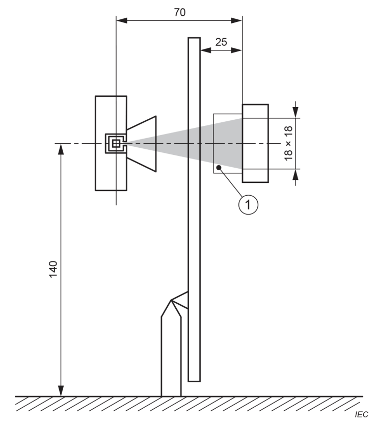
1 PHANTOM
Figure 203.104 – Testing for STRAY RADIATION (X-RAY BEAM horizontal
with X-RAY SOURCE ASSEMBLY below the PATIENT SUPPORT)
Dimensions in centimeters
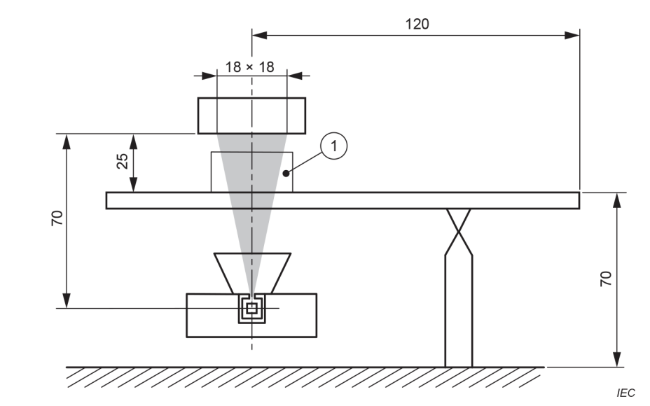
1 PHANTOM
Figure 203.105 – Testing for STRAY RADIATION (X-RAY BEAM vertical
with X-RAY SOURCE ASSEMBLY below the PATIENT SUPPORT)
Dimensions in centimeters
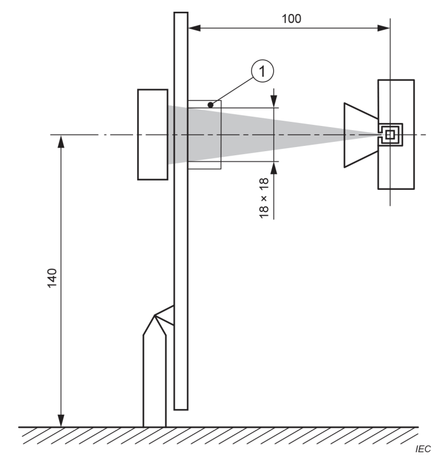
1 PHANTOM
Figure 203.106 – Testing for STRAY RADIATION (X-RAY BEAM horizontal
with X-RAY SOURCE ASSEMBLY above the PATIENT SUPPORT)
Dimensions in centimeters
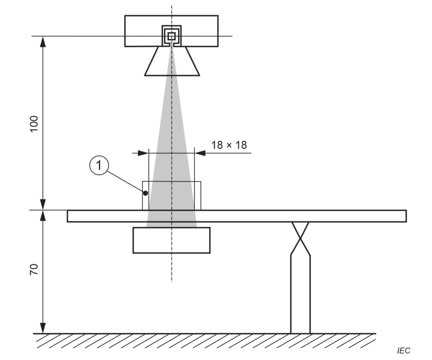
1 PHANTOM
Figure 203.107 – Testing for STRAY RADIATION (X-RAY BEAM vertical
with X-RAY SOURCE ASSEMBLY above the PATIENT SUPPORT)
Dimensions in centimeters
Annexes
The annexes of IEC 60601-1:2005, IEC 60601-1:2005/AMD1:2012 and IEC 60601-
1:2005/AMD2:2020 apply, except as follows:
Annex C
(informative)
Guide to marking and labelling requirements for ME EQUIPMENT and ME SYSTEMS
Annex C of IEC 60601-1:2005, IEC 60601-1:2005/AMD1:2012 and IEC 60601-1:2005/AMD2:2020 applies, except
as
follows:
201.C.1 Marking on the outside of ME EQUIPMENT, ME SYSTEMS or their parts
Beyond those given in 201.7.2, additional requirements for marking on the outside of ME EQUIPMENT are
found in Table 201.C.101.
Table 201.C.101 – Marking on the outside of ME EQUIPMENT or its parts
| Description of marking |
Subclause |
| Beam limiting device |
201.7.2.101 |
| Indication on the X-ray equipment |
203.8.102.2 |
201.C.5 ACCOMPANYING DOCUMENTS, Instructions for use
Beyond those given in 201.7.9, additional requirements for statements in ACCOMPANYING
DOCUMENTS (which include instructions for use and technical description) are found in the
subclauses listed in Table 201.C.102.
Table 201.C.102 – Subclauses requiring statements in ACCOMPANYING DOCUMENTS
| Title |
Subclause |
| Supply mains for ME equipment and ME systems |
201.4.10.2 |
| Cooling conditions |
201.7.2.15 |
| Unintended movement |
201.9.2.3.1 |
| Pressure and force limitation |
201.9.2.3.101 |
| Motion interlock for compression devices |
201.9.2.3.102 |
| Collision protection |
201.9.2.2.4.4.101 |
| Mechanical protective device |
201.9.8.4.101 |
| Protection against excessive temperatures of beam limiting devices |
201.11.101 |
| Dosimetric information for X-ray equipment specified for radioscopy and/or serial radiography
|
203.5.2.4.5.101 |
| Examination protocols |
203.5.2.4.101 |
| Connections of external interlocks |
203.6.2.1.102 |
| Shortened indication of loading factors |
203.6.4.3.102 |
| Linearity and constancy in radiography |
203.6.3.2.102 |
| Measuring arrangements |
203.6.3.2.103.1 |
| Indication of automatic modes |
203.6.4.4 |
| Dosimetric indications |
203.6.4.5 |
| Automatic control system |
203.6.5 |
| Scattered radiation reduction |
203.6.6 |
| Half-value layers and total filtration in X-ray equipment |
203.7.1 |
| Filtration in X-ray source assemblies |
203.7.1.101 |
| Correspondence between X-ray field and effective image reception area |
203.8.5.3 |
| Boundary and dimensions of the X-ray field |
203.8.101 |
| Methods of beam limitation in X-ray equipment |
203.8.102 |
| Indication on the X-ray equipment |
203.8.102.2 |
| Indication in the instructions for use |
203.8.102.3 |
| Accuracy of marked and written indications |
203.8.102.4 |
| Indication by light field-indicator |
203.8.102.5 |
| Interception of the X-ray beam in radioscopy |
203.8.103 |
| Positioning of the X-ray beam axis |
203.8.104 |
| Information in the accompanying documents |
203.10.2 |
| Protection against residual radiation |
203.11 |
| Control of X-ray equipment from a protected area |
203.13.2 |
| Protection by distance |
203.13.3 |
| Significant zones of occupancy with limited stray radiation |
203.13.4.101 |
| Handgrips and control devices |
203.13.5 |
Annex AA
(informative)
Particular guidance and rationale
The following are rationales for specific clauses and subclause in this document, with clause and
subclause numbers parallel to those in the body of the document.
Subclause 201.4.3.101 – Additional potential ESSENTIAL PERFORMANCE requirements
IEC 60601-1:2005, IEC 60601-1:2005/AMD1:2012 and IEC 60601-1:2005/AMD:2020 state that the term ESSENTIAL
PERFORMANCE is directly related to the performance of a clinical function (definition 3.27 in IEC
60601-1:2005 and IEC 60601-1:2005/AMD1:2012). Table 201.101 of this document provides a list of
requirements that can be correlated with the performance of a clinical function and that can therefore
be ESSENTIAL PERFORMANCE. The decision on whether any of these requirements constitutes ESSENTIAL
PERFORMANCE is subject to a RISK EVALUATION that considers the INTENDED USE of the X-RAY EQUIPMENT. The
identification of potential ESSENTIAL PERFORMANCE requirements is justified because the RISK associated
with ionizing X-RADIATION is overweighed by the benefits expected from the examination. The intent of
the requirements in this document is to support MANUFACTURERS in providing state-of-the-art X-RAY
EQUIPMENT that is safe under NORMAL CONDITIONS. Requirements under SINGLE FAULT CONDITIONS are either
stipulated in clauses of IEC 60601-1:2005, IEC 60601-1:2005/AMD1:2012 and IEC 60601-1:2005/AMD2:2020 and
this document or are determined by the RISK EVALUATION. There can be cases in which simply detection of
single faults during regular checks within a maintenance or a QUALITY CONTROL PROCEDURE is considered
sufficient. In some other cases, a RISK which occurs under SINGLE FAULT CONDITIONS is considered
acceptable due to its low probability or low SEVERITY. However, SINGLE FAULT CONDITIONS that result in
an unacceptable RISK due to the probability of harm or the SEVERITY of harm require additional RISK
CONTROL measures. These RISK CONTROL measures are selected according to ISO 14971 and can include
frequent functional self-monitoring, installation of redundant parts, or appropriate protective
measures.
Subclause 201.8.7.3 – Allowable values
These relaxations versus the values of IEC 60601-1:2005, IEC 60601-1:2005/AMD1:2012 and IEC
60601-1:2005/AMD2:2020 have been in place since 1998, originally in the withdrawn IEC 60601-2-7. There
have been no reports that would justify a modification of these values.
Subclause 202.101 – Immunity testing of ESSENTIAL PERFORMANCE
Immunity tests on X-RAY EQUIPMENT specified for RADIOGRAPHY and RADIOSCOPY can be performed only in
RADIOSCOPY mode if there is sufficient evidence that RADIOSCOPY covers the same electrical sources and
signalling paths leading to IRRADIATION.
Subclause 203.5.2.4.5.101 c) – RADIATION data
See rationale to 203.6.4.5.
Subclause 203.5.2.4.5.101 d) – PATIENT ENTRANCE REFERENCE POINT
This document allows the use of an indirect indication to estimate the ABSORBED DOSE to the skin. The
estimate could be drawn from the indications of X-RAY EQUIPMENT parameters followed by a calculation of
the primary AIR KERMA or AIR KERMA RATE at a point specified with reference to the FOCAL SPOT. The
specified point, which has been defined here as the PATIENT ENTRANCE REFERENCE POINT, is intended to be
representative of the point of intersection of the X-RAY BEAM AXIS with the PATIENT. For systems with an
ISOCENTRE, a point on the REFERENCE AXIS 15 cm from the ISOCENTRE towards the FOCAL SPOT has been
specified as the PATIENT ENTRANCE REFERENCE POINT. This distance is assumed to represent a good
approximation of the value of the actual FOCAL SPOT TO SKIN DISTANCE during RADIOLOGICAL PROCEDURES. If
one considers currently available methods to estimate ABSORBED DOSES to selected tissues for RADIOSCOPIC
and cine angiographic examinations of the coronary arteries of adults [4], [5], these methods rely on
the use of distinct operating conditions commonly used in RADIOLOGICAL examinations of the heart. These
operating conditions are associated with a view, an arterial projection, and technique factors on the
X-RAY EQUIPMENT such as the X-RAY TUBE VOLTAGE (kV), the HALF-VALUE LAYER (HVL), the FOCAL SPOT TO SKIN
DISTANCE, the FOCAL SPOT TO IMAGE RECEPTOR DISTANCE and the ENTRANCE FIELD SIZE. A review of the
operating conditions derived from analyses of practice [6], [9] indicates that the defined PATIENT
ENTRANCE REFERENCE POINT is, in fact, a fair approximation of the FOCAL SPOT TO SKIN DISTANCE for each
field. The error in estimating the ABSORBED DOSE to the skin introduced from the defined PATIENT
ENTRANCE REFERENCE POINT should average out as long as the interventional PROCEDURE is composed of
multiple views. When the RADIOLOGICAL PROCEDURE is limited to one or a few views, the possibility of
error in estimating the ABSORBED DOSE to the skin can be higher. However, even under worst case
conditions, errors should be less than a factor of two. Of course, most of this error can be eliminated
by assessing the position of the PATIENT and calculating the appropriate correction factor. The document
has the flexibility of allowing an alternative to the use of the defined PATIENT ENTRANCE REFERENCE
POINT for systems without an ISOCENTRE. In this case, the PATIENT ENTRANCE REFERENCE POINT is located at
a position, defined by the MANUFACTURER to be representative of the point of intersection of the
REFERENCE AXIS with the PATIENT SURFACE, and stated in the ACCOMPANYING DOCUMENTS. Examples of
situations where the MANUFACTURER would use this alternative method of defining the PATIENT ENTRANCE
REFERENCE POINT, would be X-RAY EQUIPMENT that senses the actual FOCAL-SPOT-TO-SKIN DISTANCE, deviates
from traditional geometry or has a FIXED FOCAL SPOT TO SKIN DISTANCE.
NOTE Other reference documents [7], [8].
Subclause 203.5.2.4.5.102 – Test for dosimetric information
X-RAY EQUIPMENT can be equipped with means for manually or automatically configuring the operating
parameters for different INTENDED USES. In addition, different operating parameter sets can be required
to comply with differing national regulations and preferences. In accordance with 203.5.2.4.5.101 b),
details of MODES OF OPERATION and certain other available settings are required to be stated. In
accordance with 203.5.2.4.5.101 c), the associated values of REFERENCE AIR KERMA (RATE) are required to
be given, together with the configurations and test geometries by which they can be verified by the
method described in this subclause. The first stage of compliance testing is to check this information
(other than the dosimetric values) for compliance with the requirements and compatibility with the
measuring method. If the information complies, it is used in the measuring PROCEDURE to verify the
compliance of the stated values of REFERENCE AIR KERMA (RATE). Otherwise, the ME EQUIPMENT is considered
non-compliant without further testing. Thus, the ME EQUIPMENT is delivered with a set of verified values
and also with sufficient information to enable the values to be re-checked at any time. It is emphasised
that, in any circumstances, the test method to be applied is intended to be only in respect of
conditions that are within the range of the INTENDED USE.
Subclause 203.6.2.1 e) – Normal initiation and termination of the IRRADIATION
The purpose of RADIOSCOPY is to observe objects or structures in real time [16], [17]. A LAST IMAGE HOLD
RADIOGRAM is, in essence, a RADIOGRAPH intended for review for study, consultation, or education instead
of continuing RADIOSCOPY [16], [17].
The intent is to limit the number of RADIOGRAPHY images to those necessary for diagnosis or to document
findings and device placement. Typical RADIOGRAPHY dose rates are at least 10 times greater than those
for RADIOSCOPY [16]. If a LAST IMAGE HOLD RADIOGRAM demonstrates the finding adequately, it can be
studied instead of performing RADIOGRAPHY. When no additional RADIOGRAPHY images are obtained, PATIENT
RADIATION dose is reduced [16].
At present, RADIOSCOPY equipment is designed so that the RADIOSCOPY IRRADIATION terminates after the
release of continuous pressure by the OPERATOR, regardless of the quality of the resultant LAST IMAGE
HOLD RADIOGRAM. For radioscopic IRRADIATIONS longer than 1 s or so, this is of no consequence, as the
image quality of the resultant LAST IMAGE HOLD RADIOGRAM will be adequate. However, if the RADIOSCOPY
IRRADIATION is too short, the LAST IMAGE HOLD RADIOGRAM will not be usable, because image quality will
not be adequate. Sufficient time is necessary to stabilize the AUTOMATIC INTENSITY CONTROL before
terminating the radioscopic IRRADIATION.
The new requirement permits automatic creation of a LAST IMAGE HOLD RADIOGRAM of adequate quality with a
short tap on the RADIOSCOPY pedal and automatic termination of the radioscopic IRRADIATION, rather than
manual termination. This avoids an IRRADIATION which is too short and results in an inadequate LAST
IMAGE HOLD RADIOGRAM, or an IRRADIATION that is longer than necessary to obtain a LAST IMAGE HOLD
RADIOGRAM of adequate quality. It permits a LAST IMAGE HOLD RADIOGRAM to be obtained with the shortest
possible RADIOSCOPY IRRADIATION that will result in a usable image, and therefore with the lowest
possible PATIENT RADIATION dose.
It is understood that under certain circumstances (e.g. very low pulse rates) the time limits specified
in 203.6.2.1 could result in a suboptimal LAST IMAGE HOLD RADIOGRAM.
Subclause 203.6.3.102 – High-level control (HLC)
High-level control (HLC) or high dose rate mode(s) can be applicable in cases of extreme body sizes of
the PATIENT or when there is a need for extraordinarily high image quality for a certain PROCEDURE with
a certain PATIENT. In such cases the higher PATIENT exposure can be justified if the benefit of the
PROCEDURE cannot be attained with lower dose rates. Local regulations can set different limits on the
maximum AIR KERMA RATE for the normal and/or the HLC MODES OF OPERATION.
Subclause 203.6.4.3.106 – Electronic documentation of EXAMINATION PROTOCOLS
At the system level, the X-RAY EQUIPMENT includes one or more IMAGE DISPLAY DEVICES. The imaging
performance characteristics of IMAGE DISPLAY SYSTEMS are provided by other standards (e.g. IEC 62563-1
[18] and DICOM, Part 14 [19]). The IMAGE DISPLAY SYSTEM settings selected under 203.6.4.3.106 are
meaningful provided that the IMAGE DISPLAY DEVICE conforms to the X-RAY EQUIPMENT's specifications and
the IMAGE DISPLAY DEVICE performs in accordance to its own standards.
A new addition is to provide a means (e.g. a comparison tool) to flag differences between two (or more)
PRE-PROGRAMMED EXAMINATION PROTOCOLS. The comparison tool can be used to compare EXAMINATION PROTOCOLS
for different examinations or different versions of the same protocol.
X-RAY EQUIPMENT can contain one or more PRE-PROGRAMMED EXAMINATION PROTOCOLS (PPEP). Each PPEP usually
contains settings controlling RADIATION production, X-RAY IMAGE RECEPTOR performance, and image
processing for presentation. Incorrect or inappropriate settings can result in inappropriate IRRADIATION
of the PATIENT and/or in inappropriate clinical utility of the resulting images.
Validating the contents of each PPEP is essential for both safety and performance. For this reason,
documentation of PPEPs over the life of the EQUIPMENT is useful for the RESPONSIBLE ORGANIZATION.
Routine audits by the RESPONSIBLE ORGANIZATION are often performed after EQUIPMENT installation,
commissioning, updates, and clinical configuration changes. Additional audits are indicated if there are
unexpected changes in RADIATION use or the clinical acceptability of the resultant images.
Copies of the downloaded PPEP sets might be retained by the RESPONSIBLE ORGANIZATION to document their
status over the life of the EQUIPMENT.
Audits are facilitated by comparing currently installed PPEPs against a reference set of PPEPs and
flagging the differences. Sources of reference PPEPs include MANUFACTURER'S factory defaults or regional
settings, as well as local settings for substantially similar EQUIPMENT as defined by the RESPONSIBLE
ORGANIZATION.
This document does not require any specific content or format of a PPEP. It implies that all controls and
settings within a PPEP that affect either RADIATION production or the characteristics of the resulting
images be appropriately documented in a form that facilitates comparisons between versions.
Subclause 203.6.4.5 – Dosimetric indications
There is a growing demand worldwide for assessing quantitatively the RADIATION exposure of PATIENTS
during diagnostic and interventional radiology PROCEDUREs. Such demands can also be found in regional
and national regulations. Some particular standards linked to the second edition of IEC 60601-1:2005,
IEC 60601-1:2005/AMD1:2012 and IEC 60601 1:2005/AMD2:2020 include such requirements. The first edition
of IEC 60601-2-43 (2000) asks for presentation of RADIATION data, introduces terms such as skin dose
levels and interventional reference point, and requires dosimetry calibration (6.8.2 of IEC
60601-2-43:2000) and dosimetric indications (51.102.4 of IEC 60601-2-43:2000).
IEC 60601-2-44:2001 and IEC 60601-2-44:2001/AMD1:2002 require dose statements (29.1.102.1 of IEC 60601-2
44:2001 and IEC 60601-2-44:2001/AMD1:2002) and dose information (29.1.103 of IEC 60601 2-44:2001 and IEC
60601-2-44:2001/AMD1:2002). The reason that these two standards were first in the introduction of such
requirements is that both interventional PROCEDUREs and CT examinations are high dose PROCEDUREs.
The transition from the second to the third edition of IEC 60601-1:2005, IEC 60601-1:2005/AMD1:2012 and
IEC 60601-1:2005/AMD2:2020 presents a good opportunity to introduce requirements on RADIATION data and
dosimetric indication into the particular standards for all medical X-ray modalities.
The introduction of the first edition of IEC 60601-1-3 (1994) states the following: “In respect of
economic factors, it is recognized that certain relatively inexpensive types of X-RAY EQUIPMENT are
sometimes justifiably preferred on grounds of cost. For these, this collateral standard avoids imposing
requirements that would unduly restrict their medical effectiveness or would add disproportionately to
the cost.”
Based on this principle, this document exempts DIRECT RADIOGRAPHY EQUIPMENT from the requirements to
provide dosimetric indications in 203.6.4.5. However, for X-RAY EQUIPMENT specified for DIRECT
RADIOGRAPHY (including film-screen RADIOGRAPHY), a simplified dosimetric indication could be used by
displaying a value, i.e. “the REFERENCE AIR KERMA resulting from the last radiographic IRRADIATION shall
be displayed in mGy together with this unit”. This value might be pre-programmed as a function of the
LOADING FACTORS.
It also implies that when shifting from screen-film RADIOGRAPHY to CR, it is the responsibility of the
RESPONSIBLE ORGANIZATION to ensure compliance with the general requirement for INDIRECT RADIOGRAPHY, or
else compliance of the actual X-ray system with this document can no longer be stated. INDIRECT
RADIOGRAPHY includes CR and DR systems as well as any kind of RADIOGRAPHY performed with image
intensifiers.
The accuracy requirement for dosimetric indications of ± 35 % was harmonized with EU and US requirements
and is consistent with the real technically achievable level of accuracy. For RADIATION data stated in
the ACCOMPANYING DOCUMENTS, the accuracy requirement of ± 50 % has been set to reflect the method used
for compliance assessment and the fact that the RADIATION output of a given type of X-RAY TUBE can vary
within broad limits.
It shall be stressed that all requirements on RADIATION data and dosimetric indication in the IEC
standards are meant to give information to the OPERATOR about PATIENT doses and not to PATIENTS
themselves.
Subclause 203.13.4.101 – SIGNIFICANT ZONES OF OCCUPANCY with limited STRAY RADIATION
In RADIOLOGICAL examinations which require the OPERATOR or staff to be close to the PATIENT during
LOADING, a significant contribution to the total STRAY RADIATION exposure to these persons is often made
by SCATTERED RADIATION from the PATIENT and other objects in the X-RAY BEAM. For X-RAY EQUIPMENT
conventionally and most frequently used for performing gastro-intestinal examinations, limits of STRAY
RADIATION in the SIGNIFICANT ZONES OF OCCUPANCY are required.
The instructions for use shall state the applicable limits and declare that they are not exceeded. Where
they apply, these requirements can provide a normalized basis for the local rules and guidelines that
shall be established for the protection of persons, taking into account the local circumstances and the
prevailing WORKLOAD.
Bibliography
- IEC 60627, Diagnostic X-ray imaging equipment – Characteristics of general purpose and mammographic
anti-scatter grids
- IEC 61267:2005, Medical diagnostic X-ray equipment – Radiation conditions for use in the determination
of characteristics
- ISO 4090:2001, Photography – Medical radiographic cassettes/screens/films and hard-copy imaging films –
Dimensions and specifications
- STERN, S.H., ROSENSTEIN, M., RENAUD, L., ZANKL M. Handbook of Selected Tissue Doses for Fluoroscopic and
Cineangiographic Examination of the Coronary Arteries. U.S. Department of Health and Human Services
Publication FDA 95-8289, May 1995
- NAHASS, G.T. Fluoroscopy and the Skin: Implications for Radiofrequency Catheter Ablation. Am. J. of
Card. 1995, 76, 174-176
- LESPERANCE, J. Coronary Angiography Projections. Institut de Cardiologie de Montréal, April 1982
- HADDI, R., RENAUD, L. Projections et Conditions Techniques en Usage en Angiocardiologie, Etude
Statistique. Rapport technique, Service de Génie Biomédical, Institut de Cardiologie de Montréal, March
1993
- HYKES, D.L. Determination of Patient Radiation Doses Associated with Cardiac Catherization Procedures
using Direct measurements and Monte Carlo Methods. Ph.D. dissertation. Medical College of Ohio, Toledo
OH
- HUYSKENS, C.J., HUMMEL, W.A. Data Analysis on Patient Exposures in Cardiac Angiography. Radiation
Protection Dosimetry 1995, 57(1), 475-480
- IEC 60601-2-28:2017, Medical electrical equipment – Part 2-28: Particular requirements for the basic
safety and essential performance of X-ray tube assemblies for medical diagnosis
- IEC 60601-1-8, Medical electrical equipment – Part 1-8: General requirements for basic safety and
essential performance – Collateral standard: General requirements, tests and guidance for alarm systems
in medical electrical equipment and medical electrical systems
- IEC 60601-1-10, Medical electrical equipment – Part 1-10: General requirements for basic safety and
essential performance – Collateral Standard: Requirements for the development of physiologic closed-loop
controllers
- IEC 60601-1-11:2015, Medical electrical equipment – Part 1-11: General requirements for basic safety and
essential performance – Collateral Standard: Requirements for medical electrical equipment and medical
electrical systems used in the home healthcare environment
IEC 60601-1-11:2015/AMD1:2020
- IEC 60601-1-12:2014, Medical electrical equipment – Part 1-12: General requirements for basic safety and
essential performance – Collateral Standard: Requirements for medical electrical equipment and medical
electrical systems intended for use in the emergency medical services environment
IEC 60601-1-12:2014/AMD1:2020
- IEC 60601-2-43:2010, Medical electrical equipment – Part 2-43: Particular requirements for the basic
safety and essential performance of X-ray equipment for interventional procedures
IEC 60601-2-43:2010/AMD1:2017
IEC 60601-2-43:2010/AMD2:2019
- ICRP 117:2010, Radiological Protection in Fluoroscopically Guided Procedures outside the Imaging
Department. ICRP Publication 117, Ann. ICRP 40(6)
- ICRP 121:2013, Radiological Protection in Paediatric Diagnostic and Interventional Radiology. ICRP
Publication 121, Ann. ICRP 42(2)
- IEC 62563-1:2009, Medical electrical equipment – Medical image display systems – Part 1: Evaluation
methods
IEC 62563-1:2009/AMD1:2016
IEC 62563-1:2009/AMD2:2021
- DICOM, Part 14 (PS 3.14-2016e), Digital Imaging and Communications in Medicine – Part 14: Grayscale
Standard Display Function
- IEC 60601-1-9, Medical electrical equipment – Part 1-9: General requirements for basic safety and
essential performance – Collateral Standard: Requirements for environmentally conscious design
- ISO 14971:2019, Medical devices – Application of risk management to medical devices
- IEC 62220-1-1:2015, Medical electrical equipment – Characteristics of digital X-ray imaging devices –
Part 1-1: Determination of the detective quantum efficiency – Detectors used in radiographic imaging
- IEC 60601-2-43:20002, Medical electrical equipment – Part 2-43: Particular requirements for the safety
of X-ray equipment for interventional procedures
- IEC 60601-2-44:20013, Medical electrical equipment – Part 2-44: Particular requirements for the safety
of X-ray equipment for computed tomography
IEC 60601-2-44:2001/AMD1:2002
- IEC 60601-1-3:19944, Medical electrical equipment – Part 1: General requirements for safety – Section 3:
Collateral standard: General requirements for radiation protection in diagnostic X-ray equipment
- This reference was withdrawn and replaced with IEC 60601-2-43:2010, IEC 60601-2-43:2010/AMD1:2017 and
IEC 60601-2-43:2010/AMD2:2019.
- This reference was withdrawn and replaced with IEC 60601-2-44:2001, IEC 60601-2-43:2001/AMD1:2012 and
IEC 60601-2-44:2001/AMD2:2016.
- This reference was withdrawn and replaced with IEC 60601-1-3:2008, IEC 60601-1-3:2008/AMD1:2013 and IEC
60601-1-3:2008/AMD2:2021.
Index of defined terms used in this document
NOTE In the present document only terms defined in IEC 60601-1:2005, IEC
60601-1:2005/AMD1:2012 and
IEC 60601-1:2005/AMD2:2020, its collateral standards, in IEC TR 60788:2004 or in 201.3 of this document
were
used. The definitions used in this document can be looked up at http://std.iec.ch/glossary.
ABSORBED DOSE
IEC TR 60788:2004, rm-13-08
ACCESSIBLE PART
IEC 60601-1:2005, 3.2
ACCESSIBLE SURFACE
IEC 60601-1-3:2008, 3.1
ACCOMPANYING DOCUMENT
IEC 60601-1:2005, 3.4
ADDED FILTER
IEC 60601-1-3:2008, 3.2
AIR KERMA
IEC 60601-1-3:2008, 3.4
AIR KERMA RATE
IEC 60601-1-3:2008, 3.5
ANTI-SCATTER GRID
IEC TR 60788:2004, rm-32-06
APPARENT RESISTANCE OF SUPPLY MAINS
201.3.201
ATTENUATION
IEC 60601-1-3:2008, 3.7
ATTENUATION EQUIVALENT
IEC 60601-1-3:2008, 3.8
AUTOMATIC CONTROL SYSTEM
IEC 60601-1-3:2008, 3.9
AUTOMATIC EXPOSURE CONTROL
IEC 60601-1-3:2008, 3.10
AUTOMATIC INTENSITY CONTROL
201.2.202
BASIC SAFETY
IEC 60601-1:2005, 3.10
BEAM LIMITING DEVICE
IEC 60601-1-3:2008, 3.11
BEAM LIMITING SYSTEM
IEC 60601-1-3:2008, 3.12
COMPRESSION DEVICE
IEC TR 60788:2004, rm-35-15
CONSTANT POTENTIAL HIGH-VOLTAGE GENERATOR
IEC TR 60788:2004, rm-21-06
CONTINUOUS ANODE INPUT POWER
IEC 60601-1-3:2008, 3.13
CONTROL PANEL
IEC 60601-1-3:2008, 3.14
CURRENT TIME PRODUCT
IEC 60601-1-3:2008, 3.16
DIAPHRAGM
IEC 60601-1-3:2008, 3.17
DIGITAL X-RAY IMAGING DEVICE
IEC 62220-1-1:2015, 3.6
DIRECT RADIOGRAPHY
201.3.203
DIRECT RADIOSCOPY
201.3.204
DISPLAY
IEC TR 60788:2004, rm-84-01
DOSE AREA PRODUCT
201.3.205
DOSE AREA PRODUCT METER
IEC 60580:2019, 3.7
DOSE EQUIVALENT
IEC 60601-1-3:2008, 3.18
DOSIMETER
201.3.206
EARTH LEAKAGE CURRENT
IEC 60601-1:2005 and IEC 60601-1:2005/AMD1:2012, 3.25
EDGE FILTER
IEC 60601-1-3:2008, 3.19
EFFECTIVE IMAGE RECEPTION AREA
IEC 60601-1-3:2008, 3.20
EMERGENCY MEDICAL SERVICES ENVIRONMENT
IEC 60601-1-12:2014, 3.1
ENCLOSURE
IEC 60601-1:2005, 3.26
ENTRANCE FIELD SIZE
201.3.207
ENTRANCE SURFACE
IEC 60601-1-3:2008, 3.21
ESSENTIAL PERFORMANCE
IEC 60601-1:2005 and IEC 60601-1:2005/AMD1:2012, 3.27
EXAMINATION PROTOCOL
201.3.208
EXAMINATION PROTOCOL SELECTION CONTROL
201.3.209
EXPOSURE INDEX
IEC 62494-1:2008, 3.7
EXTRA-FOCAL RADIATION
IEC 60601-1-3:2008, 3.22
FILM CHANGER
IEC TR 60788:2004, rm-31-07
FILTER
IEC 60601-1-3:2008, 3.23
FILTRATION
IEC 60601-1-3:2008, 3.24
FOCAL SPOT
IEC TR 60788:2004, rm-20-13s
FOCAL SPOT TO IMAGE RECEPTOR DISTANCE
IEC 60601-1-3:2008, 3.25
FOCAL SPOT TO SKIN DISTANCE
IEC 60601-1-3:2008, 3.26
HALF-VALUE LAYER
IEC 60601-1-3:2008, 3.27
HAZARD
IEC 60601-1:2005, IEC 60601-1:2005/AMD1:2012 and IEC 60601-1:2005/AMD2:2020,
3.39
HIGH VOLTAGE
IEC 60601-1:2005, 3.41
HIGH-VOLTAGE GENERATOR
201.3.210
HOME HEALTHCARE ENVIRONMENT
IEC 60601-1-11:2015, 3.1
IMAGE DISPLAY DEVICE
IEC 62563-1:2009, 3.1.13
IMAGE DISPLAY SYSTEM
IEC 62563-1:2009, 3.1.14
IMAGE RECEPTION AREA
IEC 60601-1-3:2008, 3.28
IMAGE RECEPTION PLANE
201.3.211
INDIRECT RADIOGRAPHY
201.3.212
INDIRECT RADIOSCOPY
201.3.213
INTENDED USE
IEC 60601-1:2005, IEC 60601-1:2005/AMD1:2012 and IEC 60601-1:2005/AMD2:2020,
3.44
INTENSIFYING SCREEN
IEC TR 60788:2004, rm-32-38
INTERLOCK
201.3.214
IRRADIATION
IEC 60601-1-3:2008, 3.30
IRRADIATION SWITCH
IEC 60601-1-3:2008, 3.31
IRRADIATION TIME
IEC 60601-1-3:2008, 3.32
IRRADIATION-EVENT
IEC 61910-1:2014, 3.1
ISOCENTRE
201.3.215
LAST IMAGE HOLD RADIOGRAM (LIH RADIOGRAM)
201.3.216
LEAKAGE RADIATION
IEC 60601-1-3:2008, 3.33
LIGHT FIELD
IEC TR 60788:2004, rm-37-09
LIGHT FIELD-INDICATOR
IEC TR 60788:2004, rm 37-31
LINEARIZED DATA
IEC 62220-1-1:2015, 3.9
LOADING
IEC 60601-1-3:2008, 3.34
LOADING FACTOR
IEC 60601-1-3:2008, 3.35
LOADING STATE
IEC 60601-1-3:2008, 3.36
LOADING TIME
IEC 60601-1-3:2008, 3.37
MAINS PART
IEC 60601-1:2005 and IEC 60601-1:2005/AMD1:2012, 3.49
MAINS VOLTAGE
IEC 60601-1:2005, 3.54
MANUFACTURER
IEC 60601-1:2005, IEC 60601-1:2005/AMD1:2012 and IEC 60601-1:2005/AMD2:2020,
3.55
MEASURED VALUE
IEC 60601-1-3:2008, 3.38
MECHANICAL HAZARD
IEC 60601-1:2005, 3.61
MECHANICAL PROTECTIVE DEVICE
IEC 60601-1:2005, 3.62
MEDICAL ELECTRICAL EQUIPMENT (ME EQUIPMENT)
IEC 60601-1:2005, 3.63
MEDICAL ELECTRICAL SYSTEM (ME SYSTEM)
IEC 60601-1:2005, 3.64
MOBILE
IEC 60601-1:2005 and IEC 60601-1:2005/AMD1:2012, 3.65
MODE OF OPERATION
IEC 60601-1-3:2008, 3.40
MODEL OR TYPE REFERENCE
IEC 60601-1:2005, 3.66
NARROW BEAM CONDITION
IEC 60601-1-3:2008, 3.41
NOMINAL
IEC 60601-1:2005, 3.69
NOMINAL ELECTRIC POWER
201.3.217
NOMINAL FOCAL SPOT VALUE
IEC TR 60788:2004, rm-20-14
NOMINAL SHORTEST IRRADIATION TIME
201.3.218
NOMINAL X-RAY TUBE VOLTAGE
IEC 60601-1-3:2008, 3.42
NORMAL CONDITION
IEC 60601-1:2005, 3.70
NORMAL USE
IEC 60601-1:2005 and IEC 60601-1:2005/AMD1:2012, 3.71
OPERATOR
IEC 60601-1:2005, 3.73
ORIGINAL DATA
IEC 62220-1-1:2015, 3.13
OVER-CURRENT RELEASE
IEC 60601-1:2005, 3.74
PATIENT
IEC 60601-1:2005 and IEC 60601-1:2005/AMD1:2012, 3.76
PATIENT ENTRANCE REFERENCE POINT
IEC 60601-1-3:2008, 3.43
PATIENT SUPPORT
IEC TR 60788:2004, rm-30-02
PERCENTAGE RIPPLE
IEC 60601-1-3:2008, 3.44
PERMANENTLY INSTALLED
IEC 60601-1:2005, 3.84
PHANTOM
IEC 60601-1-3:2008, 3.46
PRE-PROGRAMMED EXAMINATION PROTOCOL
201.3.219
PRIMARY PROTECTIVE SHIELDING
IEC 60601-1-3:2008, 3.47
PROCEDURE
IEC 60601-1:2005, IEC 60601-1:2005/AMD1:2012 and IEC 60601-1:2005/AMD2:2020,
3.88
PROTECTED AREA
IEC 60601-1-3:2008, 3.48
PROTECTIVE CLOTHING
IEC 60601-1-3:2008, 3.50
PROTECTIVE DEVICE
IEC 60601-1-3:2008, 3.50
PROTECTIVE EARTH CONNECTION
IEC 60601-1:2005, 3.94
PROTECTIVE EARTH TERMINAL
IEC 60601-1:2005, 3.95
PROTECTIVE SHIELDING
IEC 60601-1-3:2008, 3.51
QUALITY CONTROL
201.3.220
QUALITY EQUIVALENT FILTRATION
IEC 60601-1-3:2008, 3.52
RADIATION
IEC 60601-1-3:2008, 3.53
RADIATION APERTURE
IEC 60601-1-3:2008, 3.54
RADIATION BEAM
IEC TR 60788:2004, rm-37-05
RADIATION CONDITION
IEC 60601-1-3:2008, 3.56
RADIATION DETECTOR
IEC 60601-1-3:2008, 3.57
RADIATION DOSE STRUCTURED REPORT (RDSR)
IEC 61910-1:2014, 3.3
RADIATION OUTPUT
201.3.221
RADIATION PROTECTION
IEC 60601-1-3:2008, 3.59
RADIATION QUALITY
IEC 60601-1-3:2008, 3.60
RADIATION SOURCE
IEC 60601-1-3:2008, 3.61
RADIOGRAM
IEC TR 60788:2004, rm-32-02
RADIOGRAPHIC CASSETTE
IEC TR 60788:2004, rm-35-14
RADIOGRAPHIC RATING
IEC 60601-1-3:2008, 3.63
RADIOGRAPHY
IEC 60601-1-3:2008, 3.64
RADIOLOGICAL
IEC 60601-1-3:2008, 3.65
RADIOLOGICAL IMAGE
IEC 60601-1-3:2008, 3.66
RADIOSCOPY
IEC 60601-1-3:2008, 3.69
RADIOSCOPY REPLAY IMAGE SEQUENCE
201.3.222
RATED
IEC 60601-1:2005, 3.97
RELEVANT IMAGE REGION
IEC 62494-1:2008, 3.12
RDSR END OF PROCEDURE TRANSMISSION
IEC 61910-1:2014, 3.5
READY STATE
IEC TR 60788:2004, rm-84-05
REFERENCE AIR KERMA
IEC 60601-1-3:2008, 3.70
REFERENCE AIR KERMA RATE
IEC 60601-1-3:2008, 3.71
REFERENCE AXIS
IEC TR 60788:2004, rm-37-03
REGION OF INTEREST
201.3.223
RESIDUAL RADIATION
IEC 60601-1-3:2008, 3.72
RESPONSIBLE ORGANIZATION
IEC 60601-1:2005, 3.101
RISK
IEC 60601-1:2005, IEC 60601-1:2005/AMD1:2012 and IEC 60601-1:2005/AMD2:2020,
3.102
RISK CONTROL
IEC 60601-1:2005, IEC 60601-1:2005/AMD1:2012 and IEC 60601-1:2005/AMD2:2020,
3.105
RISK MANAGEMENT
IEC 60601-1:2005, IEC 60601-1:2005/AMD1:2012 and IEC 60601-1:2005/AMD2:2020,
3.107
RISK MANAGEMENT FILE
IEC 60601-1:2005, IEC 60601-1:2005/AMD1:2012 and IEC 60601-1:2005/AMD2:2020,
3.108
SAFE WORKING LOAD
IEC 60601-1:2005, 3.109
SCATTERED RADIATION
IEC 60601-1-3:2008, 3.73
SENSITIVE VOLUME
IEC TR 60788:2004, rm-51-07
SERIAL RADIOGRAPHY
201.3.224
SEVERITY
IEC 60601-1:2005, IEC 60601-1:2005/AMD1:2012 and IEC 60601-1:2005/AMD2:2020,
3.114
SIGNIFICANT ZONE OF OCCUPANCY
IEC 60601-1-3:2008, 3.74
SINGLE FAULT CONDITION
IEC 60601-1:2005 and IEC 60601-1:2005/AMD1:2012, 3.116
SINGLE FAULT SAFE
IEC 60601-1:2005, 3.117
SIX-PEAK HIGH-VOLTAGE GENERATOR
201.3.225
SPATIAL FREQUENCY
IEC 62220-1-1:2015, 3.17
SPOTFILM DEVICE
IEC TR 60788:2004, rm-31-05
STRAY RADIATION
IEC 60601-1-3:2008, 3.75
SUPPLY MAINS
IEC 60601-1:2005, 3.120
TARGET ANGLE
IEC TR 60788:2004, rm-20-11
THERMAL CUT-OUT
IEC 60601-1:2005, 3.124
TIMING DEVICE
201.3.226
TOOL
IEC 60601-1:2005, 3.127
TOTAL FILTRATION
IEC 60601-1-3:2008, 3.77
TOUCH CURRENT
IEC 60601-1:2005, 3.129
TRANSFER
IEC TR 60788:2004, rm-84-02
TRANSPORTABLE
IEC 60601-1:2005 and IEC 60601-1:2005/AMD1:2012, 3.130
TWELVE-PEAK HIGH-VOLTAGE GENERATOR
201.3.227
USABILITY ENGINEERING
IEC 60601-1:2005, IEC 60601-1:2005/AMD1:2012 and IEC 60601-1:2005/AMD2:2020,
3.137
WORKLOAD
IEC TR 60788:2004, rm-61-03
X-RADIATION (RADIATION)
IEC 60601-1-3:2008, 3.53
X-RAY BEAM (RADIATION BEAM)
IEC 60601-1-3:2008, 3.55
X-RAY BEAM AXIS
201.3.228
X-RAY EQUIPMENT
IEC 60601-1-3:2008, 3.78
X-RAY FIELD (RADIATION FIELD)
IEC 60601-1-3:2008, 3.58
X-RAY GENERATOR
IEC 60601-1-3:2008, 3.79
X-RAY IMAGE RECEPTOR
IEC 60601-1-3:2008, 3.81
X-RAY IMAGING ARRANGEMENT
IEC 60601-1-3:2008, 3.80
X-RAY PATTERN
IEC 60601-1-3:2008, 3.82
X-RAY SOURCE ASSEMBLY (RADIATION SOURCE ASSEMBY)
IEC 60601-1-3:2008, 3.62
X-RAY TUBE
IEC 60601-1-3:2008, 3.83
X-RAY TUBE ASSEMBLY
IEC 60601-1-3:2008, 3.84
X-RAY TUBE CURRENT
IEC 60601-1-3:2008, 3.85
X-RAY TUBE HOUSING
IEC 60601-1-3:2008, 3.86
X-RAY TUBE VOLTAGE
IEC 60601-1-3:2008, 3.88